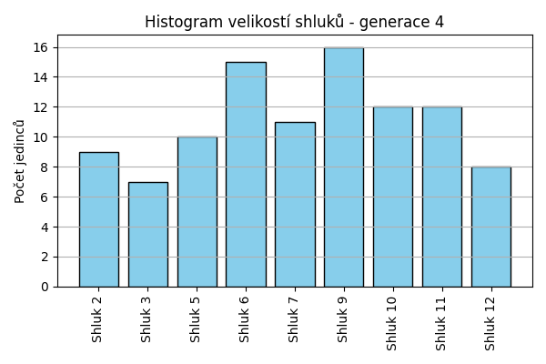
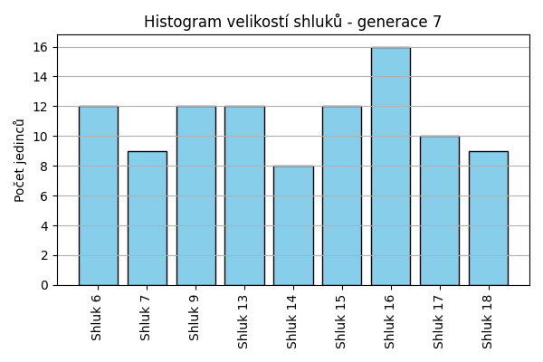
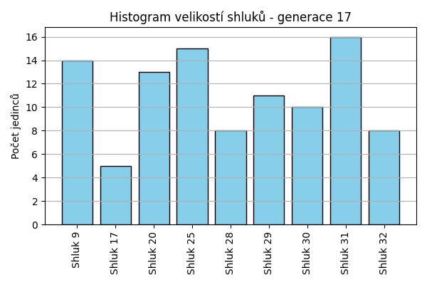
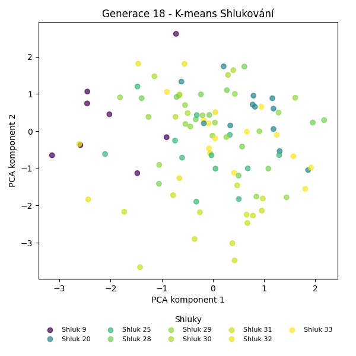
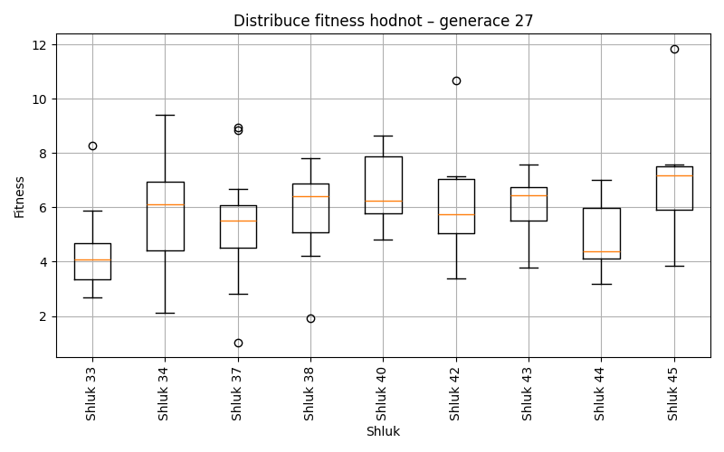
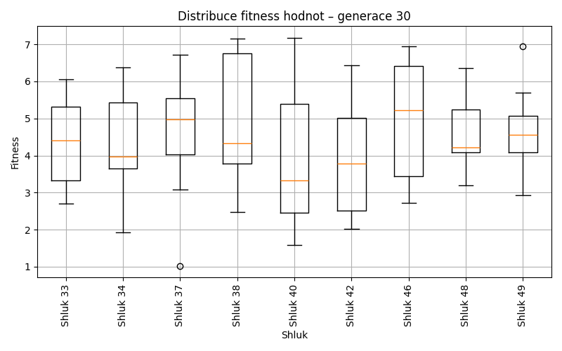
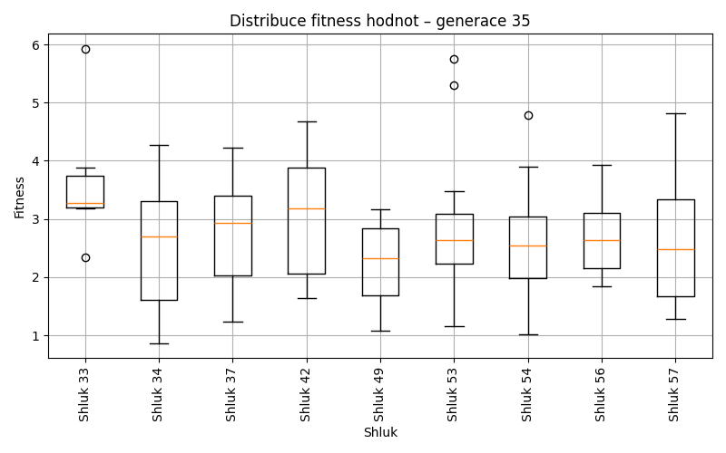
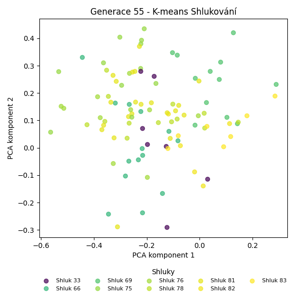

Kmeans shlukování – Vývoj
Generace 0
Generace 1
Stabilita mezi generací 0 → 1:
Shluk 1 → 1: 9 jedinců (56.2 %)
Shluk 1 → 9: 2 jedinců (12.5 %)
Shluk 1 → 8: 2 jedinců (12.5 %)
Shluk 1 → 6: 2 jedinců (12.5 %)
Shluk 1 → 2: 1 jedinců (6.2 %)
Shluk 2 → 5: 4 jedinců (40.0 %)
Shluk 2 → 2: 3 jedinců (30.0 %)
Shluk 2 → 6: 1 jedinců (10.0 %)
Shluk 2 → 3: 2 jedinců (20.0 %)
Shluk 3 → 6: 1 jedinců (7.7 %)
Shluk 3 → 3: 6 jedinců (46.2 %)
Shluk 3 → 4: 2 jedinců (15.4 %)
Shluk 3 → 1: 1 jedinců (7.7 %)
Shluk 3 → 9: 3 jedinců (23.1 %)
Shluk 8 → 8: 5 jedinců (55.6 %)
Shluk 8 → 9: 3 jedinců (33.3 %)
Shluk 8 → 4: 1 jedinců (11.1 %)
Shluk 5 → 5: 5 jedinců (55.6 %)
Shluk 5 → 9: 2 jedinců (22.2 %)
Shluk 5 → 1: 1 jedinců (11.1 %)
Shluk 5 → 2: 1 jedinců (11.1 %)
Shluk 7 → 7: 6 jedinců (60.0 %)
Shluk 7 → 1: 2 jedinců (20.0 %)
Shluk 7 → 9: 1 jedinců (10.0 %)
Shluk 7 → 2: 1 jedinců (10.0 %)
Shluk 0 → 5: 3 jedinců (27.3 %)
Shluk 0 → 8: 5 jedinců (45.5 %)
Shluk 0 → 7: 1 jedinců (9.1 %)
Shluk 0 → 4: 1 jedinců (9.1 %)
Shluk 0 → 3: 1 jedinců (9.1 %)
Shluk 4 → 6: 2 jedinců (18.2 %)
Shluk 4 → 4: 8 jedinců (72.7 %)
Shluk 4 → 9: 1 jedinců (9.1 %)
Shluk 6 → 6: 4 jedinců (36.4 %)
Shluk 6 → 3: 3 jedinců (27.3 %)
Shluk 6 → 4: 1 jedinců (9.1 %)
Shluk 6 → 7: 1 jedinců (9.1 %)
Shluk 6 → 9: 1 jedinců (9.1 %)
Shluk 6 → 8: 1 jedinců (9.1 %)
Jaccardovo mapování a overlap: Generace 0 → 1
- Cluster 1 → 1 (Jaccard: 0.45, Overlap: 0.69)
- Cluster 2 → 2 (Jaccard: 0.23, Overlap: 0.50)
- Cluster 3 → 3 (Jaccard: 0.32, Overlap: 0.50)
- Cluster 8 → 8 (Jaccard: 0.29, Overlap: 0.56)
- Cluster 5 → 5 (Jaccard: 0.31, Overlap: 0.56)
- Cluster 7 → 7 (Jaccard: 0.50, Overlap: 0.75)
- Cluster 0 → 8 (Jaccard: 0.26, Overlap: 0.45)
- Cluster 4 → 4 (Jaccard: 0.50, Overlap: 0.73)
- Cluster 6 → 6 (Jaccard: 0.24, Overlap: 0.40)
Posun centroidů mezi generací 0 → 1:
- Shluk 0: 7.7682
- Shluk 1: 9.2267
- Shluk 2: 9.4375
- Shluk 3: 6.8172
- Shluk 4: 8.9783
- Shluk 5: 9.5060
- Shluk 6: 6.7451
- Shluk 7: 7.6134
- Shluk 8: 6.0800
Generace 2
Stabilita mezi generací 1 → 2:
Shluk 1 → 9: 2 jedinců (15.4 %)
Shluk 1 → 3: 2 jedinců (15.4 %)
Shluk 1 → 8: 4 jedinců (30.8 %)
Shluk 1 → 10: 2 jedinců (15.4 %)
Shluk 1 → 2: 1 jedinců (7.7 %)
Shluk 1 → 7: 1 jedinců (7.7 %)
Shluk 1 → 4: 1 jedinců (7.7 %)
Shluk 5 → 2: 4 jedinců (33.3 %)
Shluk 5 → 5: 6 jedinců (50.0 %)
Shluk 5 → 3: 1 jedinců (8.3 %)
Shluk 5 → 7: 1 jedinců (8.3 %)
Shluk 6 → 6: 5 jedinců (50.0 %)
Shluk 6 → 5: 2 jedinců (20.0 %)
Shluk 6 → 7: 2 jedinců (20.0 %)
Shluk 6 → 3: 1 jedinců (10.0 %)
Shluk 8 → 8: 5 jedinců (38.5 %)
Shluk 8 → 10: 4 jedinců (30.8 %)
Shluk 8 → 3: 1 jedinců (7.7 %)
Shluk 8 → 5: 2 jedinců (15.4 %)
Shluk 8 → 2: 1 jedinců (7.7 %)
Shluk 2 → 2: 5 jedinců (83.3 %)
Shluk 2 → 9: 1 jedinců (16.7 %)
Shluk 7 → 5: 1 jedinců (12.5 %)
Shluk 7 → 8: 1 jedinců (12.5 %)
Shluk 7 → 7: 6 jedinců (75.0 %)
Shluk 3 → 10: 1 jedinců (8.3 %)
Shluk 3 → 3: 8 jedinců (66.7 %)
Shluk 3 → 4: 2 jedinců (16.7 %)
Shluk 3 → 7: 1 jedinců (8.3 %)
Shluk 4 → 6: 1 jedinců (7.7 %)
Shluk 4 → 7: 5 jedinců (38.5 %)
Shluk 4 → 4: 4 jedinců (30.8 %)
Shluk 4 → 5: 1 jedinců (7.7 %)
Shluk 4 → 10: 2 jedinců (15.4 %)
Shluk 9 → 9: 9 jedinců (69.2 %)
Shluk 9 → 6: 1 jedinců (7.7 %)
Shluk 9 → 8: 2 jedinců (15.4 %)
Shluk 9 → 5: 1 jedinců (7.7 %)
Jaccardovo mapování a overlap: Generace 1 → 2
- Cluster 1 → 8 (Jaccard: 0.19, Overlap: 0.33)
- Cluster 5 → 5 (Jaccard: 0.32, Overlap: 0.50)
- Cluster 6 → 6 (Jaccard: 0.42, Overlap: 0.71)
- Cluster 8 → 8 (Jaccard: 0.25, Overlap: 0.42)
- Cluster 2 → 2 (Jaccard: 0.42, Overlap: 0.83)
- Cluster 7 → 7 (Jaccard: 0.33, Overlap: 0.75)
- Cluster 3 → 3 (Jaccard: 0.47, Overlap: 0.67)
- Cluster 4 → 4 (Jaccard: 0.25, Overlap: 0.57)
- Cluster 9 → 9 (Jaccard: 0.56, Overlap: 0.75)
Posun centroidů mezi generací 1 → 2:
- Shluk 0: 8.6203
- Shluk 1: 7.3345
- Shluk 2: 5.8321
- Shluk 3: 8.0034
- Shluk 4: 9.5745
- Shluk 5: 6.6532
- Shluk 6: 8.0502
- Shluk 7: 8.0391
- Shluk 8: 8.3992
Generace 3
Stabilita mezi generací 2 → 3:
Shluk 9 → 8: 1 jedinců (8.3 %)
Shluk 9 → 9: 9 jedinců (75.0 %)
Shluk 9 → 2: 1 jedinců (8.3 %)
Shluk 9 → 7: 1 jedinců (8.3 %)
Shluk 2 → 2: 6 jedinců (54.5 %)
Shluk 2 → 3: 2 jedinců (18.2 %)
Shluk 2 → 10: 1 jedinců (9.1 %)
Shluk 2 → 5: 1 jedinců (9.1 %)
Shluk 2 → 7: 1 jedinců (9.1 %)
Shluk 6 → 3: 1 jedinců (14.3 %)
Shluk 6 → 11: 2 jedinců (28.6 %)
Shluk 6 → 6: 2 jedinců (28.6 %)
Shluk 6 → 7: 1 jedinců (14.3 %)
Shluk 6 → 5: 1 jedinců (14.3 %)
Shluk 8 → 7: 1 jedinců (8.3 %)
Shluk 8 → 8: 5 jedinců (41.7 %)
Shluk 8 → 10: 4 jedinců (33.3 %)
Shluk 8 → 9: 2 jedinců (16.7 %)
Shluk 5 → 5: 5 jedinců (38.5 %)
Shluk 5 → 6: 2 jedinců (15.4 %)
Shluk 5 → 9: 1 jedinců (7.7 %)
Shluk 5 → 10: 1 jedinců (7.7 %)
Shluk 5 → 11: 4 jedinců (30.8 %)
Shluk 3 → 6: 1 jedinců (7.7 %)
Shluk 3 → 2: 2 jedinců (15.4 %)
Shluk 3 → 3: 6 jedinců (46.2 %)
Shluk 3 → 8: 2 jedinců (15.4 %)
Shluk 3 → 11: 1 jedinců (7.7 %)
Shluk 3 → 9: 1 jedinců (7.7 %)
Shluk 10 → 8: 3 jedinců (33.3 %)
Shluk 10 → 10: 4 jedinců (44.4 %)
Shluk 10 → 7: 1 jedinců (11.1 %)
Shluk 10 → 5: 1 jedinců (11.1 %)
Shluk 7 → 7: 8 jedinců (50.0 %)
Shluk 7 → 6: 2 jedinců (12.5 %)
Shluk 7 → 5: 1 jedinců (6.2 %)
Shluk 7 → 2: 1 jedinců (6.2 %)
Shluk 7 → 11: 4 jedinců (25.0 %)
Shluk 4 → 11: 1 jedinců (14.3 %)
Shluk 4 → 7: 2 jedinců (28.6 %)
Shluk 4 → 9: 1 jedinců (14.3 %)
Shluk 4 → 10: 1 jedinců (14.3 %)
Shluk 4 → 5: 1 jedinců (14.3 %)
Shluk 4 → 3: 1 jedinců (14.3 %)
Jaccardovo mapování a overlap: Generace 2 → 3
- Cluster 9 → 9 (Jaccard: 0.53, Overlap: 0.75)
- Cluster 2 → 2 (Jaccard: 0.40, Overlap: 0.60)
- Cluster 6 → 6 (Jaccard: 0.17, Overlap: 0.29)
- Cluster 8 → 8 (Jaccard: 0.28, Overlap: 0.45)
- Cluster 5 → 5 (Jaccard: 0.28, Overlap: 0.50)
- Cluster 3 → 3 (Jaccard: 0.35, Overlap: 0.60)
- Cluster 10 → 10 (Jaccard: 0.25, Overlap: 0.44)
- Cluster 7 → 7 (Jaccard: 0.35, Overlap: 0.53)
- Cluster 4 → 7 (Jaccard: 0.10, Overlap: 0.29)
Posun centroidů mezi generací 2 → 3:
- Shluk 0: 4.1182
- Shluk 1: 2.1958
- Shluk 2: 6.8229
- Shluk 3: 5.7092
- Shluk 4: 6.9232
- Shluk 5: 5.8965
- Shluk 6: 5.3716
- Shluk 7: 7.8024
- Shluk 8: 7.4592
Generace 4

Stabilita mezi generací 3 → 4:
Shluk 8 → 5: 3 jedinců (27.3 %)
Shluk 8 → 6: 1 jedinců (9.1 %)
Shluk 8 → 3: 1 jedinců (9.1 %)
Shluk 8 → 9: 1 jedinců (9.1 %)
Shluk 8 → 7: 4 jedinců (36.4 %)
Shluk 8 → 10: 1 jedinců (9.1 %)
Shluk 2 → 2: 3 jedinců (30.0 %)
Shluk 2 → 12: 2 jedinců (20.0 %)
Shluk 2 → 9: 2 jedinců (20.0 %)
Shluk 2 → 5: 2 jedinců (20.0 %)
Shluk 2 → 11: 1 jedinců (10.0 %)
Shluk 3 → 9: 4 jedinců (40.0 %)
Shluk 3 → 3: 3 jedinců (30.0 %)
Shluk 3 → 2: 1 jedinců (10.0 %)
Shluk 3 → 12: 1 jedinců (10.0 %)
Shluk 3 → 10: 1 jedinců (10.0 %)
Shluk 7 → 7: 5 jedinců (33.3 %)
Shluk 7 → 12: 3 jedinců (20.0 %)
Shluk 7 → 6: 4 jedinců (26.7 %)
Shluk 7 → 11: 1 jedinců (6.7 %)
Shluk 7 → 3: 2 jedinců (13.3 %)
Shluk 5 → 11: 1 jedinců (10.0 %)
Shluk 5 → 5: 3 jedinců (30.0 %)
Shluk 5 → 6: 2 jedinců (20.0 %)
Shluk 5 → 9: 1 jedinců (10.0 %)
Shluk 5 → 7: 1 jedinců (10.0 %)
Shluk 5 → 2: 1 jedinců (10.0 %)
Shluk 5 → 10: 1 jedinců (10.0 %)
Shluk 10 → 10: 7 jedinců (63.6 %)
Shluk 10 → 6: 2 jedinců (18.2 %)
Shluk 10 → 2: 1 jedinců (9.1 %)
Shluk 10 → 12: 1 jedinců (9.1 %)
Shluk 6 → 2: 2 jedinců (28.6 %)
Shluk 6 → 9: 1 jedinců (14.3 %)
Shluk 6 → 6: 3 jedinců (42.9 %)
Shluk 6 → 7: 1 jedinců (14.3 %)
Shluk 11 → 11: 7 jedinců (58.3 %)
Shluk 11 → 6: 3 jedinců (25.0 %)
Shluk 11 → 10: 1 jedinců (8.3 %)
Shluk 11 → 2: 1 jedinců (8.3 %)
Shluk 9 → 9: 7 jedinců (50.0 %)
Shluk 9 → 10: 1 jedinců (7.1 %)
Shluk 9 → 12: 1 jedinců (7.1 %)
Shluk 9 → 11: 2 jedinců (14.3 %)
Shluk 9 → 5: 2 jedinců (14.3 %)
Shluk 9 → 3: 1 jedinců (7.1 %)
Jaccardovo mapování a overlap: Generace 3 → 4
- Cluster 8 → 7 (Jaccard: 0.22, Overlap: 0.36)
- Cluster 2 → 2 (Jaccard: 0.19, Overlap: 0.33)
- Cluster 3 → 3 (Jaccard: 0.21, Overlap: 0.43)
- Cluster 7 → 7 (Jaccard: 0.24, Overlap: 0.45)
- Cluster 5 → 5 (Jaccard: 0.18, Overlap: 0.30)
- Cluster 10 → 10 (Jaccard: 0.44, Overlap: 0.64)
- Cluster 6 → 6 (Jaccard: 0.16, Overlap: 0.43)
- Cluster 11 → 11 (Jaccard: 0.41, Overlap: 0.58)
- Cluster 9 → 9 (Jaccard: 0.30, Overlap: 0.50)
Posun centroidů mezi generací 3 → 4:
- Shluk 0: 3.4770
- Shluk 1: 4.2054
- Shluk 2: 8.8722
- Shluk 3: 5.6512
- Shluk 4: 4.4136
- Shluk 5: 5.3720
- Shluk 6: 8.0958
- Shluk 7: 6.8571
- Shluk 8: 7.3009

Generace 5
Stabilita mezi generací 4 → 5:
Shluk 5 → 5: 4 jedinců (40.0 %)
Shluk 5 → 13: 3 jedinců (30.0 %)
Shluk 5 → 14: 2 jedinců (20.0 %)
Shluk 5 → 11: 1 jedinců (10.0 %)
Shluk 2 → 10: 1 jedinců (11.1 %)
Shluk 2 → 13: 1 jedinců (11.1 %)
Shluk 2 → 14: 1 jedinců (11.1 %)
Shluk 2 → 11: 1 jedinců (11.1 %)
Shluk 2 → 6: 2 jedinců (22.2 %)
Shluk 2 → 7: 1 jedinců (11.1 %)
Shluk 2 → 2: 2 jedinců (22.2 %)
Shluk 9 → 9: 5 jedinců (31.2 %)
Shluk 9 → 13: 3 jedinců (18.8 %)
Shluk 9 → 11: 2 jedinců (12.5 %)
Shluk 9 → 7: 3 jedinců (18.8 %)
Shluk 9 → 6: 2 jedinců (12.5 %)
Shluk 9 → 14: 1 jedinců (6.2 %)
Shluk 3 → 6: 1 jedinců (14.3 %)
Shluk 3 → 5: 2 jedinců (28.6 %)
Shluk 3 → 10: 1 jedinců (14.3 %)
Shluk 3 → 13: 1 jedinců (14.3 %)
Shluk 3 → 9: 2 jedinců (28.6 %)
Shluk 7 → 7: 4 jedinců (36.4 %)
Shluk 7 → 5: 1 jedinců (9.1 %)
Shluk 7 → 10: 2 jedinců (18.2 %)
Shluk 7 → 2: 3 jedinců (27.3 %)
Shluk 7 → 9: 1 jedinců (9.1 %)
Shluk 11 → 11: 6 jedinců (50.0 %)
Shluk 11 → 13: 1 jedinců (8.3 %)
Shluk 11 → 7: 1 jedinců (8.3 %)
Shluk 11 → 14: 4 jedinců (33.3 %)
Shluk 10 → 10: 8 jedinců (66.7 %)
Shluk 10 → 6: 1 jedinců (8.3 %)
Shluk 10 → 9: 1 jedinců (8.3 %)
Shluk 10 → 14: 2 jedinců (16.7 %)
Shluk 6 → 6: 8 jedinců (53.3 %)
Shluk 6 → 7: 1 jedinců (6.7 %)
Shluk 6 → 5: 3 jedinců (20.0 %)
Shluk 6 → 2: 2 jedinců (13.3 %)
Shluk 6 → 14: 1 jedinců (6.7 %)
Shluk 12 → 13: 2 jedinců (25.0 %)
Shluk 12 → 7: 1 jedinců (12.5 %)
Shluk 12 → 9: 2 jedinců (25.0 %)
Shluk 12 → 5: 1 jedinců (12.5 %)
Shluk 12 → 10: 2 jedinců (25.0 %)
Jaccardovo mapování a overlap: Generace 4 → 5
- Cluster 5 → 5 (Jaccard: 0.24, Overlap: 0.40)
- Cluster 2 → 2 (Jaccard: 0.14, Overlap: 0.29)
- Cluster 9 → 9 (Jaccard: 0.23, Overlap: 0.45)
- Cluster 3 → 5 (Jaccard: 0.12, Overlap: 0.29)
- Cluster 7 → 7 (Jaccard: 0.22, Overlap: 0.36)
- Cluster 11 → 11 (Jaccard: 0.38, Overlap: 0.60)
- Cluster 10 → 10 (Jaccard: 0.44, Overlap: 0.67)
- Cluster 6 → 6 (Jaccard: 0.38, Overlap: 0.57)
- Cluster 12 → 9 (Jaccard: 0.12, Overlap: 0.25)
Posun centroidů mezi generací 4 → 5:
- Shluk 0: 4.6036
- Shluk 1: 5.1573
- Shluk 2: 6.4252
- Shluk 3: 5.1962
- Shluk 4: 5.2783
- Shluk 5: 7.0268
- Shluk 6: 8.1686
- Shluk 7: 6.0234
- Shluk 8: 7.5065
Generace 6
Stabilita mezi generací 5 → 6:
Shluk 5 → 13: 1 jedinců (9.1 %)
Shluk 5 → 7: 2 jedinců (18.2 %)
Shluk 5 → 15: 1 jedinců (9.1 %)
Shluk 5 → 5: 6 jedinců (54.5 %)
Shluk 5 → 9: 1 jedinců (9.1 %)
Shluk 10 → 15: 4 jedinců (28.6 %)
Shluk 10 → 10: 6 jedinců (42.9 %)
Shluk 10 → 2: 2 jedinců (14.3 %)
Shluk 10 → 14: 1 jedinců (7.1 %)
Shluk 10 → 9: 1 jedinců (7.1 %)
Shluk 9 → 9: 6 jedinců (54.5 %)
Shluk 9 → 5: 3 jedinců (27.3 %)
Shluk 9 → 15: 2 jedinců (18.2 %)
Shluk 6 → 7: 5 jedinců (35.7 %)
Shluk 6 → 10: 5 jedinců (35.7 %)
Shluk 6 → 6: 4 jedinců (28.6 %)
Shluk 7 → 15: 2 jedinců (18.2 %)
Shluk 7 → 7: 5 jedinců (45.5 %)
Shluk 7 → 14: 1 jedinců (9.1 %)
Shluk 7 → 9: 1 jedinců (9.1 %)
Shluk 7 → 6: 1 jedinců (9.1 %)
Shluk 7 → 2: 1 jedinců (9.1 %)
Shluk 11 → 2: 3 jedinců (30.0 %)
Shluk 11 → 10: 1 jedinců (10.0 %)
Shluk 11 → 15: 2 jedinců (20.0 %)
Shluk 11 → 6: 1 jedinců (10.0 %)
Shluk 11 → 14: 2 jedinců (20.0 %)
Shluk 11 → 7: 1 jedinců (10.0 %)
Shluk 13 → 10: 2 jedinců (18.2 %)
Shluk 13 → 2: 3 jedinců (27.3 %)
Shluk 13 → 13: 5 jedinců (45.5 %)
Shluk 13 → 6: 1 jedinců (9.1 %)
Shluk 14 → 14: 9 jedinců (81.8 %)
Shluk 14 → 7: 1 jedinců (9.1 %)
Shluk 14 → 13: 1 jedinců (9.1 %)
Shluk 2 → 6: 1 jedinců (14.3 %)
Shluk 2 → 9: 1 jedinců (14.3 %)
Shluk 2 → 2: 3 jedinců (42.9 %)
Shluk 2 → 7: 2 jedinců (28.6 %)
Jaccardovo mapování a overlap: Generace 5 → 6
- Cluster 5 → 5 (Jaccard: 0.43, Overlap: 0.67)
- Cluster 10 → 10 (Jaccard: 0.27, Overlap: 0.43)
- Cluster 9 → 9 (Jaccard: 0.40, Overlap: 0.60)
- Cluster 6 → 6 (Jaccard: 0.22, Overlap: 0.50)
- Cluster 7 → 7 (Jaccard: 0.23, Overlap: 0.45)
- Cluster 11 → 2 (Jaccard: 0.16, Overlap: 0.30)
- Cluster 13 → 13 (Jaccard: 0.38, Overlap: 0.71)
- Cluster 14 → 14 (Jaccard: 0.60, Overlap: 0.82)
- Cluster 2 → 2 (Jaccard: 0.19, Overlap: 0.43)
Posun centroidů mezi generací 5 → 6:
- Shluk 0: 4.2731
- Shluk 1: 2.6103
- Shluk 2: 3.6939
- Shluk 3: 3.4966
- Shluk 4: 2.2785
- Shluk 5: 2.5521
- Shluk 6: 5.7896
- Shluk 7: 7.0707
- Shluk 8: 6.0754

Generace 7

Stabilita mezi generací 6 → 7:
Shluk 13 → 13: 6 jedinců (85.7 %)
Shluk 13 → 6: 1 jedinců (14.3 %)
Shluk 15 → 16: 2 jedinců (18.2 %)
Shluk 15 → 9: 2 jedinců (18.2 %)
Shluk 15 → 15: 6 jedinců (54.5 %)
Shluk 15 → 6: 1 jedinců (9.1 %)
Shluk 9 → 9: 6 jedinců (60.0 %)
Shluk 9 → 18: 1 jedinců (10.0 %)
Shluk 9 → 7: 1 jedinců (10.0 %)
Shluk 9 → 16: 1 jedinců (10.0 %)
Shluk 9 → 13: 1 jedinců (10.0 %)
Shluk 7 → 17: 6 jedinců (37.5 %)
Shluk 7 → 7: 6 jedinců (37.5 %)
Shluk 7 → 18: 2 jedinců (12.5 %)
Shluk 7 → 15: 1 jedinců (6.2 %)
Shluk 7 → 16: 1 jedinců (6.2 %)
Shluk 2 → 18: 2 jedinců (16.7 %)
Shluk 2 → 17: 1 jedinců (8.3 %)
Shluk 2 → 14: 1 jedinců (8.3 %)
Shluk 2 → 9: 1 jedinců (8.3 %)
Shluk 2 → 13: 4 jedinců (33.3 %)
Shluk 2 → 16: 3 jedinců (25.0 %)
Shluk 10 → 15: 2 jedinců (14.3 %)
Shluk 10 → 16: 5 jedinců (35.7 %)
Shluk 10 → 6: 5 jedinců (35.7 %)
Shluk 10 → 13: 1 jedinců (7.1 %)
Shluk 10 → 17: 1 jedinců (7.1 %)
Shluk 14 → 16: 4 jedinců (30.8 %)
Shluk 14 → 14: 7 jedinců (53.8 %)
Shluk 14 → 18: 1 jedinců (7.7 %)
Shluk 14 → 7: 1 jedinců (7.7 %)
Shluk 6 → 6: 4 jedinců (50.0 %)
Shluk 6 → 18: 3 jedinců (37.5 %)
Shluk 6 → 15: 1 jedinců (12.5 %)
Shluk 5 → 15: 2 jedinců (22.2 %)
Shluk 5 → 9: 3 jedinců (33.3 %)
Shluk 5 → 6: 1 jedinců (11.1 %)
Shluk 5 → 17: 2 jedinců (22.2 %)
Shluk 5 → 7: 1 jedinců (11.1 %)
Jaccardovo mapování a overlap: Generace 6 → 7
- Cluster 13 → 13 (Jaccard: 0.46, Overlap: 0.86)
- Cluster 15 → 15 (Jaccard: 0.35, Overlap: 0.55)
- Cluster 9 → 9 (Jaccard: 0.38, Overlap: 0.60)
- Cluster 7 → 7 (Jaccard: 0.32, Overlap: 0.67)
- Cluster 2 → 13 (Jaccard: 0.20, Overlap: 0.33)
- Cluster 10 → 6 (Jaccard: 0.24, Overlap: 0.42)
- Cluster 14 → 14 (Jaccard: 0.50, Overlap: 0.88)
- Cluster 6 → 6 (Jaccard: 0.25, Overlap: 0.50)
- Cluster 5 → 9 (Jaccard: 0.17, Overlap: 0.33)
Posun centroidů mezi generací 6 → 7:
- Shluk 0: 7.0902
- Shluk 1: 5.3755
- Shluk 2: 6.4940
- Shluk 3: 6.8240
- Shluk 4: 8.3635
- Shluk 5: 5.0490
- Shluk 6: 6.9333
- Shluk 7: 6.8769
- Shluk 8: 6.0030
Generace 8
Stabilita mezi generací 7 → 8:
Shluk 13 → 13: 5 jedinců (41.7 %)
Shluk 13 → 9: 3 jedinců (25.0 %)
Shluk 13 → 17: 1 jedinců (8.3 %)
Shluk 13 → 18: 2 jedinců (16.7 %)
Shluk 13 → 16: 1 jedinců (8.3 %)
Shluk 16 → 9: 1 jedinců (6.2 %)
Shluk 16 → 6: 1 jedinců (6.2 %)
Shluk 16 → 13: 4 jedinců (25.0 %)
Shluk 16 → 16: 5 jedinců (31.2 %)
Shluk 16 → 14: 3 jedinců (18.8 %)
Shluk 16 → 15: 1 jedinců (6.2 %)
Shluk 16 → 18: 1 jedinců (6.2 %)
Shluk 9 → 14: 1 jedinců (8.3 %)
Shluk 9 → 16: 1 jedinců (8.3 %)
Shluk 9 → 9: 8 jedinců (66.7 %)
Shluk 9 → 15: 2 jedinců (16.7 %)
Shluk 17 → 7: 1 jedinců (10.0 %)
Shluk 17 → 15: 1 jedinců (10.0 %)
Shluk 17 → 13: 3 jedinců (30.0 %)
Shluk 17 → 17: 3 jedinců (30.0 %)
Shluk 17 → 6: 1 jedinců (10.0 %)
Shluk 17 → 16: 1 jedinců (10.0 %)
Shluk 18 → 14: 2 jedinců (22.2 %)
Shluk 18 → 17: 2 jedinců (22.2 %)
Shluk 18 → 15: 1 jedinců (11.1 %)
Shluk 18 → 18: 3 jedinců (33.3 %)
Shluk 18 → 7: 1 jedinců (11.1 %)
Shluk 15 → 15: 9 jedinců (75.0 %)
Shluk 15 → 13: 1 jedinců (8.3 %)
Shluk 15 → 16: 2 jedinců (16.7 %)
Shluk 6 → 14: 1 jedinců (8.3 %)
Shluk 6 → 16: 2 jedinců (16.7 %)
Shluk 6 → 17: 1 jedinců (8.3 %)
Shluk 6 → 6: 7 jedinců (58.3 %)
Shluk 6 → 13: 1 jedinců (8.3 %)
Shluk 14 → 17: 1 jedinců (12.5 %)
Shluk 14 → 14: 6 jedinců (75.0 %)
Shluk 14 → 15: 1 jedinců (12.5 %)
Shluk 7 → 9: 2 jedinců (22.2 %)
Shluk 7 → 7: 5 jedinců (55.6 %)
Shluk 7 → 18: 1 jedinců (11.1 %)
Shluk 7 → 14: 1 jedinců (11.1 %)
Jaccardovo mapování a overlap: Generace 7 → 8
- Cluster 13 → 13 (Jaccard: 0.24, Overlap: 0.42)
- Cluster 16 → 16 (Jaccard: 0.22, Overlap: 0.42)
- Cluster 9 → 9 (Jaccard: 0.44, Overlap: 0.67)
- Cluster 17 → 17 (Jaccard: 0.20, Overlap: 0.38)
- Cluster 18 → 18 (Jaccard: 0.23, Overlap: 0.43)
- Cluster 15 → 15 (Jaccard: 0.50, Overlap: 0.75)
- Cluster 6 → 6 (Jaccard: 0.50, Overlap: 0.78)
- Cluster 14 → 14 (Jaccard: 0.38, Overlap: 0.75)
- Cluster 7 → 7 (Jaccard: 0.45, Overlap: 0.71)
Posun centroidů mezi generací 7 → 8:
- Shluk 0: 1.3000
- Shluk 1: 2.0811
- Shluk 2: 1.6007
- Shluk 3: 2.0482
- Shluk 4: 3.0186
- Shluk 5: 1.1146
- Shluk 6: 3.3418
- Shluk 7: 3.0287
- Shluk 8: 3.5491
Generace 9
Stabilita mezi generací 8 → 9:
Shluk 13 → 13: 4 jedinců (28.6 %)
Shluk 13 → 14: 3 jedinců (21.4 %)
Shluk 13 → 17: 2 jedinců (14.3 %)
Shluk 13 → 9: 2 jedinců (14.3 %)
Shluk 13 → 19: 1 jedinců (7.1 %)
Shluk 13 → 15: 1 jedinců (7.1 %)
Shluk 13 → 7: 1 jedinců (7.1 %)
Shluk 9 → 9: 4 jedinců (28.6 %)
Shluk 9 → 16: 3 jedinců (21.4 %)
Shluk 9 → 13: 3 jedinců (21.4 %)
Shluk 9 → 19: 2 jedinců (14.3 %)
Shluk 9 → 17: 1 jedinců (7.1 %)
Shluk 9 → 14: 1 jedinců (7.1 %)
Shluk 14 → 9: 1 jedinců (7.1 %)
Shluk 14 → 19: 2 jedinců (14.3 %)
Shluk 14 → 15: 1 jedinců (7.1 %)
Shluk 14 → 14: 7 jedinců (50.0 %)
Shluk 14 → 17: 1 jedinců (7.1 %)
Shluk 14 → 7: 2 jedinců (14.3 %)
Shluk 7 → 7: 4 jedinců (57.1 %)
Shluk 7 → 19: 2 jedinců (28.6 %)
Shluk 7 → 6: 1 jedinců (14.3 %)
Shluk 16 → 16: 5 jedinců (41.7 %)
Shluk 16 → 15: 2 jedinců (16.7 %)
Shluk 16 → 17: 4 jedinců (33.3 %)
Shluk 16 → 6: 1 jedinců (8.3 %)
Shluk 15 → 15: 13 jedinců (86.7 %)
Shluk 15 → 17: 1 jedinců (6.7 %)
Shluk 15 → 19: 1 jedinců (6.7 %)
Shluk 6 → 6: 4 jedinců (44.4 %)
Shluk 6 → 13: 1 jedinců (11.1 %)
Shluk 6 → 16: 2 jedinců (22.2 %)
Shluk 6 → 9: 1 jedinců (11.1 %)
Shluk 6 → 15: 1 jedinců (11.1 %)
Shluk 17 → 14: 1 jedinců (12.5 %)
Shluk 17 → 6: 1 jedinců (12.5 %)
Shluk 17 → 17: 5 jedinců (62.5 %)
Shluk 17 → 7: 1 jedinců (12.5 %)
Shluk 18 → 9: 2 jedinců (28.6 %)
Shluk 18 → 16: 1 jedinců (14.3 %)
Shluk 18 → 13: 1 jedinců (14.3 %)
Shluk 18 → 14: 1 jedinců (14.3 %)
Shluk 18 → 7: 2 jedinců (28.6 %)
Jaccardovo mapování a overlap: Generace 8 → 9
- Cluster 13 → 13 (Jaccard: 0.21, Overlap: 0.44)
- Cluster 9 → 9 (Jaccard: 0.20, Overlap: 0.40)
- Cluster 14 → 14 (Jaccard: 0.35, Overlap: 0.54)
- Cluster 7 → 7 (Jaccard: 0.31, Overlap: 0.57)
- Cluster 16 → 16 (Jaccard: 0.28, Overlap: 0.45)
- Cluster 15 → 15 (Jaccard: 0.65, Overlap: 0.87)
- Cluster 6 → 6 (Jaccard: 0.33, Overlap: 0.57)
- Cluster 17 → 17 (Jaccard: 0.29, Overlap: 0.62)
- Cluster 18 → 9 (Jaccard: 0.13, Overlap: 0.29)
Posun centroidů mezi generací 8 → 9:
- Shluk 0: 3.4401
- Shluk 1: 2.3170
- Shluk 2: 3.2038
- Shluk 3: 2.8943
- Shluk 4: 1.7012
- Shluk 5: 0.8283
- Shluk 6: 2.7174
- Shluk 7: 2.4487
- Shluk 8: 6.5195
Generace 10
Stabilita mezi generací 9 → 10:
Shluk 13 → 6: 2 jedinců (22.2 %)
Shluk 13 → 13: 3 jedinců (33.3 %)
Shluk 13 → 21: 1 jedinců (11.1 %)
Shluk 13 → 9: 1 jedinců (11.1 %)
Shluk 13 → 15: 2 jedinců (22.2 %)
Shluk 9 → 9: 5 jedinců (50.0 %)
Shluk 9 → 16: 1 jedinců (10.0 %)
Shluk 9 → 17: 1 jedinců (10.0 %)
Shluk 9 → 13: 1 jedinců (10.0 %)
Shluk 9 → 15: 1 jedinců (10.0 %)
Shluk 9 → 21: 1 jedinců (10.0 %)
Shluk 7 → 16: 3 jedinců (30.0 %)
Shluk 7 → 14: 2 jedinců (20.0 %)
Shluk 7 → 20: 1 jedinců (10.0 %)
Shluk 7 → 21: 1 jedinců (10.0 %)
Shluk 7 → 6: 3 jedinců (30.0 %)
Shluk 16 → 6: 1 jedinců (9.1 %)
Shluk 16 → 16: 7 jedinců (63.6 %)
Shluk 16 → 21: 2 jedinců (18.2 %)
Shluk 16 → 15: 1 jedinců (9.1 %)
Shluk 19 → 20: 1 jedinců (12.5 %)
Shluk 19 → 14: 2 jedinců (25.0 %)
Shluk 19 → 9: 2 jedinců (25.0 %)
Shluk 19 → 13: 1 jedinců (12.5 %)
Shluk 19 → 16: 2 jedinců (25.0 %)
Shluk 15 → 15: 7 jedinců (38.9 %)
Shluk 15 → 13: 2 jedinců (11.1 %)
Shluk 15 → 21: 7 jedinců (38.9 %)
Shluk 15 → 14: 1 jedinců (5.6 %)
Shluk 15 → 17: 1 jedinců (5.6 %)
Shluk 6 → 17: 1 jedinců (14.3 %)
Shluk 6 → 14: 1 jedinců (14.3 %)
Shluk 6 → 9: 2 jedinců (28.6 %)
Shluk 6 → 6: 3 jedinců (42.9 %)
Shluk 14 → 20: 3 jedinců (23.1 %)
Shluk 14 → 14: 6 jedinců (46.2 %)
Shluk 14 → 9: 1 jedinců (7.7 %)
Shluk 14 → 21: 1 jedinců (7.7 %)
Shluk 14 → 6: 1 jedinců (7.7 %)
Shluk 14 → 16: 1 jedinců (7.7 %)
Shluk 17 → 17: 9 jedinců (64.3 %)
Shluk 17 → 6: 2 jedinců (14.3 %)
Shluk 17 → 16: 1 jedinců (7.1 %)
Shluk 17 → 21: 2 jedinců (14.3 %)
Jaccardovo mapování a overlap: Generace 9 → 10
- Cluster 13 → 13 (Jaccard: 0.23, Overlap: 0.43)
- Cluster 9 → 9 (Jaccard: 0.31, Overlap: 0.50)
- Cluster 7 → 6 (Jaccard: 0.16, Overlap: 0.30)
- Cluster 16 → 16 (Jaccard: 0.37, Overlap: 0.64)
- Cluster 19 → 9 (Jaccard: 0.12, Overlap: 0.25)
- Cluster 15 → 15 (Jaccard: 0.32, Overlap: 0.64)
- Cluster 6 → 6 (Jaccard: 0.19, Overlap: 0.43)
- Cluster 14 → 14 (Jaccard: 0.32, Overlap: 0.50)
- Cluster 17 → 17 (Jaccard: 0.53, Overlap: 0.75)
Posun centroidů mezi generací 9 → 10:
- Shluk 0: 3.2142
- Shluk 1: 6.3973
- Shluk 2: 4.6458
- Shluk 3: 6.8730
- Shluk 4: 5.8585
- Shluk 5: 5.0831
- Shluk 6: 4.5034
- Shluk 7: 7.3979
- Shluk 8: 6.1802
Generace 11
Stabilita mezi generací 10 → 11:
Shluk 6 → 9: 1 jedinců (8.3 %)
Shluk 6 → 20: 4 jedinců (33.3 %)
Shluk 6 → 16: 2 jedinců (16.7 %)
Shluk 6 → 21: 5 jedinců (41.7 %)
Shluk 9 → 9: 5 jedinců (45.5 %)
Shluk 9 → 14: 4 jedinců (36.4 %)
Shluk 9 → 20: 1 jedinců (9.1 %)
Shluk 9 → 15: 1 jedinců (9.1 %)
Shluk 16 → 22: 1 jedinců (6.7 %)
Shluk 16 → 9: 4 jedinců (26.7 %)
Shluk 16 → 16: 7 jedinců (46.7 %)
Shluk 16 → 14: 2 jedinců (13.3 %)
Shluk 16 → 20: 1 jedinců (6.7 %)
Shluk 20 → 20: 4 jedinců (80.0 %)
Shluk 20 → 16: 1 jedinců (20.0 %)
Shluk 15 → 15: 9 jedinců (81.8 %)
Shluk 15 → 17: 1 jedinců (9.1 %)
Shluk 15 → 13: 1 jedinců (9.1 %)
Shluk 17 → 14: 2 jedinců (16.7 %)
Shluk 17 → 17: 7 jedinců (58.3 %)
Shluk 17 → 16: 2 jedinců (16.7 %)
Shluk 17 → 15: 1 jedinců (8.3 %)
Shluk 13 → 17: 1 jedinců (14.3 %)
Shluk 13 → 20: 1 jedinců (14.3 %)
Shluk 13 → 13: 5 jedinců (71.4 %)
Shluk 21 → 21: 6 jedinců (40.0 %)
Shluk 21 → 22: 3 jedinců (20.0 %)
Shluk 21 → 15: 2 jedinců (13.3 %)
Shluk 21 → 14: 2 jedinců (13.3 %)
Shluk 21 → 9: 2 jedinců (13.3 %)
Shluk 14 → 14: 6 jedinců (50.0 %)
Shluk 14 → 22: 4 jedinců (33.3 %)
Shluk 14 → 20: 1 jedinců (8.3 %)
Shluk 14 → 16: 1 jedinců (8.3 %)
Jaccardovo mapování a overlap: Generace 10 → 11
- Cluster 6 → 21 (Jaccard: 0.28, Overlap: 0.45)
- Cluster 9 → 9 (Jaccard: 0.28, Overlap: 0.45)
- Cluster 16 → 16 (Jaccard: 0.33, Overlap: 0.54)
- Cluster 20 → 20 (Jaccard: 0.31, Overlap: 0.80)
- Cluster 15 → 15 (Jaccard: 0.60, Overlap: 0.82)
- Cluster 17 → 17 (Jaccard: 0.50, Overlap: 0.78)
- Cluster 13 → 13 (Jaccard: 0.62, Overlap: 0.83)
- Cluster 21 → 21 (Jaccard: 0.30, Overlap: 0.55)
- Cluster 14 → 14 (Jaccard: 0.27, Overlap: 0.50)
Posun centroidů mezi generací 10 → 11:
- Shluk 0: 5.9711
- Shluk 1: 4.5831
- Shluk 2: 4.9921
- Shluk 3: 4.9548
- Shluk 4: 6.3639
- Shluk 5: 5.0771
- Shluk 6: 5.9905
- Shluk 7: 7.4875
- Shluk 8: 3.1287

Generace 12
Stabilita mezi generací 11 → 12:
Shluk 9 → 9: 9 jedinců (75.0 %)
Shluk 9 → 23: 2 jedinců (16.7 %)
Shluk 9 → 20: 1 jedinců (8.3 %)
Shluk 22 → 23: 1 jedinců (12.5 %)
Shluk 22 → 14: 2 jedinců (25.0 %)
Shluk 22 → 13: 1 jedinců (12.5 %)
Shluk 22 → 21: 2 jedinců (25.0 %)
Shluk 22 → 17: 1 jedinců (12.5 %)
Shluk 22 → 20: 1 jedinců (12.5 %)
Shluk 20 → 20: 7 jedinců (58.3 %)
Shluk 20 → 16: 2 jedinců (16.7 %)
Shluk 20 → 9: 1 jedinců (8.3 %)
Shluk 20 → 17: 1 jedinců (8.3 %)
Shluk 20 → 21: 1 jedinců (8.3 %)
Shluk 15 → 15: 7 jedinců (53.8 %)
Shluk 15 → 9: 1 jedinců (7.7 %)
Shluk 15 → 21: 3 jedinců (23.1 %)
Shluk 15 → 20: 1 jedinců (7.7 %)
Shluk 15 → 17: 1 jedinců (7.7 %)
Shluk 14 → 14: 7 jedinců (43.8 %)
Shluk 14 → 9: 2 jedinců (12.5 %)
Shluk 14 → 13: 5 jedinců (31.2 %)
Shluk 14 → 21: 1 jedinců (6.2 %)
Shluk 14 → 17: 1 jedinců (6.2 %)
Shluk 16 → 17: 1 jedinců (7.7 %)
Shluk 16 → 16: 7 jedinců (53.8 %)
Shluk 16 → 20: 2 jedinců (15.4 %)
Shluk 16 → 9: 2 jedinců (15.4 %)
Shluk 16 → 14: 1 jedinců (7.7 %)
Shluk 17 → 17: 7 jedinců (77.8 %)
Shluk 17 → 23: 1 jedinců (11.1 %)
Shluk 17 → 9: 1 jedinců (11.1 %)
Shluk 21 → 21: 7 jedinců (63.6 %)
Shluk 21 → 17: 2 jedinců (18.2 %)
Shluk 21 → 9: 2 jedinců (18.2 %)
Shluk 13 → 9: 2 jedinců (33.3 %)
Shluk 13 → 13: 2 jedinců (33.3 %)
Shluk 13 → 20: 1 jedinců (16.7 %)
Shluk 13 → 15: 1 jedinců (16.7 %)
Jaccardovo mapování a overlap: Generace 11 → 12
- Cluster 9 → 9 (Jaccard: 0.39, Overlap: 0.75)
- Cluster 22 → 14 (Jaccard: 0.12, Overlap: 0.25)
- Cluster 20 → 20 (Jaccard: 0.39, Overlap: 0.58)
- Cluster 15 → 15 (Jaccard: 0.50, Overlap: 0.88)
- Cluster 14 → 14 (Jaccard: 0.37, Overlap: 0.70)
- Cluster 16 → 16 (Jaccard: 0.47, Overlap: 0.78)
- Cluster 17 → 17 (Jaccard: 0.44, Overlap: 0.78)
- Cluster 21 → 21 (Jaccard: 0.39, Overlap: 0.64)
- Cluster 13 → 13 (Jaccard: 0.17, Overlap: 0.33)
Posun centroidů mezi generací 11 → 12:
- Shluk 0: 2.2595
- Shluk 1: 4.7796
- Shluk 2: 2.5310
- Shluk 3: 1.1184
- Shluk 4: 1.3356
- Shluk 5: 2.7473
- Shluk 6: 2.1532
- Shluk 7: 2.3253
- Shluk 8: 4.2008
Generace 13
Stabilita mezi generací 12 → 13:
Shluk 9 → 23: 5 jedinců (25.0 %)
Shluk 9 → 9: 8 jedinců (40.0 %)
Shluk 9 → 21: 1 jedinců (5.0 %)
Shluk 9 → 16: 5 jedinců (25.0 %)
Shluk 9 → 20: 1 jedinců (5.0 %)
Shluk 23 → 23: 3 jedinců (75.0 %)
Shluk 23 → 9: 1 jedinců (25.0 %)
Shluk 20 → 20: 10 jedinců (76.9 %)
Shluk 20 → 17: 2 jedinců (15.4 %)
Shluk 20 → 9: 1 jedinců (7.7 %)
Shluk 15 → 17: 1 jedinců (12.5 %)
Shluk 15 → 21: 4 jedinců (50.0 %)
Shluk 15 → 23: 2 jedinců (25.0 %)
Shluk 15 → 9: 1 jedinců (12.5 %)
Shluk 14 → 14: 4 jedinců (40.0 %)
Shluk 14 → 24: 3 jedinců (30.0 %)
Shluk 14 → 16: 1 jedinců (10.0 %)
Shluk 14 → 20: 1 jedinců (10.0 %)
Shluk 14 → 9: 1 jedinců (10.0 %)
Shluk 17 → 9: 1 jedinců (7.1 %)
Shluk 17 → 17: 11 jedinců (78.6 %)
Shluk 17 → 14: 2 jedinců (14.3 %)
Shluk 21 → 21: 9 jedinců (64.3 %)
Shluk 21 → 17: 1 jedinců (7.1 %)
Shluk 21 → 9: 2 jedinců (14.3 %)
Shluk 21 → 16: 1 jedinců (7.1 %)
Shluk 21 → 20: 1 jedinců (7.1 %)
Shluk 13 → 13: 7 jedinců (87.5 %)
Shluk 13 → 14: 1 jedinců (12.5 %)
Shluk 16 → 16: 4 jedinců (44.4 %)
Shluk 16 → 17: 2 jedinců (22.2 %)
Shluk 16 → 9: 1 jedinců (11.1 %)
Shluk 16 → 24: 1 jedinců (11.1 %)
Shluk 16 → 14: 1 jedinců (11.1 %)
Jaccardovo mapování a overlap: Generace 12 → 13
- Cluster 9 → 9 (Jaccard: 0.29, Overlap: 0.50)
- Cluster 23 → 23 (Jaccard: 0.27, Overlap: 0.75)
- Cluster 20 → 20 (Jaccard: 0.62, Overlap: 0.77)
- Cluster 15 → 21 (Jaccard: 0.22, Overlap: 0.50)
- Cluster 14 → 14 (Jaccard: 0.29, Overlap: 0.50)
- Cluster 17 → 17 (Jaccard: 0.55, Overlap: 0.79)
- Cluster 21 → 21 (Jaccard: 0.47, Overlap: 0.64)
- Cluster 13 → 13 (Jaccard: 0.88, Overlap: 1.00)
- Cluster 16 → 16 (Jaccard: 0.25, Overlap: 0.44)
Posun centroidů mezi generací 12 → 13:
- Shluk 0: 1.7252
- Shluk 1: 0.8321
- Shluk 2: 2.7701
- Shluk 3: 6.1408
- Shluk 4: 4.1108
- Shluk 5: 4.5999
- Shluk 6: 5.2118
- Shluk 7: 4.7390
- Shluk 8: 5.8468
Generace 14

Stabilita mezi generací 13 → 14:
Shluk 23 → 23: 3 jedinců (30.0 %)
Shluk 23 → 16: 2 jedinců (20.0 %)
Shluk 23 → 13: 2 jedinců (20.0 %)
Shluk 23 → 26: 1 jedinců (10.0 %)
Shluk 23 → 25: 1 jedinců (10.0 %)
Shluk 23 → 9: 1 jedinců (10.0 %)
Shluk 9 → 17: 2 jedinců (12.5 %)
Shluk 9 → 9: 8 jedinců (50.0 %)
Shluk 9 → 23: 3 jedinců (18.8 %)
Shluk 9 → 26: 2 jedinců (12.5 %)
Shluk 9 → 20: 1 jedinců (6.2 %)
Shluk 20 → 25: 4 jedinců (30.8 %)
Shluk 20 → 20: 7 jedinců (53.8 %)
Shluk 20 → 13: 1 jedinců (7.7 %)
Shluk 20 → 23: 1 jedinců (7.7 %)
Shluk 17 → 21: 2 jedinců (11.8 %)
Shluk 17 → 17: 6 jedinců (35.3 %)
Shluk 17 → 9: 1 jedinců (5.9 %)
Shluk 17 → 26: 3 jedinců (17.6 %)
Shluk 17 → 25: 4 jedinců (23.5 %)
Shluk 17 → 16: 1 jedinců (5.9 %)
Shluk 14 → 13: 2 jedinců (25.0 %)
Shluk 14 → 17: 3 jedinců (37.5 %)
Shluk 14 → 21: 1 jedinců (12.5 %)
Shluk 14 → 25: 2 jedinců (25.0 %)
Shluk 21 → 25: 2 jedinců (14.3 %)
Shluk 21 → 26: 2 jedinců (14.3 %)
Shluk 21 → 21: 8 jedinců (57.1 %)
Shluk 21 → 9: 2 jedinců (14.3 %)
Shluk 24 → 21: 1 jedinců (25.0 %)
Shluk 24 → 16: 1 jedinců (25.0 %)
Shluk 24 → 9: 2 jedinců (50.0 %)
Shluk 16 → 16: 7 jedinců (63.6 %)
Shluk 16 → 25: 1 jedinců (9.1 %)
Shluk 16 → 23: 2 jedinců (18.2 %)
Shluk 16 → 9: 1 jedinců (9.1 %)
Shluk 13 → 13: 4 jedinců (57.1 %)
Shluk 13 → 17: 1 jedinců (14.3 %)
Shluk 13 → 21: 1 jedinců (14.3 %)
Shluk 13 → 16: 1 jedinců (14.3 %)
Jaccardovo mapování a overlap: Generace 13 → 14
- Cluster 23 → 23 (Jaccard: 0.19, Overlap: 0.33)
- Cluster 9 → 9 (Jaccard: 0.35, Overlap: 0.53)
- Cluster 20 → 20 (Jaccard: 0.50, Overlap: 0.88)
- Cluster 17 → 17 (Jaccard: 0.26, Overlap: 0.50)
- Cluster 14 → 17 (Jaccard: 0.18, Overlap: 0.38)
- Cluster 21 → 21 (Jaccard: 0.42, Overlap: 0.62)
- Cluster 24 → 9 (Jaccard: 0.12, Overlap: 0.50)
- Cluster 16 → 16 (Jaccard: 0.44, Overlap: 0.64)
- Cluster 13 → 13 (Jaccard: 0.33, Overlap: 0.57)
Posun centroidů mezi generací 13 → 14:
- Shluk 0: 2.0879
- Shluk 1: 1.8258
- Shluk 2: 4.9982
- Shluk 3: 4.1143
- Shluk 4: 4.5210
- Shluk 5: 5.0765
- Shluk 6: 5.4554
- Shluk 7: 5.1119
- Shluk 8: 5.4753
Generace 15
Stabilita mezi generací 14 → 15:
Shluk 23 → 23: 9 jedinců (100.0 %)
Shluk 17 → 27: 3 jedinců (25.0 %)
Shluk 17 → 17: 7 jedinců (58.3 %)
Shluk 17 → 13: 1 jedinců (8.3 %)
Shluk 17 → 28: 1 jedinců (8.3 %)
Shluk 16 → 25: 6 jedinců (50.0 %)
Shluk 16 → 21: 1 jedinců (8.3 %)
Shluk 16 → 9: 2 jedinců (16.7 %)
Shluk 16 → 27: 1 jedinců (8.3 %)
Shluk 16 → 17: 1 jedinců (8.3 %)
Shluk 16 → 23: 1 jedinců (8.3 %)
Shluk 13 → 13: 6 jedinců (66.7 %)
Shluk 13 → 9: 2 jedinců (22.2 %)
Shluk 13 → 17: 1 jedinců (11.1 %)
Shluk 25 → 20: 3 jedinců (21.4 %)
Shluk 25 → 25: 9 jedinců (64.3 %)
Shluk 25 → 28: 1 jedinců (7.1 %)
Shluk 25 → 17: 1 jedinců (7.1 %)
Shluk 20 → 27: 3 jedinců (37.5 %)
Shluk 20 → 20: 3 jedinců (37.5 %)
Shluk 20 → 25: 1 jedinců (12.5 %)
Shluk 20 → 13: 1 jedinců (12.5 %)
Shluk 21 → 21: 7 jedinců (53.8 %)
Shluk 21 → 27: 3 jedinců (23.1 %)
Shluk 21 → 13: 2 jedinců (15.4 %)
Shluk 21 → 20: 1 jedinců (7.7 %)
Shluk 9 → 28: 3 jedinců (20.0 %)
Shluk 9 → 17: 1 jedinců (6.7 %)
Shluk 9 → 13: 3 jedinců (20.0 %)
Shluk 9 → 23: 2 jedinců (13.3 %)
Shluk 9 → 9: 4 jedinců (26.7 %)
Shluk 9 → 25: 1 jedinců (6.7 %)
Shluk 9 → 27: 1 jedinců (6.7 %)
Shluk 26 → 21: 3 jedinců (37.5 %)
Shluk 26 → 28: 2 jedinců (25.0 %)
Shluk 26 → 27: 2 jedinců (25.0 %)
Shluk 26 → 9: 1 jedinců (12.5 %)
Jaccardovo mapování a overlap: Generace 14 → 15
- Cluster 23 → 23 (Jaccard: 0.75, Overlap: 1.00)
- Cluster 17 → 17 (Jaccard: 0.44, Overlap: 0.64)
- Cluster 16 → 25 (Jaccard: 0.26, Overlap: 0.50)
- Cluster 13 → 13 (Jaccard: 0.38, Overlap: 0.67)
- Cluster 25 → 25 (Jaccard: 0.41, Overlap: 0.64)
- Cluster 20 → 20 (Jaccard: 0.25, Overlap: 0.43)
- Cluster 21 → 21 (Jaccard: 0.41, Overlap: 0.64)
- Cluster 9 → 9 (Jaccard: 0.20, Overlap: 0.44)
- Cluster 26 → 21 (Jaccard: 0.19, Overlap: 0.38)
Posun centroidů mezi generací 14 → 15:
- Shluk 0: 2.6509
- Shluk 1: 2.2356
- Shluk 2: 4.0515
- Shluk 3: 4.6315
- Shluk 4: 5.7072
- Shluk 5: 5.7176
- Shluk 6: 4.0210
- Shluk 7: 3.6934
- Shluk 8: 3.9829
Generace 16
Stabilita mezi generací 15 → 16:
Shluk 23 → 23: 9 jedinců (75.0 %)
Shluk 23 → 27: 2 jedinců (16.7 %)
Shluk 23 → 9: 1 jedinců (8.3 %)
Shluk 27 → 27: 8 jedinců (61.5 %)
Shluk 27 → 30: 4 jedinců (30.8 %)
Shluk 27 → 17: 1 jedinců (7.7 %)
Shluk 25 → 25: 11 jedinců (64.7 %)
Shluk 25 → 20: 2 jedinců (11.8 %)
Shluk 25 → 30: 1 jedinců (5.9 %)
Shluk 25 → 29: 2 jedinců (11.8 %)
Shluk 25 → 17: 1 jedinců (5.9 %)
Shluk 13 → 29: 2 jedinců (15.4 %)
Shluk 13 → 9: 4 jedinců (30.8 %)
Shluk 13 → 20: 3 jedinců (23.1 %)
Shluk 13 → 28: 2 jedinců (15.4 %)
Shluk 13 → 30: 1 jedinců (7.7 %)
Shluk 13 → 25: 1 jedinců (7.7 %)
Shluk 20 → 25: 3 jedinců (42.9 %)
Shluk 20 → 20: 2 jedinců (28.6 %)
Shluk 20 → 30: 1 jedinců (14.3 %)
Shluk 20 → 29: 1 jedinců (14.3 %)
Shluk 21 → 25: 6 jedinců (54.5 %)
Shluk 21 → 27: 1 jedinců (9.1 %)
Shluk 21 → 20: 2 jedinců (18.2 %)
Shluk 21 → 28: 1 jedinců (9.1 %)
Shluk 21 → 30: 1 jedinců (9.1 %)
Shluk 28 → 28: 5 jedinců (71.4 %)
Shluk 28 → 17: 1 jedinců (14.3 %)
Shluk 28 → 27: 1 jedinců (14.3 %)
Shluk 17 → 27: 1 jedinců (9.1 %)
Shluk 17 → 30: 1 jedinců (9.1 %)
Shluk 17 → 17: 9 jedinců (81.8 %)
Shluk 9 → 20: 1 jedinců (11.1 %)
Shluk 9 → 9: 6 jedinců (66.7 %)
Shluk 9 → 28: 1 jedinců (11.1 %)
Shluk 9 → 17: 1 jedinců (11.1 %)
Jaccardovo mapování a overlap: Generace 15 → 16
- Cluster 23 → 23 (Jaccard: 0.75, Overlap: 1.00)
- Cluster 27 → 27 (Jaccard: 0.44, Overlap: 0.62)
- Cluster 25 → 25 (Jaccard: 0.41, Overlap: 0.65)
- Cluster 13 → 9 (Jaccard: 0.20, Overlap: 0.36)
- Cluster 20 → 20 (Jaccard: 0.13, Overlap: 0.29)
- Cluster 21 → 25 (Jaccard: 0.23, Overlap: 0.55)
- Cluster 28 → 28 (Jaccard: 0.45, Overlap: 0.71)
- Cluster 17 → 17 (Jaccard: 0.60, Overlap: 0.82)
- Cluster 9 → 9 (Jaccard: 0.43, Overlap: 0.67)
Posun centroidů mezi generací 15 → 16:
- Shluk 0: 1.6975
- Shluk 1: 4.2964
- Shluk 2: 4.3913
- Shluk 3: 5.6767
- Shluk 4: 2.5230
- Shluk 5: 4.4277
- Shluk 6: 4.2303
- Shluk 7: 4.3847
- Shluk 8: 4.6662
Generace 17

Stabilita mezi generací 16 → 17:
Shluk 23 → 9: 5 jedinců (55.6 %)
Shluk 23 → 29: 1 jedinců (11.1 %)
Shluk 23 → 25: 2 jedinců (22.2 %)
Shluk 23 → 31: 1 jedinců (11.1 %)
Shluk 27 → 30: 3 jedinců (23.1 %)
Shluk 27 → 17: 1 jedinců (7.7 %)
Shluk 27 → 20: 2 jedinců (15.4 %)
Shluk 27 → 28: 3 jedinců (23.1 %)
Shluk 27 → 31: 4 jedinců (30.8 %)
Shluk 25 → 31: 4 jedinců (19.0 %)
Shluk 25 → 29: 3 jedinců (14.3 %)
Shluk 25 → 25: 10 jedinců (47.6 %)
Shluk 25 → 32: 3 jedinců (14.3 %)
Shluk 25 → 20: 1 jedinců (4.8 %)
Shluk 29 → 20: 1 jedinců (20.0 %)
Shluk 29 → 29: 2 jedinců (40.0 %)
Shluk 29 → 25: 2 jedinců (40.0 %)
Shluk 30 → 32: 1 jedinců (11.1 %)
Shluk 30 → 25: 1 jedinců (11.1 %)
Shluk 30 → 30: 6 jedinců (66.7 %)
Shluk 30 → 29: 1 jedinců (11.1 %)
Shluk 9 → 28: 1 jedinců (9.1 %)
Shluk 9 → 9: 7 jedinců (63.6 %)
Shluk 9 → 20: 1 jedinců (9.1 %)
Shluk 9 → 32: 2 jedinců (18.2 %)
Shluk 28 → 20: 1 jedinců (11.1 %)
Shluk 28 → 9: 1 jedinců (11.1 %)
Shluk 28 → 31: 2 jedinců (22.2 %)
Shluk 28 → 29: 1 jedinců (11.1 %)
Shluk 28 → 28: 3 jedinců (33.3 %)
Shluk 28 → 32: 1 jedinců (11.1 %)
Shluk 20 → 20: 6 jedinců (60.0 %)
Shluk 20 → 31: 2 jedinců (20.0 %)
Shluk 20 → 32: 1 jedinců (10.0 %)
Shluk 20 → 9: 1 jedinců (10.0 %)
Shluk 17 → 31: 3 jedinců (23.1 %)
Shluk 17 → 20: 1 jedinců (7.7 %)
Shluk 17 → 29: 3 jedinců (23.1 %)
Shluk 17 → 28: 1 jedinců (7.7 %)
Shluk 17 → 17: 4 jedinců (30.8 %)
Shluk 17 → 30: 1 jedinců (7.7 %)
Jaccardovo mapování a overlap: Generace 16 → 17
- Cluster 23 → 9 (Jaccard: 0.28, Overlap: 0.56)
- Cluster 27 → 28 (Jaccard: 0.17, Overlap: 0.38)
- Cluster 25 → 25 (Jaccard: 0.38, Overlap: 0.67)
- Cluster 29 → 29 (Jaccard: 0.14, Overlap: 0.40)
- Cluster 30 → 30 (Jaccard: 0.46, Overlap: 0.67)
- Cluster 9 → 9 (Jaccard: 0.39, Overlap: 0.64)
- Cluster 28 → 28 (Jaccard: 0.21, Overlap: 0.38)
- Cluster 20 → 20 (Jaccard: 0.35, Overlap: 0.60)
- Cluster 17 → 17 (Jaccard: 0.29, Overlap: 0.80)
Posun centroidů mezi generací 16 → 17:
- Shluk 0: 2.5525
- Shluk 1: 2.0718
- Shluk 2: 1.2166
- Shluk 3: 2.8899
- Shluk 4: 3.8855
- Shluk 5: 3.9940
- Shluk 6: 3.7952
- Shluk 7: 4.5234
- Shluk 8: 3.9231
Generace 18

Stabilita mezi generací 17 → 18:
Shluk 9 → 31: 4 jedinců (28.6 %)
Shluk 9 → 33: 3 jedinců (21.4 %)
Shluk 9 → 9: 4 jedinců (28.6 %)
Shluk 9 → 28: 1 jedinců (7.1 %)
Shluk 9 → 29: 1 jedinců (7.1 %)
Shluk 9 → 30: 1 jedinců (7.1 %)
Shluk 30 → 28: 4 jedinců (40.0 %)
Shluk 30 → 32: 1 jedinců (10.0 %)
Shluk 30 → 30: 4 jedinců (40.0 %)
Shluk 30 → 33: 1 jedinců (10.0 %)
Shluk 31 → 25: 3 jedinců (18.8 %)
Shluk 31 → 33: 3 jedinců (18.8 %)
Shluk 31 → 29: 1 jedinců (6.2 %)
Shluk 31 → 31: 7 jedinců (43.8 %)
Shluk 31 → 28: 2 jedinců (12.5 %)
Shluk 20 → 20: 10 jedinců (76.9 %)
Shluk 20 → 9: 2 jedinců (15.4 %)
Shluk 20 → 33: 1 jedinců (7.7 %)
Shluk 29 → 33: 1 jedinců (9.1 %)
Shluk 29 → 29: 6 jedinců (54.5 %)
Shluk 29 → 30: 1 jedinců (9.1 %)
Shluk 29 → 31: 1 jedinců (9.1 %)
Shluk 29 → 9: 1 jedinců (9.1 %)
Shluk 29 → 20: 1 jedinců (9.1 %)
Shluk 32 → 32: 6 jedinců (75.0 %)
Shluk 32 → 20: 1 jedinců (12.5 %)
Shluk 32 → 33: 1 jedinců (12.5 %)
Shluk 28 → 33: 1 jedinců (12.5 %)
Shluk 28 → 28: 5 jedinců (62.5 %)
Shluk 28 → 29: 1 jedinců (12.5 %)
Shluk 28 → 9: 1 jedinců (12.5 %)
Shluk 17 → 29: 3 jedinců (60.0 %)
Shluk 17 → 28: 1 jedinců (20.0 %)
Shluk 17 → 25: 1 jedinců (20.0 %)
Shluk 25 → 30: 1 jedinců (6.7 %)
Shluk 25 → 25: 8 jedinců (53.3 %)
Shluk 25 → 29: 4 jedinců (26.7 %)
Shluk 25 → 31: 1 jedinců (6.7 %)
Shluk 25 → 33: 1 jedinců (6.7 %)
Jaccardovo mapování a overlap: Generace 17 → 18
- Cluster 9 → 9 (Jaccard: 0.22, Overlap: 0.50)
- Cluster 30 → 30 (Jaccard: 0.31, Overlap: 0.57)
- Cluster 31 → 31 (Jaccard: 0.32, Overlap: 0.54)
- Cluster 20 → 20 (Jaccard: 0.67, Overlap: 0.83)
- Cluster 29 → 29 (Jaccard: 0.29, Overlap: 0.55)
- Cluster 32 → 32 (Jaccard: 0.67, Overlap: 0.86)
- Cluster 28 → 28 (Jaccard: 0.31, Overlap: 0.62)
- Cluster 17 → 29 (Jaccard: 0.17, Overlap: 0.60)
- Cluster 25 → 25 (Jaccard: 0.42, Overlap: 0.67)
Posun centroidů mezi generací 17 → 18:
- Shluk 0: 1.6111
- Shluk 1: 4.7262
- Shluk 2: 4.1146
- Shluk 3: 3.7309
- Shluk 4: 3.6974
- Shluk 5: 3.6974
- Shluk 6: 4.3953
- Shluk 7: 3.7636
- Shluk 8: 4.0792
Generace 19
Stabilita mezi generací 18 → 19:
Shluk 31 → 31: 9 jedinců (69.2 %)
Shluk 31 → 20: 1 jedinců (7.7 %)
Shluk 31 → 28: 1 jedinců (7.7 %)
Shluk 31 → 25: 1 jedinců (7.7 %)
Shluk 31 → 29: 1 jedinců (7.7 %)
Shluk 28 → 28: 6 jedinců (46.2 %)
Shluk 28 → 9: 2 jedinců (15.4 %)
Shluk 28 → 30: 3 jedinců (23.1 %)
Shluk 28 → 33: 1 jedinců (7.7 %)
Shluk 28 → 32: 1 jedinců (7.7 %)
Shluk 25 → 31: 1 jedinců (8.3 %)
Shluk 25 → 25: 9 jedinců (75.0 %)
Shluk 25 → 33: 2 jedinců (16.7 %)
Shluk 20 → 9: 1 jedinců (8.3 %)
Shluk 20 → 20: 9 jedinců (75.0 %)
Shluk 20 → 28: 2 jedinců (16.7 %)
Shluk 33 → 31: 1 jedinců (8.3 %)
Shluk 33 → 33: 10 jedinců (83.3 %)
Shluk 33 → 9: 1 jedinců (8.3 %)
Shluk 32 → 32: 5 jedinců (71.4 %)
Shluk 32 → 29: 1 jedinců (14.3 %)
Shluk 32 → 30: 1 jedinců (14.3 %)
Shluk 9 → 9: 4 jedinců (50.0 %)
Shluk 9 → 31: 2 jedinců (25.0 %)
Shluk 9 → 32: 1 jedinců (12.5 %)
Shluk 9 → 20: 1 jedinců (12.5 %)
Shluk 29 → 9: 2 jedinců (12.5 %)
Shluk 29 → 29: 6 jedinců (37.5 %)
Shluk 29 → 28: 2 jedinců (12.5 %)
Shluk 29 → 32: 2 jedinců (12.5 %)
Shluk 29 → 25: 2 jedinců (12.5 %)
Shluk 29 → 31: 1 jedinců (6.2 %)
Shluk 29 → 30: 1 jedinců (6.2 %)
Shluk 30 → 25: 1 jedinců (14.3 %)
Shluk 30 → 30: 6 jedinců (85.7 %)
Jaccardovo mapování a overlap: Generace 18 → 19
- Cluster 31 → 31 (Jaccard: 0.50, Overlap: 0.69)
- Cluster 28 → 28 (Jaccard: 0.33, Overlap: 0.55)
- Cluster 25 → 25 (Jaccard: 0.56, Overlap: 0.75)
- Cluster 20 → 20 (Jaccard: 0.64, Overlap: 0.82)
- Cluster 33 → 33 (Jaccard: 0.67, Overlap: 0.83)
- Cluster 32 → 32 (Jaccard: 0.45, Overlap: 0.71)
- Cluster 9 → 9 (Jaccard: 0.29, Overlap: 0.50)
- Cluster 29 → 29 (Jaccard: 0.33, Overlap: 0.75)
- Cluster 30 → 30 (Jaccard: 0.50, Overlap: 0.86)
Posun centroidů mezi generací 18 → 19:
- Shluk 0: 2.2433
- Shluk 1: 0.7898
- Shluk 2: 0.7436
- Shluk 3: 1.6366
- Shluk 4: 1.1034
- Shluk 5: 1.3702
- Shluk 6: 1.1281
- Shluk 7: 0.7598
- Shluk 8: 0.7658
Generace 20
Stabilita mezi generací 19 → 20:
Shluk 31 → 29: 5 jedinců (35.7 %)
Shluk 31 → 34: 2 jedinců (14.3 %)
Shluk 31 → 25: 3 jedinců (21.4 %)
Shluk 31 → 30: 1 jedinců (7.1 %)
Shluk 31 → 35: 2 jedinců (14.3 %)
Shluk 31 → 28: 1 jedinců (7.1 %)
Shluk 28 → 28: 8 jedinců (72.7 %)
Shluk 28 → 34: 1 jedinců (9.1 %)
Shluk 28 → 29: 1 jedinců (9.1 %)
Shluk 28 → 33: 1 jedinců (9.1 %)
Shluk 9 → 9: 6 jedinců (60.0 %)
Shluk 9 → 35: 1 jedinců (10.0 %)
Shluk 9 → 33: 1 jedinců (10.0 %)
Shluk 9 → 34: 1 jedinců (10.0 %)
Shluk 9 → 29: 1 jedinců (10.0 %)
Shluk 32 → 30: 3 jedinců (33.3 %)
Shluk 32 → 32: 5 jedinců (55.6 %)
Shluk 32 → 29: 1 jedinců (11.1 %)
Shluk 33 → 35: 4 jedinců (30.8 %)
Shluk 33 → 25: 1 jedinců (7.7 %)
Shluk 33 → 33: 8 jedinců (61.5 %)
Shluk 25 → 33: 4 jedinců (30.8 %)
Shluk 25 → 25: 8 jedinců (61.5 %)
Shluk 25 → 28: 1 jedinců (7.7 %)
Shluk 20 → 30: 4 jedinců (36.4 %)
Shluk 20 → 28: 2 jedinců (18.2 %)
Shluk 20 → 35: 3 jedinců (27.3 %)
Shluk 20 → 34: 1 jedinců (9.1 %)
Shluk 20 → 9: 1 jedinců (9.1 %)
Shluk 29 → 29: 4 jedinců (50.0 %)
Shluk 29 → 25: 1 jedinců (12.5 %)
Shluk 29 → 35: 2 jedinců (25.0 %)
Shluk 29 → 30: 1 jedinců (12.5 %)
Shluk 30 → 32: 3 jedinců (27.3 %)
Shluk 30 → 29: 1 jedinců (9.1 %)
Shluk 30 → 30: 5 jedinců (45.5 %)
Shluk 30 → 34: 2 jedinců (18.2 %)
Jaccardovo mapování a overlap: Generace 19 → 20
- Cluster 31 → 29 (Jaccard: 0.23, Overlap: 0.38)
- Cluster 28 → 28 (Jaccard: 0.53, Overlap: 0.73)
- Cluster 9 → 9 (Jaccard: 0.55, Overlap: 0.86)
- Cluster 32 → 32 (Jaccard: 0.42, Overlap: 0.62)
- Cluster 33 → 33 (Jaccard: 0.42, Overlap: 0.62)
- Cluster 25 → 25 (Jaccard: 0.44, Overlap: 0.62)
- Cluster 20 → 30 (Jaccard: 0.19, Overlap: 0.36)
- Cluster 29 → 29 (Jaccard: 0.24, Overlap: 0.50)
- Cluster 30 → 30 (Jaccard: 0.25, Overlap: 0.45)
Posun centroidů mezi generací 19 → 20:
- Shluk 0: 1.1016
- Shluk 1: 3.5792
- Shluk 2: 3.6131
- Shluk 3: 3.5651
- Shluk 4: 3.6388
- Shluk 5: 2.4421
- Shluk 6: 3.4657
- Shluk 7: 3.7811
- Shluk 8: 2.3991
Generace 21

Stabilita mezi generací 20 → 21:
Shluk 29 → 36: 2 jedinců (15.4 %)
Shluk 29 → 9: 1 jedinců (7.7 %)
Shluk 29 → 29: 6 jedinců (46.2 %)
Shluk 29 → 37: 3 jedinců (23.1 %)
Shluk 29 → 25: 1 jedinců (7.7 %)
Shluk 28 → 29: 3 jedinců (25.0 %)
Shluk 28 → 28: 5 jedinců (41.7 %)
Shluk 28 → 9: 2 jedinců (16.7 %)
Shluk 28 → 34: 1 jedinců (8.3 %)
Shluk 28 → 36: 1 jedinců (8.3 %)
Shluk 34 → 37: 1 jedinců (14.3 %)
Shluk 34 → 32: 1 jedinců (14.3 %)
Shluk 34 → 34: 4 jedinců (57.1 %)
Shluk 34 → 36: 1 jedinců (14.3 %)
Shluk 9 → 32: 1 jedinců (14.3 %)
Shluk 9 → 9: 4 jedinců (57.1 %)
Shluk 9 → 29: 2 jedinců (28.6 %)
Shluk 30 → 36: 1 jedinců (7.1 %)
Shluk 30 → 28: 3 jedinců (21.4 %)
Shluk 30 → 37: 3 jedinců (21.4 %)
Shluk 30 → 29: 5 jedinců (35.7 %)
Shluk 30 → 33: 1 jedinců (7.1 %)
Shluk 30 → 25: 1 jedinců (7.1 %)
Shluk 35 → 34: 2 jedinců (16.7 %)
Shluk 35 → 9: 2 jedinců (16.7 %)
Shluk 35 → 28: 1 jedinců (8.3 %)
Shluk 35 → 32: 2 jedinců (16.7 %)
Shluk 35 → 37: 2 jedinců (16.7 %)
Shluk 35 → 25: 1 jedinců (8.3 %)
Shluk 35 → 33: 1 jedinců (8.3 %)
Shluk 35 → 29: 1 jedinců (8.3 %)
Shluk 25 → 37: 4 jedinců (30.8 %)
Shluk 25 → 25: 6 jedinců (46.2 %)
Shluk 25 → 28: 1 jedinců (7.7 %)
Shluk 25 → 33: 2 jedinců (15.4 %)
Shluk 33 → 33: 6 jedinců (42.9 %)
Shluk 33 → 36: 1 jedinců (7.1 %)
Shluk 33 → 37: 1 jedinců (7.1 %)
Shluk 33 → 28: 1 jedinců (7.1 %)
Shluk 33 → 9: 4 jedinců (28.6 %)
Shluk 33 → 34: 1 jedinců (7.1 %)
Shluk 32 → 32: 3 jedinců (37.5 %)
Shluk 32 → 29: 2 jedinců (25.0 %)
Shluk 32 → 9: 1 jedinců (12.5 %)
Shluk 32 → 37: 1 jedinců (12.5 %)
Shluk 32 → 34: 1 jedinců (12.5 %)
Jaccardovo mapování a overlap: Generace 20 → 21
- Cluster 29 → 29 (Jaccard: 0.23, Overlap: 0.46)
- Cluster 28 → 28 (Jaccard: 0.28, Overlap: 0.45)
- Cluster 34 → 34 (Jaccard: 0.33, Overlap: 0.57)
- Cluster 9 → 9 (Jaccard: 0.24, Overlap: 0.57)
- Cluster 30 → 29 (Jaccard: 0.18, Overlap: 0.36)
- Cluster 35 → 32 (Jaccard: 0.12, Overlap: 0.29)
- Cluster 25 → 25 (Jaccard: 0.38, Overlap: 0.67)
- Cluster 33 → 33 (Jaccard: 0.33, Overlap: 0.60)
- Cluster 32 → 32 (Jaccard: 0.25, Overlap: 0.43)
Posun centroidů mezi generací 20 → 21:
- Shluk 0: 2.2170
- Shluk 1: 1.1454
- Shluk 2: 2.0239
- Shluk 3: 1.9736
- Shluk 4: 2.8853
- Shluk 5: 4.5942
- Shluk 6: 3.2158
- Shluk 7: 2.8140
- Shluk 8: 2.8136
Generace 22
Stabilita mezi generací 21 → 22:
Shluk 36 → 37: 1 jedinců (16.7 %)
Shluk 36 → 29: 1 jedinců (16.7 %)
Shluk 36 → 34: 2 jedinců (33.3 %)
Shluk 36 → 32: 1 jedinců (16.7 %)
Shluk 36 → 33: 1 jedinců (16.7 %)
Shluk 29 → 37: 3 jedinců (15.8 %)
Shluk 29 → 28: 1 jedinců (5.3 %)
Shluk 29 → 38: 5 jedinců (26.3 %)
Shluk 29 → 29: 8 jedinců (42.1 %)
Shluk 29 → 25: 2 jedinců (10.5 %)
Shluk 37 → 33: 1 jedinců (6.7 %)
Shluk 37 → 25: 4 jedinců (26.7 %)
Shluk 37 → 37: 6 jedinců (40.0 %)
Shluk 37 → 28: 2 jedinců (13.3 %)
Shluk 37 → 32: 1 jedinců (6.7 %)
Shluk 37 → 9: 1 jedinců (6.7 %)
Shluk 32 → 29: 1 jedinců (14.3 %)
Shluk 32 → 32: 4 jedinců (57.1 %)
Shluk 32 → 28: 1 jedinců (14.3 %)
Shluk 32 → 34: 1 jedinců (14.3 %)
Shluk 34 → 34: 6 jedinců (66.7 %)
Shluk 34 → 33: 2 jedinců (22.2 %)
Shluk 34 → 38: 1 jedinců (11.1 %)
Shluk 9 → 9: 8 jedinců (57.1 %)
Shluk 9 → 25: 2 jedinců (14.3 %)
Shluk 9 → 34: 2 jedinců (14.3 %)
Shluk 9 → 38: 1 jedinců (7.1 %)
Shluk 9 → 37: 1 jedinců (7.1 %)
Shluk 33 → 25: 1 jedinců (10.0 %)
Shluk 33 → 33: 9 jedinců (90.0 %)
Shluk 28 → 28: 7 jedinců (63.6 %)
Shluk 28 → 9: 2 jedinců (18.2 %)
Shluk 28 → 29: 1 jedinců (9.1 %)
Shluk 28 → 37: 1 jedinců (9.1 %)
Shluk 25 → 38: 1 jedinců (11.1 %)
Shluk 25 → 25: 4 jedinců (44.4 %)
Shluk 25 → 29: 3 jedinců (33.3 %)
Shluk 25 → 34: 1 jedinců (11.1 %)
Jaccardovo mapování a overlap: Generace 21 → 22
- Cluster 36 → 34 (Jaccard: 0.12, Overlap: 0.33)
- Cluster 29 → 29 (Jaccard: 0.32, Overlap: 0.57)
- Cluster 37 → 37 (Jaccard: 0.29, Overlap: 0.50)
- Cluster 32 → 32 (Jaccard: 0.44, Overlap: 0.67)
- Cluster 34 → 34 (Jaccard: 0.40, Overlap: 0.67)
- Cluster 9 → 9 (Jaccard: 0.47, Overlap: 0.73)
- Cluster 33 → 33 (Jaccard: 0.64, Overlap: 0.90)
- Cluster 28 → 28 (Jaccard: 0.47, Overlap: 0.64)
- Cluster 25 → 25 (Jaccard: 0.22, Overlap: 0.44)
Posun centroidů mezi generací 21 → 22:
- Shluk 0: 0.9672
- Shluk 1: 1.5120
- Shluk 2: 1.0492
- Shluk 3: 1.1027
- Shluk 4: 1.2182
- Shluk 5: 0.9679
- Shluk 6: 1.2749
- Shluk 7: 2.5125
- Shluk 8: 2.9756
Generace 23

Stabilita mezi generací 22 → 23:
Shluk 37 → 37: 6 jedinců (50.0 %)
Shluk 37 → 34: 1 jedinců (8.3 %)
Shluk 37 → 38: 3 jedinců (25.0 %)
Shluk 37 → 28: 1 jedinců (8.3 %)
Shluk 37 → 33: 1 jedinců (8.3 %)
Shluk 33 → 39: 4 jedinců (30.8 %)
Shluk 33 → 33: 6 jedinců (46.2 %)
Shluk 33 → 34: 1 jedinců (7.7 %)
Shluk 33 → 25: 1 jedinců (7.7 %)
Shluk 33 → 38: 1 jedinců (7.7 %)
Shluk 29 → 25: 2 jedinců (14.3 %)
Shluk 29 → 38: 3 jedinců (21.4 %)
Shluk 29 → 32: 4 jedinců (28.6 %)
Shluk 29 → 37: 1 jedinců (7.1 %)
Shluk 29 → 33: 4 jedinců (28.6 %)
Shluk 32 → 28: 2 jedinců (33.3 %)
Shluk 32 → 32: 3 jedinců (50.0 %)
Shluk 32 → 37: 1 jedinců (16.7 %)
Shluk 34 → 39: 5 jedinců (41.7 %)
Shluk 34 → 34: 6 jedinců (50.0 %)
Shluk 34 → 25: 1 jedinců (8.3 %)
Shluk 25 → 25: 7 jedinců (53.8 %)
Shluk 25 → 38: 3 jedinců (23.1 %)
Shluk 25 → 32: 2 jedinců (15.4 %)
Shluk 25 → 9: 1 jedinců (7.7 %)
Shluk 9 → 9: 6 jedinců (54.5 %)
Shluk 9 → 39: 1 jedinců (9.1 %)
Shluk 9 → 28: 1 jedinců (9.1 %)
Shluk 9 → 33: 1 jedinců (9.1 %)
Shluk 9 → 38: 1 jedinců (9.1 %)
Shluk 9 → 34: 1 jedinců (9.1 %)
Shluk 28 → 32: 3 jedinců (27.3 %)
Shluk 28 → 37: 1 jedinců (9.1 %)
Shluk 28 → 28: 5 jedinců (45.5 %)
Shluk 28 → 33: 2 jedinců (18.2 %)
Shluk 38 → 38: 3 jedinců (37.5 %)
Shluk 38 → 33: 1 jedinců (12.5 %)
Shluk 38 → 25: 2 jedinců (25.0 %)
Shluk 38 → 34: 2 jedinců (25.0 %)
Jaccardovo mapování a overlap: Generace 22 → 23
- Cluster 37 → 37 (Jaccard: 0.40, Overlap: 0.67)
- Cluster 33 → 33 (Jaccard: 0.27, Overlap: 0.46)
- Cluster 29 → 32 (Jaccard: 0.18, Overlap: 0.33)
- Cluster 32 → 32 (Jaccard: 0.20, Overlap: 0.50)
- Cluster 34 → 34 (Jaccard: 0.35, Overlap: 0.55)
- Cluster 25 → 25 (Jaccard: 0.37, Overlap: 0.54)
- Cluster 9 → 9 (Jaccard: 0.50, Overlap: 0.86)
- Cluster 28 → 28 (Jaccard: 0.33, Overlap: 0.56)
- Cluster 38 → 38 (Jaccard: 0.16, Overlap: 0.38)
Posun centroidů mezi generací 22 → 23:
- Shluk 0: 1.0399
- Shluk 1: 1.1886
- Shluk 2: 1.3290
- Shluk 3: 1.7646
- Shluk 4: 3.1891
- Shluk 5: 2.6765
- Shluk 6: 3.0522
- Shluk 7: 1.7088
- Shluk 8: 3.0330
Generace 24
Stabilita mezi generací 23 → 24:
Shluk 37 → 40: 2 jedinců (22.2 %)
Shluk 37 → 37: 6 jedinců (66.7 %)
Shluk 37 → 34: 1 jedinců (11.1 %)
Shluk 39 → 39: 6 jedinců (60.0 %)
Shluk 39 → 34: 1 jedinců (10.0 %)
Shluk 39 → 28: 2 jedinců (20.0 %)
Shluk 39 → 33: 1 jedinců (10.0 %)
Shluk 25 → 40: 1 jedinců (7.7 %)
Shluk 25 → 34: 1 jedinců (7.7 %)
Shluk 25 → 28: 4 jedinců (30.8 %)
Shluk 25 → 25: 3 jedinců (23.1 %)
Shluk 25 → 39: 3 jedinců (23.1 %)
Shluk 25 → 33: 1 jedinců (7.7 %)
Shluk 28 → 34: 3 jedinců (33.3 %)
Shluk 28 → 28: 4 jedinců (44.4 %)
Shluk 28 → 38: 1 jedinců (11.1 %)
Shluk 28 → 39: 1 jedinců (11.1 %)
Shluk 38 → 34: 1 jedinců (7.1 %)
Shluk 38 → 38: 7 jedinců (50.0 %)
Shluk 38 → 28: 1 jedinců (7.1 %)
Shluk 38 → 9: 1 jedinců (7.1 %)
Shluk 38 → 33: 1 jedinců (7.1 %)
Shluk 38 → 37: 2 jedinců (14.3 %)
Shluk 38 → 40: 1 jedinců (7.1 %)
Shluk 9 → 9: 4 jedinců (57.1 %)
Shluk 9 → 34: 1 jedinců (14.3 %)
Shluk 9 → 25: 1 jedinců (14.3 %)
Shluk 9 → 38: 1 jedinců (14.3 %)
Shluk 32 → 33: 1 jedinců (8.3 %)
Shluk 32 → 40: 1 jedinců (8.3 %)
Shluk 32 → 37: 6 jedinců (50.0 %)
Shluk 32 → 28: 2 jedinců (16.7 %)
Shluk 32 → 25: 1 jedinců (8.3 %)
Shluk 32 → 9: 1 jedinců (8.3 %)
Shluk 34 → 34: 4 jedinců (36.4 %)
Shluk 34 → 9: 2 jedinců (18.2 %)
Shluk 34 → 38: 1 jedinců (9.1 %)
Shluk 34 → 39: 2 jedinců (18.2 %)
Shluk 34 → 28: 2 jedinců (18.2 %)
Shluk 33 → 37: 3 jedinců (20.0 %)
Shluk 33 → 33: 8 jedinců (53.3 %)
Shluk 33 → 28: 3 jedinců (20.0 %)
Shluk 33 → 34: 1 jedinců (6.7 %)
Jaccardovo mapování a overlap: Generace 23 → 24
- Cluster 37 → 37 (Jaccard: 0.30, Overlap: 0.67)
- Cluster 39 → 39 (Jaccard: 0.38, Overlap: 0.60)
- Cluster 25 → 25 (Jaccard: 0.20, Overlap: 0.60)
- Cluster 28 → 28 (Jaccard: 0.17, Overlap: 0.44)
- Cluster 38 → 38 (Jaccard: 0.41, Overlap: 0.70)
- Cluster 9 → 9 (Jaccard: 0.36, Overlap: 0.57)
- Cluster 32 → 37 (Jaccard: 0.26, Overlap: 0.50)
- Cluster 34 → 34 (Jaccard: 0.20, Overlap: 0.36)
- Cluster 33 → 33 (Jaccard: 0.42, Overlap: 0.67)
Posun centroidů mezi generací 23 → 24:
- Shluk 0: 0.9609
- Shluk 1: 2.5352
- Shluk 2: 1.5985
- Shluk 3: 2.4915
- Shluk 4: 2.0433
- Shluk 5: 2.4058
- Shluk 6: 2.2868
- Shluk 7: 2.6802
- Shluk 8: 2.5562
Generace 25
Stabilita mezi generací 24 → 25:
Shluk 40 → 40: 4 jedinců (80.0 %)
Shluk 40 → 34: 1 jedinců (20.0 %)
Shluk 37 → 40: 5 jedinců (29.4 %)
Shluk 37 → 38: 2 jedinců (11.8 %)
Shluk 37 → 37: 5 jedinců (29.4 %)
Shluk 37 → 34: 1 jedinců (5.9 %)
Shluk 37 → 33: 3 jedinců (17.6 %)
Shluk 37 → 41: 1 jedinců (5.9 %)
Shluk 39 → 40: 2 jedinců (16.7 %)
Shluk 39 → 37: 1 jedinců (8.3 %)
Shluk 39 → 39: 7 jedinců (58.3 %)
Shluk 39 → 9: 1 jedinců (8.3 %)
Shluk 39 → 34: 1 jedinců (8.3 %)
Shluk 34 → 33: 5 jedinců (38.5 %)
Shluk 34 → 34: 7 jedinců (53.8 %)
Shluk 34 → 40: 1 jedinců (7.7 %)
Shluk 9 → 33: 2 jedinců (25.0 %)
Shluk 9 → 9: 3 jedinců (37.5 %)
Shluk 9 → 39: 1 jedinců (12.5 %)
Shluk 9 → 38: 1 jedinců (12.5 %)
Shluk 9 → 41: 1 jedinců (12.5 %)
Shluk 28 → 28: 10 jedinců (55.6 %)
Shluk 28 → 33: 3 jedinců (16.7 %)
Shluk 28 → 34: 3 jedinců (16.7 %)
Shluk 28 → 37: 1 jedinců (5.6 %)
Shluk 28 → 39: 1 jedinců (5.6 %)
Shluk 33 → 28: 2 jedinců (16.7 %)
Shluk 33 → 33: 6 jedinců (50.0 %)
Shluk 33 → 38: 2 jedinců (16.7 %)
Shluk 33 → 39: 1 jedinců (8.3 %)
Shluk 33 → 40: 1 jedinců (8.3 %)
Shluk 25 → 39: 2 jedinců (40.0 %)
Shluk 25 → 41: 1 jedinců (20.0 %)
Shluk 25 → 34: 2 jedinců (40.0 %)
Shluk 38 → 38: 6 jedinců (60.0 %)
Shluk 38 → 37: 2 jedinců (20.0 %)
Shluk 38 → 41: 2 jedinců (20.0 %)
Jaccardovo mapování a overlap: Generace 24 → 25
- Cluster 40 → 40 (Jaccard: 0.29, Overlap: 0.80)
- Cluster 37 → 37 (Jaccard: 0.24, Overlap: 0.56)
- Cluster 39 → 39 (Jaccard: 0.41, Overlap: 0.58)
- Cluster 34 → 34 (Jaccard: 0.33, Overlap: 0.54)
- Cluster 9 → 9 (Jaccard: 0.33, Overlap: 0.75)
- Cluster 28 → 28 (Jaccard: 0.50, Overlap: 0.83)
- Cluster 33 → 33 (Jaccard: 0.24, Overlap: 0.50)
- Cluster 25 → 39 (Jaccard: 0.13, Overlap: 0.40)
- Cluster 38 → 38 (Jaccard: 0.40, Overlap: 0.60)
Posun centroidů mezi generací 24 → 25:
- Shluk 0: 1.6016
- Shluk 1: 2.1882
- Shluk 2: 2.1109
- Shluk 3: 2.4961
- Shluk 4: 3.0176
- Shluk 5: 1.9897
- Shluk 6: 2.6275
- Shluk 7: 2.1291
- Shluk 8: 3.2241
Generace 26
Stabilita mezi generací 25 → 26:
Shluk 40 → 40: 6 jedinců (46.2 %)
Shluk 40 → 38: 2 jedinců (15.4 %)
Shluk 40 → 28: 1 jedinců (7.7 %)
Shluk 40 → 33: 1 jedinců (7.7 %)
Shluk 40 → 37: 3 jedinců (23.1 %)
Shluk 33 → 34: 3 jedinců (15.8 %)
Shluk 33 → 9: 1 jedinců (5.3 %)
Shluk 33 → 38: 2 jedinců (10.5 %)
Shluk 33 → 33: 8 jedinců (42.1 %)
Shluk 33 → 40: 2 jedinců (10.5 %)
Shluk 33 → 28: 1 jedinců (5.3 %)
Shluk 33 → 37: 1 jedinců (5.3 %)
Shluk 33 → 42: 1 jedinců (5.3 %)
Shluk 37 → 33: 1 jedinců (11.1 %)
Shluk 37 → 37: 4 jedinců (44.4 %)
Shluk 37 → 38: 1 jedinců (11.1 %)
Shluk 37 → 42: 3 jedinců (33.3 %)
Shluk 34 → 9: 2 jedinců (13.3 %)
Shluk 34 → 37: 4 jedinců (26.7 %)
Shluk 34 → 34: 9 jedinců (60.0 %)
Shluk 28 → 28: 9 jedinců (75.0 %)
Shluk 28 → 42: 1 jedinců (8.3 %)
Shluk 28 → 40: 1 jedinců (8.3 %)
Shluk 28 → 39: 1 jedinců (8.3 %)
Shluk 39 → 39: 6 jedinců (50.0 %)
Shluk 39 → 37: 2 jedinců (16.7 %)
Shluk 39 → 42: 3 jedinců (25.0 %)
Shluk 39 → 40: 1 jedinců (8.3 %)
Shluk 38 → 38: 5 jedinců (45.5 %)
Shluk 38 → 42: 3 jedinců (27.3 %)
Shluk 38 → 40: 1 jedinců (9.1 %)
Shluk 38 → 34: 1 jedinců (9.1 %)
Shluk 38 → 33: 1 jedinců (9.1 %)
Shluk 9 → 9: 2 jedinců (50.0 %)
Shluk 9 → 42: 1 jedinců (25.0 %)
Shluk 9 → 34: 1 jedinců (25.0 %)
Shluk 41 → 37: 2 jedinců (40.0 %)
Shluk 41 → 38: 2 jedinců (40.0 %)
Shluk 41 → 34: 1 jedinců (20.0 %)
Jaccardovo mapování a overlap: Generace 25 → 26
- Cluster 40 → 40 (Jaccard: 0.33, Overlap: 0.55)
- Cluster 33 → 33 (Jaccard: 0.36, Overlap: 0.73)
- Cluster 37 → 37 (Jaccard: 0.19, Overlap: 0.44)
- Cluster 34 → 34 (Jaccard: 0.43, Overlap: 0.60)
- Cluster 28 → 28 (Jaccard: 0.64, Overlap: 0.82)
- Cluster 39 → 39 (Jaccard: 0.46, Overlap: 0.86)
- Cluster 38 → 38 (Jaccard: 0.28, Overlap: 0.45)
- Cluster 9 → 9 (Jaccard: 0.29, Overlap: 0.50)
- Cluster 41 → 38 (Jaccard: 0.13, Overlap: 0.40)
Posun centroidů mezi generací 25 → 26:
- Shluk 0: 1.5636
- Shluk 1: 0.7153
- Shluk 2: 0.8945
- Shluk 3: 0.8216
- Shluk 4: 1.7778
- Shluk 5: 1.0703
- Shluk 6: 1.0565
- Shluk 7: 0.8201
- Shluk 8: 2.4558
Generace 27
Stabilita mezi generací 26 → 27:
Shluk 40 → 40: 6 jedinců (54.5 %)
Shluk 40 → 44: 3 jedinců (27.3 %)
Shluk 40 → 33: 1 jedinců (9.1 %)
Shluk 40 → 42: 1 jedinců (9.1 %)
Shluk 38 → 43: 2 jedinců (16.7 %)
Shluk 38 → 38: 9 jedinců (75.0 %)
Shluk 38 → 45: 1 jedinců (8.3 %)
Shluk 34 → 34: 11 jedinců (73.3 %)
Shluk 34 → 38: 1 jedinců (6.7 %)
Shluk 34 → 44: 2 jedinců (13.3 %)
Shluk 34 → 43: 1 jedinců (6.7 %)
Shluk 9 → 43: 1 jedinců (20.0 %)
Shluk 9 → 37: 3 jedinců (60.0 %)
Shluk 9 → 44: 1 jedinců (20.0 %)
Shluk 33 → 43: 1 jedinců (9.1 %)
Shluk 33 → 34: 1 jedinců (9.1 %)
Shluk 33 → 44: 1 jedinců (9.1 %)
Shluk 33 → 33: 6 jedinců (54.5 %)
Shluk 33 → 42: 2 jedinců (18.2 %)
Shluk 28 → 33: 5 jedinců (45.5 %)
Shluk 28 → 34: 4 jedinců (36.4 %)
Shluk 28 → 37: 2 jedinců (18.2 %)
Shluk 39 → 37: 4 jedinců (57.1 %)
Shluk 39 → 45: 1 jedinců (14.3 %)
Shluk 39 → 38: 1 jedinců (14.3 %)
Shluk 39 → 42: 1 jedinců (14.3 %)
Shluk 37 → 44: 2 jedinců (12.5 %)
Shluk 37 → 37: 7 jedinců (43.8 %)
Shluk 37 → 45: 3 jedinců (18.8 %)
Shluk 37 → 43: 1 jedinců (6.2 %)
Shluk 37 → 33: 2 jedinců (12.5 %)
Shluk 37 → 34: 1 jedinců (6.2 %)
Shluk 42 → 42: 7 jedinců (58.3 %)
Shluk 42 → 37: 1 jedinců (8.3 %)
Shluk 42 → 43: 1 jedinců (8.3 %)
Shluk 42 → 45: 1 jedinců (8.3 %)
Shluk 42 → 44: 1 jedinců (8.3 %)
Shluk 42 → 38: 1 jedinců (8.3 %)
Jaccardovo mapování a overlap: Generace 26 → 27
- Cluster 40 → 40 (Jaccard: 0.55, Overlap: 1.00)
- Cluster 38 → 38 (Jaccard: 0.60, Overlap: 0.75)
- Cluster 34 → 34 (Jaccard: 0.52, Overlap: 0.73)
- Cluster 9 → 37 (Jaccard: 0.16, Overlap: 0.60)
- Cluster 33 → 33 (Jaccard: 0.32, Overlap: 0.55)
- Cluster 28 → 33 (Jaccard: 0.25, Overlap: 0.45)
- Cluster 39 → 37 (Jaccard: 0.20, Overlap: 0.57)
- Cluster 37 → 37 (Jaccard: 0.27, Overlap: 0.44)
- Cluster 42 → 42 (Jaccard: 0.44, Overlap: 0.64)
Posun centroidů mezi generací 26 → 27:
- Shluk 0: 2.9761
- Shluk 1: 1.7052
- Shluk 2: 2.5410
- Shluk 3: 2.6844
- Shluk 4: 2.4035
- Shluk 5: 2.0597
- Shluk 6: 2.7748
- Shluk 7: 1.6856
- Shluk 8: 2.3316

Generace 28
Stabilita mezi generací 27 → 28:
Shluk 40 → 40: 5 jedinců (83.3 %)
Shluk 40 → 33: 1 jedinců (16.7 %)
Shluk 43 → 43: 6 jedinců (85.7 %)
Shluk 43 → 45: 1 jedinců (14.3 %)
Shluk 34 → 34: 9 jedinců (52.9 %)
Shluk 34 → 45: 2 jedinců (11.8 %)
Shluk 34 → 37: 3 jedinců (17.6 %)
Shluk 34 → 33: 1 jedinců (5.9 %)
Shluk 34 → 46: 2 jedinců (11.8 %)
Shluk 37 → 37: 8 jedinců (47.1 %)
Shluk 37 → 46: 3 jedinců (17.6 %)
Shluk 37 → 45: 1 jedinců (5.9 %)
Shluk 37 → 43: 1 jedinců (5.9 %)
Shluk 37 → 33: 2 jedinců (11.8 %)
Shluk 37 → 40: 1 jedinců (5.9 %)
Shluk 37 → 38: 1 jedinců (5.9 %)
Shluk 38 → 33: 2 jedinců (16.7 %)
Shluk 38 → 46: 1 jedinců (8.3 %)
Shluk 38 → 38: 4 jedinců (33.3 %)
Shluk 38 → 42: 4 jedinců (33.3 %)
Shluk 38 → 40: 1 jedinců (8.3 %)
Shluk 33 → 45: 4 jedinců (28.6 %)
Shluk 33 → 46: 4 jedinců (28.6 %)
Shluk 33 → 33: 6 jedinců (42.9 %)
Shluk 44 → 38: 1 jedinců (10.0 %)
Shluk 44 → 37: 5 jedinců (50.0 %)
Shluk 44 → 33: 3 jedinců (30.0 %)
Shluk 44 → 40: 1 jedinců (10.0 %)
Shluk 45 → 45: 2 jedinců (33.3 %)
Shluk 45 → 37: 2 jedinců (33.3 %)
Shluk 45 → 46: 1 jedinců (16.7 %)
Shluk 45 → 40: 1 jedinců (16.7 %)
Shluk 42 → 45: 1 jedinců (9.1 %)
Shluk 42 → 43: 1 jedinců (9.1 %)
Shluk 42 → 42: 4 jedinců (36.4 %)
Shluk 42 → 40: 1 jedinců (9.1 %)
Shluk 42 → 34: 1 jedinců (9.1 %)
Shluk 42 → 33: 3 jedinců (27.3 %)
Jaccardovo mapování a overlap: Generace 27 → 28
- Cluster 40 → 40 (Jaccard: 0.45, Overlap: 0.83)
- Cluster 43 → 43 (Jaccard: 0.67, Overlap: 0.86)
- Cluster 34 → 34 (Jaccard: 0.50, Overlap: 0.90)
- Cluster 37 → 37 (Jaccard: 0.30, Overlap: 0.47)
- Cluster 38 → 38 (Jaccard: 0.29, Overlap: 0.67)
- Cluster 33 → 33 (Jaccard: 0.23, Overlap: 0.43)
- Cluster 44 → 37 (Jaccard: 0.22, Overlap: 0.50)
- Cluster 45 → 45 (Jaccard: 0.13, Overlap: 0.33)
- Cluster 42 → 42 (Jaccard: 0.27, Overlap: 0.50)
Posun centroidů mezi generací 27 → 28:
- Shluk 0: 1.1182
- Shluk 1: 0.7943
- Shluk 2: 0.9318
- Shluk 3: 1.0711
- Shluk 4: 0.5425
- Shluk 5: 1.3319
- Shluk 6: 0.5321
- Shluk 7: 2.1227
- Shluk 8: 2.9215
Generace 29
Stabilita mezi generací 28 → 29:
Shluk 40 → 40: 5 jedinců (50.0 %)
Shluk 40 → 47: 4 jedinců (40.0 %)
Shluk 40 → 38: 1 jedinců (10.0 %)
Shluk 43 → 38: 3 jedinců (37.5 %)
Shluk 43 → 34: 1 jedinců (12.5 %)
Shluk 43 → 42: 1 jedinců (12.5 %)
Shluk 43 → 48: 1 jedinců (12.5 %)
Shluk 43 → 37: 2 jedinců (25.0 %)
Shluk 34 → 34: 5 jedinců (50.0 %)
Shluk 34 → 48: 3 jedinců (30.0 %)
Shluk 34 → 42: 1 jedinců (10.0 %)
Shluk 34 → 37: 1 jedinců (10.0 %)
Shluk 37 → 37: 9 jedinců (50.0 %)
Shluk 37 → 48: 8 jedinců (44.4 %)
Shluk 37 → 47: 1 jedinců (5.6 %)
Shluk 33 → 33: 11 jedinců (61.1 %)
Shluk 33 → 47: 4 jedinců (22.2 %)
Shluk 33 → 40: 1 jedinců (5.6 %)
Shluk 33 → 42: 2 jedinců (11.1 %)
Shluk 45 → 33: 3 jedinců (27.3 %)
Shluk 45 → 37: 4 jedinců (36.4 %)
Shluk 45 → 48: 1 jedinců (9.1 %)
Shluk 45 → 42: 1 jedinců (9.1 %)
Shluk 45 → 34: 1 jedinců (9.1 %)
Shluk 45 → 38: 1 jedinců (9.1 %)
Shluk 46 → 46: 11 jedinců (100.0 %)
Shluk 38 → 34: 2 jedinců (33.3 %)
Shluk 38 → 42: 1 jedinců (16.7 %)
Shluk 38 → 38: 3 jedinců (50.0 %)
Shluk 42 → 38: 2 jedinců (25.0 %)
Shluk 42 → 42: 5 jedinců (62.5 %)
Shluk 42 → 47: 1 jedinců (12.5 %)
Jaccardovo mapování a overlap: Generace 28 → 29
- Cluster 40 → 40 (Jaccard: 0.45, Overlap: 0.83)
- Cluster 43 → 38 (Jaccard: 0.20, Overlap: 0.38)
- Cluster 34 → 34 (Jaccard: 0.36, Overlap: 0.56)
- Cluster 37 → 37 (Jaccard: 0.36, Overlap: 0.56)
- Cluster 33 → 33 (Jaccard: 0.52, Overlap: 0.79)
- Cluster 45 → 37 (Jaccard: 0.17, Overlap: 0.36)
- Cluster 46 → 46 (Jaccard: 1.00, Overlap: 1.00)
- Cluster 38 → 38 (Jaccard: 0.23, Overlap: 0.50)
- Cluster 42 → 42 (Jaccard: 0.36, Overlap: 0.62)
Posun centroidů mezi generací 28 → 29:
- Shluk 0: 0.7877
- Shluk 1: 0.9062
- Shluk 2: 0.7835
- Shluk 3: 1.5141
- Shluk 4: 0.7012
- Shluk 5: 0.9069
- Shluk 6: 2.5407
- Shluk 7: 2.3219
- Shluk 8: 2.2792
Generace 30
Stabilita mezi generací 29 → 30:
Shluk 40 → 37: 1 jedinců (16.7 %)
Shluk 40 → 40: 1 jedinců (16.7 %)
Shluk 40 → 34: 1 jedinců (16.7 %)
Shluk 40 → 42: 1 jedinců (16.7 %)
Shluk 40 → 33: 1 jedinců (16.7 %)
Shluk 40 → 49: 1 jedinců (16.7 %)
Shluk 38 → 38: 5 jedinců (50.0 %)
Shluk 38 → 42: 1 jedinců (10.0 %)
Shluk 38 → 34: 1 jedinců (10.0 %)
Shluk 38 → 49: 2 jedinců (20.0 %)
Shluk 38 → 46: 1 jedinců (10.0 %)
Shluk 47 → 33: 5 jedinců (50.0 %)
Shluk 47 → 42: 3 jedinců (30.0 %)
Shluk 47 → 37: 1 jedinců (10.0 %)
Shluk 47 → 38: 1 jedinců (10.0 %)
Shluk 34 → 46: 1 jedinců (11.1 %)
Shluk 34 → 49: 3 jedinců (33.3 %)
Shluk 34 → 34: 3 jedinců (33.3 %)
Shluk 34 → 48: 1 jedinců (11.1 %)
Shluk 34 → 38: 1 jedinců (11.1 %)
Shluk 42 → 37: 1 jedinců (9.1 %)
Shluk 42 → 34: 1 jedinců (9.1 %)
Shluk 42 → 42: 5 jedinců (45.5 %)
Shluk 42 → 38: 1 jedinců (9.1 %)
Shluk 42 → 40: 1 jedinců (9.1 %)
Shluk 42 → 33: 2 jedinců (18.2 %)
Shluk 37 → 37: 7 jedinců (43.8 %)
Shluk 37 → 40: 6 jedinců (37.5 %)
Shluk 37 → 34: 1 jedinců (6.2 %)
Shluk 37 → 48: 1 jedinců (6.2 %)
Shluk 37 → 46: 1 jedinců (6.2 %)
Shluk 33 → 33: 11 jedinců (78.6 %)
Shluk 33 → 46: 2 jedinců (14.3 %)
Shluk 33 → 42: 1 jedinců (7.1 %)
Shluk 46 → 34: 2 jedinců (18.2 %)
Shluk 46 → 46: 7 jedinců (63.6 %)
Shluk 46 → 49: 1 jedinců (9.1 %)
Shluk 46 → 42: 1 jedinců (9.1 %)
Shluk 48 → 48: 9 jedinců (69.2 %)
Shluk 48 → 49: 3 jedinců (23.1 %)
Shluk 48 → 33: 1 jedinců (7.7 %)
Jaccardovo mapování a overlap: Generace 29 → 30
- Cluster 40 → 40 (Jaccard: 0.08, Overlap: 0.17)
- Cluster 38 → 38 (Jaccard: 0.38, Overlap: 0.62)
- Cluster 47 → 33 (Jaccard: 0.20, Overlap: 0.50)
- Cluster 34 → 34 (Jaccard: 0.20, Overlap: 0.33)
- Cluster 42 → 42 (Jaccard: 0.28, Overlap: 0.45)
- Cluster 37 → 37 (Jaccard: 0.37, Overlap: 0.70)
- Cluster 33 → 33 (Jaccard: 0.48, Overlap: 0.79)
- Cluster 46 → 46 (Jaccard: 0.44, Overlap: 0.64)
- Cluster 48 → 48 (Jaccard: 0.60, Overlap: 0.82)
Posun centroidů mezi generací 29 → 30:
- Shluk 0: 0.6116
- Shluk 1: 1.6646
- Shluk 2: 1.0624
- Shluk 3: 0.7316
- Shluk 4: 2.8283
- Shluk 5: 1.3544
- Shluk 6: 0.7525
- Shluk 7: 2.3130
- Shluk 8: 1.6982

Generace 31
Stabilita mezi generací 30 → 31:
Shluk 37 → 48: 1 jedinců (10.0 %)
Shluk 37 → 40: 2 jedinců (20.0 %)
Shluk 37 → 33: 1 jedinců (10.0 %)
Shluk 37 → 37: 5 jedinců (50.0 %)
Shluk 37 → 49: 1 jedinců (10.0 %)
Shluk 38 → 42: 3 jedinců (37.5 %)
Shluk 38 → 34: 1 jedinců (12.5 %)
Shluk 38 → 37: 1 jedinců (12.5 %)
Shluk 38 → 46: 3 jedinců (37.5 %)
Shluk 33 → 33: 11 jedinců (55.0 %)
Shluk 33 → 42: 4 jedinců (20.0 %)
Shluk 33 → 46: 2 jedinců (10.0 %)
Shluk 33 → 37: 2 jedinců (10.0 %)
Shluk 33 → 50: 1 jedinců (5.0 %)
Shluk 40 → 50: 4 jedinců (50.0 %)
Shluk 40 → 40: 4 jedinců (50.0 %)
Shluk 46 → 49: 1 jedinců (8.3 %)
Shluk 46 → 46: 8 jedinců (66.7 %)
Shluk 46 → 40: 1 jedinců (8.3 %)
Shluk 46 → 42: 1 jedinců (8.3 %)
Shluk 46 → 50: 1 jedinců (8.3 %)
Shluk 49 → 50: 2 jedinců (20.0 %)
Shluk 49 → 37: 1 jedinců (10.0 %)
Shluk 49 → 49: 5 jedinců (50.0 %)
Shluk 49 → 40: 1 jedinců (10.0 %)
Shluk 49 → 48: 1 jedinců (10.0 %)
Shluk 34 → 34: 5 jedinců (55.6 %)
Shluk 34 → 42: 3 jedinců (33.3 %)
Shluk 34 → 50: 1 jedinců (11.1 %)
Shluk 48 → 37: 3 jedinců (27.3 %)
Shluk 48 → 49: 1 jedinců (9.1 %)
Shluk 48 → 48: 5 jedinců (45.5 %)
Shluk 48 → 46: 1 jedinců (9.1 %)
Shluk 48 → 34: 1 jedinců (9.1 %)
Shluk 42 → 46: 3 jedinců (25.0 %)
Shluk 42 → 37: 1 jedinců (8.3 %)
Shluk 42 → 42: 5 jedinců (41.7 %)
Shluk 42 → 48: 2 jedinců (16.7 %)
Shluk 42 → 33: 1 jedinců (8.3 %)
Jaccardovo mapování a overlap: Generace 30 → 31
- Cluster 37 → 37 (Jaccard: 0.28, Overlap: 0.50)
- Cluster 38 → 42 (Jaccard: 0.14, Overlap: 0.38)
- Cluster 33 → 33 (Jaccard: 0.50, Overlap: 0.85)
- Cluster 40 → 40 (Jaccard: 0.33, Overlap: 0.50)
- Cluster 46 → 46 (Jaccard: 0.38, Overlap: 0.67)
- Cluster 49 → 49 (Jaccard: 0.38, Overlap: 0.62)
- Cluster 34 → 34 (Jaccard: 0.45, Overlap: 0.71)
- Cluster 48 → 48 (Jaccard: 0.33, Overlap: 0.56)
- Cluster 42 → 42 (Jaccard: 0.22, Overlap: 0.42)
Posun centroidů mezi generací 30 → 31:
- Shluk 0: 0.5526
- Shluk 1: 0.8837
- Shluk 2: 1.3574
- Shluk 3: 2.5611
- Shluk 4: 2.1248
- Shluk 5: 1.3217
- Shluk 6: 1.9377
- Shluk 7: 2.1379
- Shluk 8: 2.0915
Generace 32
Stabilita mezi generací 31 → 32:
Shluk 48 → 34: 1 jedinců (11.1 %)
Shluk 48 → 49: 2 jedinců (22.2 %)
Shluk 48 → 50: 4 jedinců (44.4 %)
Shluk 48 → 42: 1 jedinců (11.1 %)
Shluk 48 → 33: 1 jedinců (11.1 %)
Shluk 42 → 37: 1 jedinců (6.2 %)
Shluk 42 → 51: 2 jedinců (12.5 %)
Shluk 42 → 34: 3 jedinců (18.8 %)
Shluk 42 → 42: 6 jedinců (37.5 %)
Shluk 42 → 46: 3 jedinců (18.8 %)
Shluk 42 → 52: 1 jedinců (6.2 %)
Shluk 33 → 33: 9 jedinců (69.2 %)
Shluk 33 → 46: 1 jedinců (7.7 %)
Shluk 33 → 42: 3 jedinců (23.1 %)
Shluk 50 → 50: 7 jedinců (77.8 %)
Shluk 50 → 37: 1 jedinců (11.1 %)
Shluk 50 → 46: 1 jedinců (11.1 %)
Shluk 49 → 46: 1 jedinců (12.5 %)
Shluk 49 → 49: 4 jedinců (50.0 %)
Shluk 49 → 50: 1 jedinců (12.5 %)
Shluk 49 → 33: 1 jedinců (12.5 %)
Shluk 49 → 34: 1 jedinců (12.5 %)
Shluk 40 → 33: 1 jedinců (12.5 %)
Shluk 40 → 34: 4 jedinců (50.0 %)
Shluk 40 → 51: 1 jedinců (12.5 %)
Shluk 40 → 46: 1 jedinců (12.5 %)
Shluk 40 → 49: 1 jedinců (12.5 %)
Shluk 46 → 37: 3 jedinců (17.6 %)
Shluk 46 → 52: 3 jedinců (17.6 %)
Shluk 46 → 42: 1 jedinců (5.9 %)
Shluk 46 → 46: 6 jedinců (35.3 %)
Shluk 46 → 50: 1 jedinců (5.9 %)
Shluk 46 → 51: 2 jedinců (11.8 %)
Shluk 46 → 49: 1 jedinců (5.9 %)
Shluk 34 → 34: 5 jedinců (71.4 %)
Shluk 34 → 33: 1 jedinců (14.3 %)
Shluk 34 → 46: 1 jedinců (14.3 %)
Shluk 37 → 37: 7 jedinců (53.8 %)
Shluk 37 → 50: 1 jedinců (7.7 %)
Shluk 37 → 49: 1 jedinců (7.7 %)
Shluk 37 → 46: 2 jedinců (15.4 %)
Shluk 37 → 51: 1 jedinců (7.7 %)
Shluk 37 → 33: 1 jedinců (7.7 %)
Jaccardovo mapování a overlap: Generace 31 → 32
- Cluster 48 → 50 (Jaccard: 0.21, Overlap: 0.44)
- Cluster 42 → 42 (Jaccard: 0.29, Overlap: 0.55)
- Cluster 33 → 33 (Jaccard: 0.50, Overlap: 0.69)
- Cluster 50 → 50 (Jaccard: 0.44, Overlap: 0.78)
- Cluster 49 → 49 (Jaccard: 0.31, Overlap: 0.50)
- Cluster 40 → 34 (Jaccard: 0.22, Overlap: 0.50)
- Cluster 46 → 46 (Jaccard: 0.22, Overlap: 0.38)
- Cluster 34 → 34 (Jaccard: 0.31, Overlap: 0.71)
- Cluster 37 → 37 (Jaccard: 0.39, Overlap: 0.58)
Posun centroidů mezi generací 31 → 32:
- Shluk 0: 0.5746
- Shluk 1: 1.0117
- Shluk 2: 0.7526
- Shluk 3: 1.9788
- Shluk 4: 1.8023
- Shluk 5: 1.7706
- Shluk 6: 1.1907
- Shluk 7: 2.1444
- Shluk 8: 2.3750
Generace 33
Stabilita mezi generací 32 → 33:
Shluk 34 → 34: 7 jedinců (50.0 %)
Shluk 34 → 54: 4 jedinců (28.6 %)
Shluk 34 → 42: 1 jedinců (7.1 %)
Shluk 34 → 49: 1 jedinců (7.1 %)
Shluk 34 → 50: 1 jedinců (7.1 %)
Shluk 37 → 53: 2 jedinců (16.7 %)
Shluk 37 → 37: 7 jedinců (58.3 %)
Shluk 37 → 33: 2 jedinců (16.7 %)
Shluk 37 → 42: 1 jedinců (8.3 %)
Shluk 33 → 49: 1 jedinců (7.1 %)
Shluk 33 → 37: 3 jedinců (21.4 %)
Shluk 33 → 46: 5 jedinců (35.7 %)
Shluk 33 → 33: 4 jedinců (28.6 %)
Shluk 33 → 54: 1 jedinců (7.1 %)
Shluk 50 → 50: 6 jedinců (42.9 %)
Shluk 50 → 34: 1 jedinců (7.1 %)
Shluk 50 → 53: 4 jedinců (28.6 %)
Shluk 50 → 37: 1 jedinců (7.1 %)
Shluk 50 → 49: 2 jedinců (14.3 %)
Shluk 46 → 46: 10 jedinců (62.5 %)
Shluk 46 → 34: 1 jedinců (6.2 %)
Shluk 46 → 54: 2 jedinců (12.5 %)
Shluk 46 → 37: 3 jedinců (18.8 %)
Shluk 51 → 42: 3 jedinců (50.0 %)
Shluk 51 → 33: 2 jedinců (33.3 %)
Shluk 51 → 37: 1 jedinců (16.7 %)
Shluk 52 → 37: 4 jedinců (100.0 %)
Shluk 42 → 42: 9 jedinců (81.8 %)
Shluk 42 → 46: 1 jedinců (9.1 %)
Shluk 42 → 50: 1 jedinců (9.1 %)
Shluk 49 → 49: 7 jedinců (77.8 %)
Shluk 49 → 42: 2 jedinců (22.2 %)
Jaccardovo mapování a overlap: Generace 32 → 33
- Cluster 34 → 34 (Jaccard: 0.44, Overlap: 0.78)
- Cluster 37 → 37 (Jaccard: 0.29, Overlap: 0.58)
- Cluster 33 → 33 (Jaccard: 0.22, Overlap: 0.50)
- Cluster 50 → 50 (Jaccard: 0.38, Overlap: 0.75)
- Cluster 46 → 46 (Jaccard: 0.45, Overlap: 0.62)
- Cluster 51 → 33 (Jaccard: 0.17, Overlap: 0.33)
- Cluster 52 → 37 (Jaccard: 0.21, Overlap: 1.00)
- Cluster 42 → 42 (Jaccard: 0.50, Overlap: 0.82)
- Cluster 49 → 49 (Jaccard: 0.54, Overlap: 0.78)
Posun centroidů mezi generací 32 → 33:
- Shluk 0: 1.4274
- Shluk 1: 0.7338
- Shluk 2: 0.9051
- Shluk 3: 0.6170
- Shluk 4: 0.5668
- Shluk 5: 0.3809
- Shluk 6: 0.9077
- Shluk 7: 2.0233
- Shluk 8: 2.0553
Generace 34
Stabilita mezi generací 33 → 34:
Shluk 34 → 49: 2 jedinců (22.2 %)
Shluk 34 → 53: 1 jedinců (11.1 %)
Shluk 34 → 42: 1 jedinců (11.1 %)
Shluk 34 → 55: 1 jedinců (11.1 %)
Shluk 34 → 34: 3 jedinců (33.3 %)
Shluk 34 → 37: 1 jedinců (11.1 %)
Shluk 53 → 53: 4 jedinců (66.7 %)
Shluk 53 → 56: 2 jedinců (33.3 %)
Shluk 49 → 49: 8 jedinců (72.7 %)
Shluk 49 → 54: 1 jedinců (9.1 %)
Shluk 49 → 37: 1 jedinců (9.1 %)
Shluk 49 → 55: 1 jedinců (9.1 %)
Shluk 50 → 53: 4 jedinců (50.0 %)
Shluk 50 → 55: 4 jedinců (50.0 %)
Shluk 46 → 55: 4 jedinců (25.0 %)
Shluk 46 → 54: 2 jedinců (12.5 %)
Shluk 46 → 49: 2 jedinců (12.5 %)
Shluk 46 → 53: 1 jedinců (6.2 %)
Shluk 46 → 33: 1 jedinců (6.2 %)
Shluk 46 → 37: 5 jedinců (31.2 %)
Shluk 46 → 42: 1 jedinců (6.2 %)
Shluk 37 → 53: 1 jedinců (5.3 %)
Shluk 37 → 37: 8 jedinců (42.1 %)
Shluk 37 → 33: 4 jedinců (21.1 %)
Shluk 37 → 56: 5 jedinců (26.3 %)
Shluk 37 → 34: 1 jedinců (5.3 %)
Shluk 54 → 37: 1 jedinců (14.3 %)
Shluk 54 → 56: 1 jedinců (14.3 %)
Shluk 54 → 54: 4 jedinců (57.1 %)
Shluk 54 → 53: 1 jedinců (14.3 %)
Shluk 42 → 42: 13 jedinců (81.2 %)
Shluk 42 → 55: 1 jedinců (6.2 %)
Shluk 42 → 49: 1 jedinců (6.2 %)
Shluk 42 → 33: 1 jedinců (6.2 %)
Shluk 33 → 33: 7 jedinců (87.5 %)
Shluk 33 → 55: 1 jedinců (12.5 %)
Jaccardovo mapování a overlap: Generace 33 → 34
- Cluster 34 → 34 (Jaccard: 0.30, Overlap: 0.75)
- Cluster 53 → 53 (Jaccard: 0.29, Overlap: 0.67)
- Cluster 49 → 49 (Jaccard: 0.50, Overlap: 0.73)
- Cluster 50 → 53 (Jaccard: 0.25, Overlap: 0.50)
- Cluster 46 → 37 (Jaccard: 0.19, Overlap: 0.31)
- Cluster 37 → 37 (Jaccard: 0.30, Overlap: 0.50)
- Cluster 54 → 54 (Jaccard: 0.40, Overlap: 0.57)
- Cluster 42 → 42 (Jaccard: 0.72, Overlap: 0.87)
- Cluster 33 → 33 (Jaccard: 0.50, Overlap: 0.88)
Posun centroidů mezi generací 33 → 34:
- Shluk 0: 0.6371
- Shluk 1: 0.8866
- Shluk 2: 0.8895
- Shluk 3: 0.2350
- Shluk 4: 1.6296
- Shluk 5: 2.0614
- Shluk 6: 1.7690
- Shluk 7: 1.8199
- Shluk 8: 1.7069
Generace 35
Stabilita mezi generací 34 → 35:
Shluk 49 → 49: 9 jedinců (69.2 %)
Shluk 49 → 34: 2 jedinců (15.4 %)
Shluk 49 → 42: 1 jedinců (7.7 %)
Shluk 49 → 57: 1 jedinců (7.7 %)
Shluk 53 → 57: 2 jedinců (16.7 %)
Shluk 53 → 53: 7 jedinců (58.3 %)
Shluk 53 → 37: 1 jedinců (8.3 %)
Shluk 53 → 54: 1 jedinců (8.3 %)
Shluk 53 → 42: 1 jedinců (8.3 %)
Shluk 55 → 54: 3 jedinců (25.0 %)
Shluk 55 → 49: 2 jedinců (16.7 %)
Shluk 55 → 53: 7 jedinců (58.3 %)
Shluk 37 → 34: 2 jedinců (12.5 %)
Shluk 37 → 56: 3 jedinců (18.8 %)
Shluk 37 → 57: 2 jedinců (12.5 %)
Shluk 37 → 37: 4 jedinců (25.0 %)
Shluk 37 → 54: 3 jedinců (18.8 %)
Shluk 37 → 49: 2 jedinců (12.5 %)
Shluk 54 → 54: 3 jedinců (42.9 %)
Shluk 54 → 56: 1 jedinců (14.3 %)
Shluk 54 → 33: 1 jedinců (14.3 %)
Shluk 54 → 57: 1 jedinců (14.3 %)
Shluk 54 → 34: 1 jedinců (14.3 %)
Shluk 33 → 57: 1 jedinců (7.7 %)
Shluk 33 → 53: 1 jedinců (7.7 %)
Shluk 33 → 56: 2 jedinců (15.4 %)
Shluk 33 → 33: 5 jedinců (38.5 %)
Shluk 33 → 54: 1 jedinců (7.7 %)
Shluk 33 → 34: 2 jedinců (15.4 %)
Shluk 33 → 37: 1 jedinců (7.7 %)
Shluk 56 → 56: 5 jedinců (62.5 %)
Shluk 56 → 34: 1 jedinců (12.5 %)
Shluk 56 → 37: 2 jedinců (25.0 %)
Shluk 42 → 42: 7 jedinců (46.7 %)
Shluk 42 → 57: 4 jedinců (26.7 %)
Shluk 42 → 54: 1 jedinců (6.7 %)
Shluk 42 → 49: 2 jedinců (13.3 %)
Shluk 42 → 37: 1 jedinců (6.7 %)
Shluk 34 → 42: 1 jedinců (25.0 %)
Shluk 34 → 34: 3 jedinců (75.0 %)
Jaccardovo mapování a overlap: Generace 34 → 35
- Cluster 49 → 49 (Jaccard: 0.47, Overlap: 0.69)
- Cluster 53 → 53 (Jaccard: 0.35, Overlap: 0.58)
- Cluster 55 → 53 (Jaccard: 0.35, Overlap: 0.58)
- Cluster 37 → 37 (Jaccard: 0.19, Overlap: 0.44)
- Cluster 54 → 54 (Jaccard: 0.19, Overlap: 0.43)
- Cluster 33 → 33 (Jaccard: 0.36, Overlap: 0.83)
- Cluster 56 → 56 (Jaccard: 0.36, Overlap: 0.62)
- Cluster 42 → 42 (Jaccard: 0.39, Overlap: 0.70)
- Cluster 34 → 34 (Jaccard: 0.25, Overlap: 0.75)
Posun centroidů mezi generací 34 → 35:
- Shluk 0: 0.8441
- Shluk 1: 1.0542
- Shluk 2: 1.1279
- Shluk 3: 0.7880
- Shluk 4: 0.5551
- Shluk 5: 1.0305
- Shluk 6: 1.0309
- Shluk 7: 1.8191
- Shluk 8: 1.4903

Generace 36
Stabilita mezi generací 35 → 36:
Shluk 49 → 49: 11 jedinců (73.3 %)
Shluk 49 → 53: 1 jedinců (6.7 %)
Shluk 49 → 54: 2 jedinců (13.3 %)
Shluk 49 → 42: 1 jedinců (6.7 %)
Shluk 57 → 49: 3 jedinců (27.3 %)
Shluk 57 → 57: 4 jedinců (36.4 %)
Shluk 57 → 33: 2 jedinců (18.2 %)
Shluk 57 → 54: 1 jedinců (9.1 %)
Shluk 57 → 58: 1 jedinců (9.1 %)
Shluk 53 → 42: 1 jedinců (6.7 %)
Shluk 53 → 57: 4 jedinců (26.7 %)
Shluk 53 → 53: 8 jedinců (53.3 %)
Shluk 53 → 49: 1 jedinců (6.7 %)
Shluk 53 → 37: 1 jedinců (6.7 %)
Shluk 54 → 54: 4 jedinců (33.3 %)
Shluk 54 → 56: 1 jedinců (8.3 %)
Shluk 54 → 58: 3 jedinců (25.0 %)
Shluk 54 → 49: 1 jedinců (8.3 %)
Shluk 54 → 33: 1 jedinců (8.3 %)
Shluk 54 → 53: 2 jedinců (16.7 %)
Shluk 37 → 57: 1 jedinců (11.1 %)
Shluk 37 → 33: 2 jedinců (22.2 %)
Shluk 37 → 37: 3 jedinců (33.3 %)
Shluk 37 → 54: 1 jedinců (11.1 %)
Shluk 37 → 53: 1 jedinců (11.1 %)
Shluk 37 → 58: 1 jedinců (11.1 %)
Shluk 34 → 33: 3 jedinců (27.3 %)
Shluk 34 → 58: 2 jedinců (18.2 %)
Shluk 34 → 49: 4 jedinců (36.4 %)
Shluk 34 → 42: 1 jedinců (9.1 %)
Shluk 34 → 56: 1 jedinců (9.1 %)
Shluk 56 → 56: 7 jedinců (63.6 %)
Shluk 56 → 54: 2 jedinců (18.2 %)
Shluk 56 → 33: 1 jedinců (9.1 %)
Shluk 56 → 58: 1 jedinců (9.1 %)
Shluk 42 → 42: 6 jedinců (60.0 %)
Shluk 42 → 54: 1 jedinců (10.0 %)
Shluk 42 → 49: 1 jedinců (10.0 %)
Shluk 42 → 33: 1 jedinců (10.0 %)
Shluk 42 → 37: 1 jedinců (10.0 %)
Shluk 33 → 57: 1 jedinců (16.7 %)
Shluk 33 → 33: 3 jedinců (50.0 %)
Shluk 33 → 58: 1 jedinců (16.7 %)
Shluk 33 → 49: 1 jedinců (16.7 %)
Jaccardovo mapování a overlap: Generace 35 → 36
- Cluster 49 → 49 (Jaccard: 0.42, Overlap: 0.73)
- Cluster 57 → 57 (Jaccard: 0.24, Overlap: 0.40)
- Cluster 53 → 53 (Jaccard: 0.42, Overlap: 0.67)
- Cluster 54 → 54 (Jaccard: 0.21, Overlap: 0.36)
- Cluster 37 → 37 (Jaccard: 0.27, Overlap: 0.60)
- Cluster 34 → 33 (Jaccard: 0.14, Overlap: 0.27)
- Cluster 56 → 56 (Jaccard: 0.54, Overlap: 0.78)
- Cluster 42 → 42 (Jaccard: 0.46, Overlap: 0.67)
- Cluster 33 → 33 (Jaccard: 0.19, Overlap: 0.50)
Posun centroidů mezi generací 35 → 36:
- Shluk 0: 1.4503
- Shluk 1: 1.8168
- Shluk 2: 1.8270
- Shluk 3: 1.3066
- Shluk 4: 1.5285
- Shluk 5: 1.4181
- Shluk 6: 1.8984
- Shluk 7: 1.8227
- Shluk 8: 1.2998
Generace 37

Stabilita mezi generací 36 → 37:
Shluk 49 → 37: 2 jedinců (9.1 %)
Shluk 49 → 57: 3 jedinců (13.6 %)
Shluk 49 → 49: 13 jedinců (59.1 %)
Shluk 49 → 42: 3 jedinců (13.6 %)
Shluk 49 → 53: 1 jedinců (4.5 %)
Shluk 42 → 59: 1 jedinců (11.1 %)
Shluk 42 → 49: 3 jedinců (33.3 %)
Shluk 42 → 42: 4 jedinců (44.4 %)
Shluk 42 → 54: 1 jedinců (11.1 %)
Shluk 54 → 53: 2 jedinců (18.2 %)
Shluk 54 → 37: 2 jedinců (18.2 %)
Shluk 54 → 54: 3 jedinců (27.3 %)
Shluk 54 → 49: 2 jedinců (18.2 %)
Shluk 54 → 59: 2 jedinců (18.2 %)
Shluk 57 → 59: 2 jedinců (20.0 %)
Shluk 57 → 42: 1 jedinců (10.0 %)
Shluk 57 → 57: 5 jedinců (50.0 %)
Shluk 57 → 33: 1 jedinců (10.0 %)
Shluk 57 → 53: 1 jedinců (10.0 %)
Shluk 33 → 37: 4 jedinců (30.8 %)
Shluk 33 → 33: 4 jedinců (30.8 %)
Shluk 33 → 49: 2 jedinců (15.4 %)
Shluk 33 → 54: 2 jedinců (15.4 %)
Shluk 33 → 57: 1 jedinců (7.7 %)
Shluk 56 → 57: 1 jedinců (11.1 %)
Shluk 56 → 42: 2 jedinců (22.2 %)
Shluk 56 → 37: 2 jedinců (22.2 %)
Shluk 56 → 54: 2 jedinců (22.2 %)
Shluk 56 → 33: 1 jedinců (11.1 %)
Shluk 56 → 58: 1 jedinců (11.1 %)
Shluk 58 → 58: 6 jedinců (66.7 %)
Shluk 58 → 42: 2 jedinců (22.2 %)
Shluk 58 → 33: 1 jedinců (11.1 %)
Shluk 53 → 42: 2 jedinců (16.7 %)
Shluk 53 → 53: 9 jedinců (75.0 %)
Shluk 53 → 58: 1 jedinců (8.3 %)
Shluk 37 → 37: 2 jedinců (40.0 %)
Shluk 37 → 53: 1 jedinců (20.0 %)
Shluk 37 → 42: 1 jedinců (20.0 %)
Shluk 37 → 33: 1 jedinců (20.0 %)
Jaccardovo mapování a overlap: Generace 36 → 37
- Cluster 49 → 49 (Jaccard: 0.45, Overlap: 0.65)
- Cluster 42 → 42 (Jaccard: 0.20, Overlap: 0.44)
- Cluster 54 → 54 (Jaccard: 0.19, Overlap: 0.38)
- Cluster 57 → 57 (Jaccard: 0.33, Overlap: 0.50)
- Cluster 33 → 33 (Jaccard: 0.24, Overlap: 0.50)
- Cluster 56 → 54 (Jaccard: 0.13, Overlap: 0.25)
- Cluster 58 → 58 (Jaccard: 0.55, Overlap: 0.75)
- Cluster 53 → 53 (Jaccard: 0.53, Overlap: 0.75)
- Cluster 37 → 37 (Jaccard: 0.13, Overlap: 0.40)
Posun centroidů mezi generací 36 → 37:
- Shluk 0: 0.8109
- Shluk 1: 1.0946
- Shluk 2: 0.8759
- Shluk 3: 0.4656
- Shluk 4: 0.3740
- Shluk 5: 0.8362
- Shluk 6: 1.8415
- Shluk 7: 1.6355
- Shluk 8: 1.6920
Generace 38
Stabilita mezi generací 37 → 38:
Shluk 37 → 54: 2 jedinců (16.7 %)
Shluk 37 → 33: 5 jedinců (41.7 %)
Shluk 37 → 49: 1 jedinců (8.3 %)
Shluk 37 → 59: 1 jedinců (8.3 %)
Shluk 37 → 61: 3 jedinců (25.0 %)
Shluk 57 → 33: 3 jedinců (30.0 %)
Shluk 57 → 61: 3 jedinců (30.0 %)
Shluk 57 → 57: 3 jedinců (30.0 %)
Shluk 57 → 53: 1 jedinců (10.0 %)
Shluk 49 → 57: 1 jedinců (5.0 %)
Shluk 49 → 49: 11 jedinců (55.0 %)
Shluk 49 → 33: 2 jedinců (10.0 %)
Shluk 49 → 54: 2 jedinců (10.0 %)
Shluk 49 → 60: 2 jedinců (10.0 %)
Shluk 49 → 58: 2 jedinců (10.0 %)
Shluk 59 → 60: 1 jedinců (20.0 %)
Shluk 59 → 59: 2 jedinců (40.0 %)
Shluk 59 → 57: 1 jedinců (20.0 %)
Shluk 59 → 54: 1 jedinců (20.0 %)
Shluk 53 → 54: 1 jedinců (7.1 %)
Shluk 53 → 61: 2 jedinců (14.3 %)
Shluk 53 → 53: 8 jedinců (57.1 %)
Shluk 53 → 49: 1 jedinců (7.1 %)
Shluk 53 → 59: 1 jedinců (7.1 %)
Shluk 53 → 58: 1 jedinců (7.1 %)
Shluk 58 → 57: 1 jedinců (12.5 %)
Shluk 58 → 49: 1 jedinců (12.5 %)
Shluk 58 → 58: 5 jedinců (62.5 %)
Shluk 58 → 61: 1 jedinců (12.5 %)
Shluk 42 → 61: 3 jedinců (20.0 %)
Shluk 42 → 60: 1 jedinců (6.7 %)
Shluk 42 → 53: 5 jedinců (33.3 %)
Shluk 42 → 49: 4 jedinců (26.7 %)
Shluk 42 → 33: 1 jedinců (6.7 %)
Shluk 42 → 54: 1 jedinců (6.7 %)
Shluk 33 → 57: 1 jedinců (12.5 %)
Shluk 33 → 33: 5 jedinců (62.5 %)
Shluk 33 → 58: 1 jedinců (12.5 %)
Shluk 33 → 61: 1 jedinců (12.5 %)
Shluk 54 → 49: 1 jedinců (12.5 %)
Shluk 54 → 57: 2 jedinců (25.0 %)
Shluk 54 → 54: 5 jedinců (62.5 %)
Jaccardovo mapování a overlap: Generace 37 → 38
- Cluster 37 → 33 (Jaccard: 0.22, Overlap: 0.42)
- Cluster 57 → 57 (Jaccard: 0.19, Overlap: 0.33)
- Cluster 49 → 49 (Jaccard: 0.39, Overlap: 0.58)
- Cluster 59 → 59 (Jaccard: 0.29, Overlap: 0.50)
- Cluster 53 → 53 (Jaccard: 0.40, Overlap: 0.57)
- Cluster 58 → 58 (Jaccard: 0.42, Overlap: 0.62)
- Cluster 42 → 53 (Jaccard: 0.21, Overlap: 0.36)
- Cluster 33 → 33 (Jaccard: 0.26, Overlap: 0.62)
- Cluster 54 → 54 (Jaccard: 0.33, Overlap: 0.62)
Posun centroidů mezi generací 37 → 38:
- Shluk 0: 0.8158
- Shluk 1: 1.3430
- Shluk 2: 0.6849
- Shluk 3: 1.2865
- Shluk 4: 1.1929
- Shluk 5: 1.4889
- Shluk 6: 1.7107
- Shluk 7: 2.0901
- Shluk 8: 1.3523
Generace 39
Stabilita mezi generací 38 → 39:
Shluk 54 → 62: 3 jedinců (25.0 %)
Shluk 54 → 33: 1 jedinců (8.3 %)
Shluk 54 → 54: 6 jedinců (50.0 %)
Shluk 54 → 63: 1 jedinců (8.3 %)
Shluk 54 → 49: 1 jedinců (8.3 %)
Shluk 33 → 63: 3 jedinců (18.8 %)
Shluk 33 → 62: 4 jedinců (25.0 %)
Shluk 33 → 33: 6 jedinců (37.5 %)
Shluk 33 → 60: 2 jedinců (12.5 %)
Shluk 33 → 61: 1 jedinců (6.2 %)
Shluk 57 → 61: 1 jedinců (11.1 %)
Shluk 57 → 54: 1 jedinců (11.1 %)
Shluk 57 → 53: 2 jedinců (22.2 %)
Shluk 57 → 33: 1 jedinců (11.1 %)
Shluk 57 → 57: 4 jedinců (44.4 %)
Shluk 60 → 61: 2 jedinců (50.0 %)
Shluk 60 → 60: 2 jedinců (50.0 %)
Shluk 59 → 60: 1 jedinců (25.0 %)
Shluk 59 → 53: 1 jedinců (25.0 %)
Shluk 59 → 62: 1 jedinců (25.0 %)
Shluk 59 → 61: 1 jedinců (25.0 %)
Shluk 61 → 49: 1 jedinců (7.7 %)
Shluk 61 → 61: 5 jedinců (38.5 %)
Shluk 61 → 57: 3 jedinců (23.1 %)
Shluk 61 → 62: 1 jedinců (7.7 %)
Shluk 61 → 53: 2 jedinců (15.4 %)
Shluk 61 → 63: 1 jedinců (7.7 %)
Shluk 49 → 62: 1 jedinců (5.3 %)
Shluk 49 → 33: 3 jedinců (15.8 %)
Shluk 49 → 57: 2 jedinců (10.5 %)
Shluk 49 → 49: 8 jedinců (42.1 %)
Shluk 49 → 63: 3 jedinců (15.8 %)
Shluk 49 → 53: 1 jedinců (5.3 %)
Shluk 49 → 54: 1 jedinců (5.3 %)
Shluk 53 → 53: 6 jedinců (42.9 %)
Shluk 53 → 61: 4 jedinců (28.6 %)
Shluk 53 → 33: 1 jedinců (7.1 %)
Shluk 53 → 63: 1 jedinců (7.1 %)
Shluk 53 → 60: 2 jedinců (14.3 %)
Shluk 58 → 63: 2 jedinců (22.2 %)
Shluk 58 → 49: 2 jedinců (22.2 %)
Shluk 58 → 54: 4 jedinců (44.4 %)
Shluk 58 → 61: 1 jedinců (11.1 %)
Jaccardovo mapování a overlap: Generace 38 → 39
- Cluster 54 → 54 (Jaccard: 0.33, Overlap: 0.50)
- Cluster 33 → 33 (Jaccard: 0.27, Overlap: 0.50)
- Cluster 57 → 57 (Jaccard: 0.29, Overlap: 0.44)
- Cluster 60 → 60 (Jaccard: 0.22, Overlap: 0.50)
- Cluster 59 → 60 (Jaccard: 0.10, Overlap: 0.25)
- Cluster 61 → 61 (Jaccard: 0.22, Overlap: 0.38)
- Cluster 49 → 49 (Jaccard: 0.35, Overlap: 0.67)
- Cluster 53 → 53 (Jaccard: 0.30, Overlap: 0.50)
- Cluster 58 → 54 (Jaccard: 0.24, Overlap: 0.44)
Posun centroidů mezi generací 38 → 39:
- Shluk 0: 0.7347
- Shluk 1: 0.4322
- Shluk 2: 0.4617
- Shluk 3: 0.8681
- Shluk 4: 0.6306
- Shluk 5: 1.8982
- Shluk 6: 0.9555
- Shluk 7: 1.7570
- Shluk 8: 1.2271
Generace 40
Stabilita mezi generací 39 → 40:
Shluk 62 → 64: 5 jedinců (50.0 %)
Shluk 62 → 62: 5 jedinců (50.0 %)
Shluk 63 → 33: 2 jedinců (18.2 %)
Shluk 63 → 54: 3 jedinců (27.3 %)
Shluk 63 → 63: 6 jedinců (54.5 %)
Shluk 61 → 33: 1 jedinců (6.7 %)
Shluk 61 → 49: 4 jedinců (26.7 %)
Shluk 61 → 63: 1 jedinců (6.7 %)
Shluk 61 → 61: 8 jedinců (53.3 %)
Shluk 61 → 64: 1 jedinců (6.7 %)
Shluk 33 → 61: 1 jedinců (8.3 %)
Shluk 33 → 33: 4 jedinců (33.3 %)
Shluk 33 → 64: 2 jedinců (16.7 %)
Shluk 33 → 62: 1 jedinců (8.3 %)
Shluk 33 → 54: 4 jedinců (33.3 %)
Shluk 60 → 62: 2 jedinců (28.6 %)
Shluk 60 → 64: 1 jedinců (14.3 %)
Shluk 60 → 61: 1 jedinců (14.3 %)
Shluk 60 → 63: 2 jedinců (28.6 %)
Shluk 60 → 65: 1 jedinců (14.3 %)
Shluk 54 → 57: 1 jedinců (8.3 %)
Shluk 54 → 54: 4 jedinců (33.3 %)
Shluk 54 → 33: 3 jedinců (25.0 %)
Shluk 54 → 49: 1 jedinců (8.3 %)
Shluk 54 → 65: 1 jedinců (8.3 %)
Shluk 54 → 63: 1 jedinců (8.3 %)
Shluk 54 → 61: 1 jedinců (8.3 %)
Shluk 49 → 54: 2 jedinců (16.7 %)
Shluk 49 → 63: 1 jedinců (8.3 %)
Shluk 49 → 49: 4 jedinců (33.3 %)
Shluk 49 → 65: 1 jedinců (8.3 %)
Shluk 49 → 62: 1 jedinců (8.3 %)
Shluk 49 → 33: 1 jedinců (8.3 %)
Shluk 49 → 57: 1 jedinců (8.3 %)
Shluk 49 → 64: 1 jedinců (8.3 %)
Shluk 53 → 61: 5 jedinců (41.7 %)
Shluk 53 → 57: 3 jedinců (25.0 %)
Shluk 53 → 54: 1 jedinců (8.3 %)
Shluk 53 → 65: 2 jedinců (16.7 %)
Shluk 53 → 64: 1 jedinců (8.3 %)
Shluk 57 → 57: 7 jedinců (77.8 %)
Shluk 57 → 64: 2 jedinců (22.2 %)
Jaccardovo mapování a overlap: Generace 39 → 40
- Cluster 62 → 62 (Jaccard: 0.36, Overlap: 0.56)
- Cluster 63 → 63 (Jaccard: 0.38, Overlap: 0.55)
- Cluster 61 → 61 (Jaccard: 0.35, Overlap: 0.53)
- Cluster 33 → 33 (Jaccard: 0.21, Overlap: 0.36)
- Cluster 60 → 62 (Jaccard: 0.14, Overlap: 0.29)
- Cluster 54 → 54 (Jaccard: 0.18, Overlap: 0.33)
- Cluster 49 → 49 (Jaccard: 0.24, Overlap: 0.44)
- Cluster 53 → 61 (Jaccard: 0.22, Overlap: 0.42)
- Cluster 57 → 57 (Jaccard: 0.50, Overlap: 0.78)
Posun centroidů mezi generací 39 → 40:
- Shluk 0: 0.7439
- Shluk 1: 0.8047
- Shluk 2: 1.3420
- Shluk 3: 1.1770
- Shluk 4: 1.1913
- Shluk 5: 1.0409
- Shluk 6: 1.2204
- Shluk 7: 0.9339
- Shluk 8: 1.5075
Generace 41
Stabilita mezi generací 40 → 41:
Shluk 64 → 62: 1 jedinců (7.7 %)
Shluk 64 → 54: 2 jedinců (15.4 %)
Shluk 64 → 64: 7 jedinců (53.8 %)
Shluk 64 → 33: 2 jedinců (15.4 %)
Shluk 64 → 66: 1 jedinců (7.7 %)
Shluk 33 → 61: 1 jedinců (9.1 %)
Shluk 33 → 66: 4 jedinců (36.4 %)
Shluk 33 → 33: 5 jedinců (45.5 %)
Shluk 33 → 54: 1 jedinců (9.1 %)
Shluk 49 → 62: 2 jedinců (22.2 %)
Shluk 49 → 64: 3 jedinců (33.3 %)
Shluk 49 → 49: 4 jedinců (44.4 %)
Shluk 61 → 61: 9 jedinců (56.2 %)
Shluk 61 → 64: 2 jedinců (12.5 %)
Shluk 61 → 54: 2 jedinců (12.5 %)
Shluk 61 → 62: 1 jedinců (6.2 %)
Shluk 61 → 57: 1 jedinců (6.2 %)
Shluk 61 → 66: 1 jedinců (6.2 %)
Shluk 62 → 62: 5 jedinců (55.6 %)
Shluk 62 → 66: 3 jedinců (33.3 %)
Shluk 62 → 54: 1 jedinců (11.1 %)
Shluk 57 → 57: 5 jedinců (41.7 %)
Shluk 57 → 33: 1 jedinců (8.3 %)
Shluk 57 → 64: 1 jedinců (8.3 %)
Shluk 57 → 61: 4 jedinců (33.3 %)
Shluk 57 → 54: 1 jedinců (8.3 %)
Shluk 54 → 64: 3 jedinců (21.4 %)
Shluk 54 → 57: 2 jedinců (14.3 %)
Shluk 54 → 66: 3 jedinců (21.4 %)
Shluk 54 → 54: 4 jedinců (28.6 %)
Shluk 54 → 49: 2 jedinců (14.3 %)
Shluk 63 → 64: 5 jedinců (45.5 %)
Shluk 63 → 62: 4 jedinců (36.4 %)
Shluk 63 → 57: 1 jedinců (9.1 %)
Shluk 63 → 33: 1 jedinců (9.1 %)
Shluk 65 → 54: 1 jedinců (20.0 %)
Shluk 65 → 33: 1 jedinců (20.0 %)
Shluk 65 → 65: 2 jedinců (40.0 %)
Shluk 65 → 61: 1 jedinců (20.0 %)
Jaccardovo mapování a overlap: Generace 40 → 41
- Cluster 64 → 64 (Jaccard: 0.26, Overlap: 0.54)
- Cluster 33 → 33 (Jaccard: 0.31, Overlap: 0.50)
- Cluster 49 → 49 (Jaccard: 0.36, Overlap: 0.67)
- Cluster 61 → 61 (Jaccard: 0.41, Overlap: 0.60)
- Cluster 62 → 62 (Jaccard: 0.29, Overlap: 0.56)
- Cluster 57 → 57 (Jaccard: 0.31, Overlap: 0.56)
- Cluster 54 → 54 (Jaccard: 0.18, Overlap: 0.33)
- Cluster 63 → 62 (Jaccard: 0.20, Overlap: 0.36)
- Cluster 65 → 65 (Jaccard: 0.40, Overlap: 1.00)
Posun centroidů mezi generací 40 → 41:
- Shluk 0: 0.6302
- Shluk 1: 0.5025
- Shluk 2: 0.7046
- Shluk 3: 0.6808
- Shluk 4: 0.4037
- Shluk 5: 0.6050
- Shluk 6: 0.6427
- Shluk 7: 1.2651
- Shluk 8: 1.7439
Generace 42
Stabilita mezi generací 41 → 42:
Shluk 62 → 65: 1 jedinců (7.7 %)
Shluk 62 → 62: 6 jedinců (46.2 %)
Shluk 62 → 61: 1 jedinců (7.7 %)
Shluk 62 → 49: 1 jedinců (7.7 %)
Shluk 62 → 64: 2 jedinců (15.4 %)
Shluk 62 → 66: 1 jedinců (7.7 %)
Shluk 62 → 67: 1 jedinců (7.7 %)
Shluk 61 → 33: 3 jedinců (20.0 %)
Shluk 61 → 61: 6 jedinců (40.0 %)
Shluk 61 → 62: 1 jedinců (6.7 %)
Shluk 61 → 57: 2 jedinců (13.3 %)
Shluk 61 → 49: 1 jedinců (6.7 %)
Shluk 61 → 67: 1 jedinců (6.7 %)
Shluk 61 → 66: 1 jedinců (6.7 %)
Shluk 66 → 33: 3 jedinců (25.0 %)
Shluk 66 → 66: 8 jedinců (66.7 %)
Shluk 66 → 65: 1 jedinců (8.3 %)
Shluk 54 → 33: 4 jedinců (33.3 %)
Shluk 54 → 65: 1 jedinců (8.3 %)
Shluk 54 → 61: 2 jedinců (16.7 %)
Shluk 54 → 67: 3 jedinců (25.0 %)
Shluk 54 → 49: 1 jedinců (8.3 %)
Shluk 54 → 66: 1 jedinců (8.3 %)
Shluk 33 → 33: 5 jedinců (50.0 %)
Shluk 33 → 65: 2 jedinců (20.0 %)
Shluk 33 → 67: 1 jedinců (10.0 %)
Shluk 33 → 64: 1 jedinců (10.0 %)
Shluk 33 → 66: 1 jedinců (10.0 %)
Shluk 57 → 61: 1 jedinců (11.1 %)
Shluk 57 → 67: 2 jedinců (22.2 %)
Shluk 57 → 49: 1 jedinců (11.1 %)
Shluk 57 → 57: 4 jedinců (44.4 %)
Shluk 57 → 66: 1 jedinců (11.1 %)
Shluk 64 → 62: 2 jedinců (9.5 %)
Shluk 64 → 67: 4 jedinců (19.0 %)
Shluk 64 → 49: 3 jedinců (14.3 %)
Shluk 64 → 65: 4 jedinců (19.0 %)
Shluk 64 → 64: 7 jedinců (33.3 %)
Shluk 64 → 33: 1 jedinců (4.8 %)
Shluk 49 → 49: 5 jedinců (83.3 %)
Shluk 49 → 65: 1 jedinců (16.7 %)
Shluk 65 → 65: 1 jedinců (50.0 %)
Shluk 65 → 67: 1 jedinců (50.0 %)
Jaccardovo mapování a overlap: Generace 41 → 42
- Cluster 62 → 62 (Jaccard: 0.38, Overlap: 0.67)
- Cluster 61 → 61 (Jaccard: 0.32, Overlap: 0.60)
- Cluster 66 → 66 (Jaccard: 0.47, Overlap: 0.67)
- Cluster 54 → 33 (Jaccard: 0.17, Overlap: 0.33)
- Cluster 33 → 33 (Jaccard: 0.24, Overlap: 0.50)
- Cluster 57 → 57 (Jaccard: 0.36, Overlap: 0.67)
- Cluster 64 → 64 (Jaccard: 0.29, Overlap: 0.70)
- Cluster 49 → 49 (Jaccard: 0.38, Overlap: 0.83)
- Cluster 65 → 65 (Jaccard: 0.08, Overlap: 0.50)
Posun centroidů mezi generací 41 → 42:
- Shluk 0: 0.5852
- Shluk 1: 0.3103
- Shluk 2: 1.1474
- Shluk 3: 1.0169
- Shluk 4: 1.0948
- Shluk 5: 0.7078
- Shluk 6: 0.8292
- Shluk 7: 1.9070
- Shluk 8: 1.2917
Generace 43
Stabilita mezi generací 42 → 43:
Shluk 65 → 68: 1 jedinců (9.1 %)
Shluk 65 → 49: 2 jedinců (18.2 %)
Shluk 65 → 61: 1 jedinců (9.1 %)
Shluk 65 → 65: 5 jedinců (45.5 %)
Shluk 65 → 33: 1 jedinců (9.1 %)
Shluk 65 → 67: 1 jedinců (9.1 %)
Shluk 33 → 66: 1 jedinců (6.2 %)
Shluk 33 → 33: 6 jedinců (37.5 %)
Shluk 33 → 62: 2 jedinců (12.5 %)
Shluk 33 → 61: 1 jedinců (6.2 %)
Shluk 33 → 69: 2 jedinců (12.5 %)
Shluk 33 → 65: 2 jedinců (12.5 %)
Shluk 33 → 67: 2 jedinců (12.5 %)
Shluk 62 → 65: 1 jedinců (11.1 %)
Shluk 62 → 62: 4 jedinců (44.4 %)
Shluk 62 → 61: 2 jedinců (22.2 %)
Shluk 62 → 66: 1 jedinců (11.1 %)
Shluk 62 → 67: 1 jedinců (11.1 %)
Shluk 61 → 66: 1 jedinců (10.0 %)
Shluk 61 → 61: 4 jedinců (40.0 %)
Shluk 61 → 49: 1 jedinců (10.0 %)
Shluk 61 → 67: 3 jedinců (30.0 %)
Shluk 61 → 33: 1 jedinců (10.0 %)
Shluk 67 → 67: 5 jedinců (38.5 %)
Shluk 67 → 61: 1 jedinců (7.7 %)
Shluk 67 → 68: 3 jedinců (23.1 %)
Shluk 67 → 65: 1 jedinců (7.7 %)
Shluk 67 → 66: 1 jedinců (7.7 %)
Shluk 67 → 62: 1 jedinců (7.7 %)
Shluk 67 → 49: 1 jedinců (7.7 %)
Shluk 66 → 66: 10 jedinců (76.9 %)
Shluk 66 → 68: 1 jedinců (7.7 %)
Shluk 66 → 33: 1 jedinců (7.7 %)
Shluk 66 → 69: 1 jedinců (7.7 %)
Shluk 49 → 49: 7 jedinců (58.3 %)
Shluk 49 → 68: 3 jedinců (25.0 %)
Shluk 49 → 62: 1 jedinců (8.3 %)
Shluk 49 → 61: 1 jedinců (8.3 %)
Shluk 57 → 33: 2 jedinců (33.3 %)
Shluk 57 → 65: 1 jedinců (16.7 %)
Shluk 57 → 67: 2 jedinců (33.3 %)
Shluk 57 → 69: 1 jedinců (16.7 %)
Shluk 64 → 62: 4 jedinců (40.0 %)
Shluk 64 → 69: 2 jedinců (20.0 %)
Shluk 64 → 68: 2 jedinců (20.0 %)
Shluk 64 → 61: 2 jedinců (20.0 %)
Jaccardovo mapování a overlap: Generace 42 → 43
- Cluster 65 → 65 (Jaccard: 0.31, Overlap: 0.50)
- Cluster 33 → 33 (Jaccard: 0.29, Overlap: 0.55)
- Cluster 62 → 62 (Jaccard: 0.24, Overlap: 0.44)
- Cluster 61 → 61 (Jaccard: 0.22, Overlap: 0.40)
- Cluster 67 → 67 (Jaccard: 0.23, Overlap: 0.38)
- Cluster 66 → 66 (Jaccard: 0.59, Overlap: 0.77)
- Cluster 49 → 49 (Jaccard: 0.44, Overlap: 0.64)
- Cluster 57 → 33 (Jaccard: 0.13, Overlap: 0.33)
- Cluster 64 → 62 (Jaccard: 0.22, Overlap: 0.40)
Posun centroidů mezi generací 42 → 43:
- Shluk 0: 0.4732
- Shluk 1: 0.2745
- Shluk 2: 1.0842
- Shluk 3: 1.0178
- Shluk 4: 1.0638
- Shluk 5: 1.0634
- Shluk 6: 0.8494
- Shluk 7: 1.3042
- Shluk 8: 1.1469
Generace 44
Stabilita mezi generací 43 → 44:
Shluk 68 → 33: 2 jedinců (20.0 %)
Shluk 68 → 62: 1 jedinců (10.0 %)
Shluk 68 → 68: 5 jedinců (50.0 %)
Shluk 68 → 69: 2 jedinců (20.0 %)
Shluk 66 → 66: 11 jedinců (78.6 %)
Shluk 66 → 49: 3 jedinců (21.4 %)
Shluk 33 → 66: 4 jedinců (36.4 %)
Shluk 33 → 69: 1 jedinců (9.1 %)
Shluk 33 → 33: 4 jedinců (36.4 %)
Shluk 33 → 68: 1 jedinců (9.1 %)
Shluk 33 → 49: 1 jedinců (9.1 %)
Shluk 65 → 65: 4 jedinců (40.0 %)
Shluk 65 → 33: 3 jedinců (30.0 %)
Shluk 65 → 62: 1 jedinců (10.0 %)
Shluk 65 → 61: 1 jedinců (10.0 %)
Shluk 65 → 68: 1 jedinců (10.0 %)
Shluk 61 → 62: 1 jedinců (8.3 %)
Shluk 61 → 61: 6 jedinců (50.0 %)
Shluk 61 → 68: 1 jedinců (8.3 %)
Shluk 61 → 49: 2 jedinců (16.7 %)
Shluk 61 → 69: 2 jedinců (16.7 %)
Shluk 62 → 62: 5 jedinců (41.7 %)
Shluk 62 → 65: 1 jedinců (8.3 %)
Shluk 62 → 61: 4 jedinců (33.3 %)
Shluk 62 → 49: 1 jedinců (8.3 %)
Shluk 62 → 67: 1 jedinců (8.3 %)
Shluk 49 → 69: 1 jedinců (9.1 %)
Shluk 49 → 67: 1 jedinců (9.1 %)
Shluk 49 → 49: 4 jedinců (36.4 %)
Shluk 49 → 68: 2 jedinců (18.2 %)
Shluk 49 → 61: 1 jedinců (9.1 %)
Shluk 49 → 65: 1 jedinců (9.1 %)
Shluk 49 → 33: 1 jedinců (9.1 %)
Shluk 67 → 62: 2 jedinců (14.3 %)
Shluk 67 → 67: 9 jedinců (64.3 %)
Shluk 67 → 68: 1 jedinců (7.1 %)
Shluk 67 → 33: 1 jedinců (7.1 %)
Shluk 67 → 69: 1 jedinců (7.1 %)
Shluk 69 → 66: 2 jedinců (33.3 %)
Shluk 69 → 69: 3 jedinců (50.0 %)
Shluk 69 → 62: 1 jedinců (16.7 %)
Jaccardovo mapování a overlap: Generace 43 → 44
- Cluster 68 → 68 (Jaccard: 0.31, Overlap: 0.50)
- Cluster 66 → 66 (Jaccard: 0.55, Overlap: 0.79)
- Cluster 33 → 33 (Jaccard: 0.22, Overlap: 0.36)
- Cluster 65 → 65 (Jaccard: 0.33, Overlap: 0.67)
- Cluster 61 → 61 (Jaccard: 0.33, Overlap: 0.50)
- Cluster 62 → 62 (Jaccard: 0.28, Overlap: 0.45)
- Cluster 49 → 49 (Jaccard: 0.22, Overlap: 0.36)
- Cluster 67 → 67 (Jaccard: 0.56, Overlap: 0.82)
- Cluster 69 → 69 (Jaccard: 0.23, Overlap: 0.50)
Posun centroidů mezi generací 43 → 44:
- Shluk 0: 0.6325
- Shluk 1: 0.5727
- Shluk 2: 0.3588
- Shluk 3: 0.4125
- Shluk 4: 0.6731
- Shluk 5: 0.3187
- Shluk 6: 0.2066
- Shluk 7: 0.3996
- Shluk 8: 0.5920
Generace 45
Stabilita mezi generací 44 → 45:
Shluk 33 → 33: 5 jedinců (45.5 %)
Shluk 33 → 70: 4 jedinců (36.4 %)
Shluk 33 → 65: 1 jedinců (9.1 %)
Shluk 33 → 67: 1 jedinců (9.1 %)
Shluk 66 → 66: 10 jedinců (58.8 %)
Shluk 66 → 67: 2 jedinců (11.8 %)
Shluk 66 → 33: 1 jedinců (5.9 %)
Shluk 66 → 70: 1 jedinců (5.9 %)
Shluk 66 → 69: 1 jedinců (5.9 %)
Shluk 66 → 65: 2 jedinců (11.8 %)
Shluk 65 → 65: 3 jedinců (50.0 %)
Shluk 65 → 68: 2 jedinců (33.3 %)
Shluk 65 → 69: 1 jedinců (16.7 %)
Shluk 49 → 66: 3 jedinců (27.3 %)
Shluk 49 → 68: 2 jedinců (18.2 %)
Shluk 49 → 62: 4 jedinců (36.4 %)
Shluk 49 → 33: 1 jedinců (9.1 %)
Shluk 49 → 70: 1 jedinců (9.1 %)
Shluk 62 → 62: 6 jedinců (54.5 %)
Shluk 62 → 70: 3 jedinců (27.3 %)
Shluk 62 → 66: 2 jedinců (18.2 %)
Shluk 61 → 61: 7 jedinců (58.3 %)
Shluk 61 → 65: 4 jedinců (33.3 %)
Shluk 61 → 70: 1 jedinců (8.3 %)
Shluk 69 → 61: 2 jedinců (20.0 %)
Shluk 69 → 69: 5 jedinců (50.0 %)
Shluk 69 → 66: 2 jedinců (20.0 %)
Shluk 69 → 67: 1 jedinců (10.0 %)
Shluk 67 → 66: 3 jedinců (27.3 %)
Shluk 67 → 67: 4 jedinců (36.4 %)
Shluk 67 → 69: 1 jedinců (9.1 %)
Shluk 67 → 62: 1 jedinců (9.1 %)
Shluk 67 → 33: 1 jedinců (9.1 %)
Shluk 67 → 65: 1 jedinců (9.1 %)
Shluk 68 → 68: 9 jedinců (81.8 %)
Shluk 68 → 69: 1 jedinců (9.1 %)
Shluk 68 → 67: 1 jedinců (9.1 %)
Jaccardovo mapování a overlap: Generace 44 → 45
- Cluster 33 → 33 (Jaccard: 0.36, Overlap: 0.62)
- Cluster 66 → 66 (Jaccard: 0.37, Overlap: 0.59)
- Cluster 65 → 65 (Jaccard: 0.21, Overlap: 0.50)
- Cluster 49 → 62 (Jaccard: 0.22, Overlap: 0.36)
- Cluster 62 → 62 (Jaccard: 0.38, Overlap: 0.55)
- Cluster 61 → 61 (Jaccard: 0.50, Overlap: 0.78)
- Cluster 69 → 69 (Jaccard: 0.36, Overlap: 0.56)
- Cluster 67 → 67 (Jaccard: 0.25, Overlap: 0.44)
- Cluster 68 → 68 (Jaccard: 0.60, Overlap: 0.82)
Posun centroidů mezi generací 44 → 45:
- Shluk 0: 0.5238
- Shluk 1: 0.9032
- Shluk 2: 0.7526
- Shluk 3: 0.9937
- Shluk 4: 1.3476
- Shluk 5: 0.7486
- Shluk 6: 0.9426
- Shluk 7: 0.8698
- Shluk 8: 0.9483
Generace 46
Stabilita mezi generací 45 → 46:
Shluk 33 → 33: 5 jedinců (62.5 %)
Shluk 33 → 68: 2 jedinců (25.0 %)
Shluk 33 → 65: 1 jedinců (12.5 %)
Shluk 66 → 71: 5 jedinců (25.0 %)
Shluk 66 → 67: 4 jedinců (20.0 %)
Shluk 66 → 66: 9 jedinců (45.0 %)
Shluk 66 → 68: 1 jedinců (5.0 %)
Shluk 66 → 65: 1 jedinců (5.0 %)
Shluk 65 → 72: 2 jedinců (18.2 %)
Shluk 65 → 65: 6 jedinců (54.5 %)
Shluk 65 → 62: 2 jedinců (18.2 %)
Shluk 65 → 71: 1 jedinců (9.1 %)
Shluk 62 → 62: 7 jedinců (63.6 %)
Shluk 62 → 69: 1 jedinců (9.1 %)
Shluk 62 → 68: 2 jedinců (18.2 %)
Shluk 62 → 71: 1 jedinců (9.1 %)
Shluk 70 → 66: 1 jedinců (10.0 %)
Shluk 70 → 68: 1 jedinců (10.0 %)
Shluk 70 → 72: 3 jedinců (30.0 %)
Shluk 70 → 33: 4 jedinců (40.0 %)
Shluk 70 → 62: 1 jedinců (10.0 %)
Shluk 61 → 67: 3 jedinců (33.3 %)
Shluk 61 → 68: 3 jedinců (33.3 %)
Shluk 61 → 72: 2 jedinců (22.2 %)
Shluk 61 → 62: 1 jedinců (11.1 %)
Shluk 68 → 67: 1 jedinců (7.7 %)
Shluk 68 → 68: 6 jedinců (46.2 %)
Shluk 68 → 62: 2 jedinců (15.4 %)
Shluk 68 → 69: 2 jedinců (15.4 %)
Shluk 68 → 72: 1 jedinců (7.7 %)
Shluk 68 → 66: 1 jedinců (7.7 %)
Shluk 67 → 72: 1 jedinců (11.1 %)
Shluk 67 → 65: 2 jedinců (22.2 %)
Shluk 67 → 62: 1 jedinců (11.1 %)
Shluk 67 → 69: 1 jedinců (11.1 %)
Shluk 67 → 67: 4 jedinců (44.4 %)
Shluk 69 → 69: 6 jedinců (66.7 %)
Shluk 69 → 68: 1 jedinců (11.1 %)
Shluk 69 → 72: 2 jedinců (22.2 %)
Jaccardovo mapování a overlap: Generace 45 → 46
- Cluster 33 → 33 (Jaccard: 0.42, Overlap: 0.62)
- Cluster 66 → 66 (Jaccard: 0.41, Overlap: 0.82)
- Cluster 65 → 65 (Jaccard: 0.40, Overlap: 0.60)
- Cluster 62 → 62 (Jaccard: 0.39, Overlap: 0.64)
- Cluster 70 → 33 (Jaccard: 0.27, Overlap: 0.44)
- Cluster 61 → 67 (Jaccard: 0.17, Overlap: 0.33)
- Cluster 68 → 68 (Jaccard: 0.26, Overlap: 0.46)
- Cluster 67 → 67 (Jaccard: 0.24, Overlap: 0.44)
- Cluster 69 → 69 (Jaccard: 0.46, Overlap: 0.67)
Posun centroidů mezi generací 45 → 46:
- Shluk 0: 0.4695
- Shluk 1: 0.7292
- Shluk 2: 0.9188
- Shluk 3: 1.0787
- Shluk 4: 0.6233
- Shluk 5: 1.0184
- Shluk 6: 0.8579
- Shluk 7: 0.8060
- Shluk 8: 0.6852
Generace 47
Stabilita mezi generací 46 → 47:
Shluk 33 → 33: 5 jedinců (55.6 %)
Shluk 33 → 74: 3 jedinců (33.3 %)
Shluk 33 → 71: 1 jedinců (11.1 %)
Shluk 71 → 71: 6 jedinců (85.7 %)
Shluk 71 → 66: 1 jedinců (14.3 %)
Shluk 72 → 69: 5 jedinců (45.5 %)
Shluk 72 → 73: 3 jedinců (27.3 %)
Shluk 72 → 62: 1 jedinců (9.1 %)
Shluk 72 → 74: 1 jedinců (9.1 %)
Shluk 72 → 65: 1 jedinců (9.1 %)
Shluk 67 → 66: 6 jedinců (50.0 %)
Shluk 67 → 62: 2 jedinců (16.7 %)
Shluk 67 → 71: 2 jedinců (16.7 %)
Shluk 67 → 73: 2 jedinců (16.7 %)
Shluk 62 → 62: 5 jedinců (35.7 %)
Shluk 62 → 73: 2 jedinců (14.3 %)
Shluk 62 → 74: 4 jedinců (28.6 %)
Shluk 62 → 65: 1 jedinců (7.1 %)
Shluk 62 → 69: 1 jedinců (7.1 %)
Shluk 62 → 68: 1 jedinců (7.1 %)
Shluk 66 → 73: 1 jedinců (9.1 %)
Shluk 66 → 66: 7 jedinců (63.6 %)
Shluk 66 → 68: 1 jedinců (9.1 %)
Shluk 66 → 74: 1 jedinců (9.1 %)
Shluk 66 → 69: 1 jedinců (9.1 %)
Shluk 65 → 65: 6 jedinců (60.0 %)
Shluk 65 → 33: 2 jedinců (20.0 %)
Shluk 65 → 73: 1 jedinců (10.0 %)
Shluk 65 → 71: 1 jedinců (10.0 %)
Shluk 68 → 62: 2 jedinců (12.5 %)
Shluk 68 → 68: 4 jedinců (25.0 %)
Shluk 68 → 73: 3 jedinců (18.8 %)
Shluk 68 → 65: 5 jedinců (31.2 %)
Shluk 68 → 71: 1 jedinců (6.2 %)
Shluk 68 → 66: 1 jedinců (6.2 %)
Shluk 69 → 71: 3 jedinců (30.0 %)
Shluk 69 → 69: 7 jedinců (70.0 %)
Jaccardovo mapování a overlap: Generace 46 → 47
- Cluster 33 → 33 (Jaccard: 0.45, Overlap: 0.71)
- Cluster 71 → 71 (Jaccard: 0.40, Overlap: 0.86)
- Cluster 72 → 69 (Jaccard: 0.25, Overlap: 0.45)
- Cluster 67 → 66 (Jaccard: 0.29, Overlap: 0.50)
- Cluster 62 → 62 (Jaccard: 0.26, Overlap: 0.50)
- Cluster 66 → 66 (Jaccard: 0.37, Overlap: 0.64)
- Cluster 65 → 65 (Jaccard: 0.35, Overlap: 0.60)
- Cluster 68 → 68 (Jaccard: 0.22, Overlap: 0.67)
- Cluster 69 → 69 (Jaccard: 0.41, Overlap: 0.70)
Posun centroidů mezi generací 46 → 47:
- Shluk 0: 0.3279
- Shluk 1: 0.2971
- Shluk 2: 0.4849
- Shluk 3: 0.3775
- Shluk 4: 0.9000
- Shluk 5: 0.8360
- Shluk 6: 0.5340
- Shluk 7: 0.9610
- Shluk 8: 0.5397
Generace 48
Stabilita mezi generací 47 → 48:
Shluk 33 → 33: 3 jedinců (42.9 %)
Shluk 33 → 73: 1 jedinců (14.3 %)
Shluk 33 → 69: 1 jedinců (14.3 %)
Shluk 33 → 75: 1 jedinců (14.3 %)
Shluk 33 → 74: 1 jedinců (14.3 %)
Shluk 71 → 71: 8 jedinců (57.1 %)
Shluk 71 → 68: 1 jedinců (7.1 %)
Shluk 71 → 66: 3 jedinců (21.4 %)
Shluk 71 → 69: 1 jedinců (7.1 %)
Shluk 71 → 74: 1 jedinců (7.1 %)
Shluk 69 → 69: 12 jedinců (85.7 %)
Shluk 69 → 71: 1 jedinců (7.1 %)
Shluk 69 → 75: 1 jedinců (7.1 %)
Shluk 66 → 33: 1 jedinců (6.7 %)
Shluk 66 → 73: 1 jedinců (6.7 %)
Shluk 66 → 66: 10 jedinců (66.7 %)
Shluk 66 → 68: 1 jedinců (6.7 %)
Shluk 66 → 69: 1 jedinců (6.7 %)
Shluk 66 → 71: 1 jedinců (6.7 %)
Shluk 62 → 73: 2 jedinců (20.0 %)
Shluk 62 → 75: 3 jedinců (30.0 %)
Shluk 62 → 74: 1 jedinců (10.0 %)
Shluk 62 → 65: 3 jedinců (30.0 %)
Shluk 62 → 66: 1 jedinců (10.0 %)
Shluk 73 → 66: 3 jedinců (25.0 %)
Shluk 73 → 33: 1 jedinců (8.3 %)
Shluk 73 → 75: 2 jedinců (16.7 %)
Shluk 73 → 73: 3 jedinců (25.0 %)
Shluk 73 → 68: 1 jedinců (8.3 %)
Shluk 73 → 65: 1 jedinců (8.3 %)
Shluk 73 → 74: 1 jedinců (8.3 %)
Shluk 65 → 75: 3 jedinců (23.1 %)
Shluk 65 → 65: 5 jedinců (38.5 %)
Shluk 65 → 73: 4 jedinců (30.8 %)
Shluk 65 → 71: 1 jedinců (7.7 %)
Shluk 74 → 74: 7 jedinců (77.8 %)
Shluk 74 → 68: 1 jedinců (11.1 %)
Shluk 74 → 73: 1 jedinců (11.1 %)
Shluk 68 → 68: 4 jedinců (66.7 %)
Shluk 68 → 75: 1 jedinců (16.7 %)
Shluk 68 → 66: 1 jedinců (16.7 %)
Jaccardovo mapování a overlap: Generace 47 → 48
- Cluster 33 → 33 (Jaccard: 0.33, Overlap: 0.60)
- Cluster 71 → 71 (Jaccard: 0.47, Overlap: 0.73)
- Cluster 69 → 69 (Jaccard: 0.71, Overlap: 0.86)
- Cluster 66 → 66 (Jaccard: 0.43, Overlap: 0.67)
- Cluster 62 → 65 (Jaccard: 0.19, Overlap: 0.33)
- Cluster 73 → 73 (Jaccard: 0.14, Overlap: 0.25)
- Cluster 65 → 65 (Jaccard: 0.29, Overlap: 0.56)
- Cluster 74 → 74 (Jaccard: 0.54, Overlap: 0.78)
- Cluster 68 → 68 (Jaccard: 0.40, Overlap: 0.67)
Posun centroidů mezi generací 47 → 48:
- Shluk 0: 0.4393
- Shluk 1: 0.4052
- Shluk 2: 0.8167
- Shluk 3: 0.6256
- Shluk 4: 1.0105
- Shluk 5: 0.7215
- Shluk 6: 0.8824
- Shluk 7: 0.7174
- Shluk 8: 0.7068
Generace 49
Stabilita mezi generací 48 → 49:
Shluk 33 → 33: 5 jedinců (100.0 %)
Shluk 71 → 73: 1 jedinců (9.1 %)
Shluk 71 → 71: 5 jedinců (45.5 %)
Shluk 71 → 68: 1 jedinců (9.1 %)
Shluk 71 → 76: 2 jedinců (18.2 %)
Shluk 71 → 33: 1 jedinců (9.1 %)
Shluk 71 → 69: 1 jedinců (9.1 %)
Shluk 69 → 69: 11 jedinců (73.3 %)
Shluk 69 → 76: 1 jedinců (6.7 %)
Shluk 69 → 71: 1 jedinců (6.7 %)
Shluk 69 → 66: 1 jedinců (6.7 %)
Shluk 69 → 75: 1 jedinců (6.7 %)
Shluk 73 → 73: 6 jedinců (50.0 %)
Shluk 73 → 75: 2 jedinců (16.7 %)
Shluk 73 → 66: 2 jedinců (16.7 %)
Shluk 73 → 33: 1 jedinců (8.3 %)
Shluk 73 → 65: 1 jedinců (8.3 %)
Shluk 66 → 66: 7 jedinců (38.9 %)
Shluk 66 → 76: 5 jedinců (27.8 %)
Shluk 66 → 71: 1 jedinců (5.6 %)
Shluk 66 → 75: 1 jedinců (5.6 %)
Shluk 66 → 68: 4 jedinců (22.2 %)
Shluk 75 → 65: 3 jedinců (27.3 %)
Shluk 75 → 75: 8 jedinců (72.7 %)
Shluk 74 → 76: 3 jedinců (27.3 %)
Shluk 74 → 65: 3 jedinců (27.3 %)
Shluk 74 → 71: 1 jedinců (9.1 %)
Shluk 74 → 73: 1 jedinců (9.1 %)
Shluk 74 → 75: 2 jedinců (18.2 %)
Shluk 74 → 33: 1 jedinců (9.1 %)
Shluk 68 → 73: 1 jedinců (12.5 %)
Shluk 68 → 71: 2 jedinců (25.0 %)
Shluk 68 → 68: 3 jedinců (37.5 %)
Shluk 68 → 65: 1 jedinců (12.5 %)
Shluk 68 → 76: 1 jedinců (12.5 %)
Shluk 65 → 75: 3 jedinců (33.3 %)
Shluk 65 → 73: 2 jedinců (22.2 %)
Shluk 65 → 65: 3 jedinců (33.3 %)
Shluk 65 → 68: 1 jedinců (11.1 %)
Jaccardovo mapování a overlap: Generace 48 → 49
- Cluster 33 → 33 (Jaccard: 0.62, Overlap: 1.00)
- Cluster 71 → 71 (Jaccard: 0.31, Overlap: 0.50)
- Cluster 69 → 69 (Jaccard: 0.69, Overlap: 0.92)
- Cluster 73 → 73 (Jaccard: 0.35, Overlap: 0.55)
- Cluster 66 → 66 (Jaccard: 0.33, Overlap: 0.70)
- Cluster 75 → 75 (Jaccard: 0.40, Overlap: 0.73)
- Cluster 74 → 65 (Jaccard: 0.16, Overlap: 0.27)
- Cluster 68 → 68 (Jaccard: 0.21, Overlap: 0.38)
- Cluster 65 → 65 (Jaccard: 0.18, Overlap: 0.33)
Posun centroidů mezi generací 48 → 49:
- Shluk 0: 0.2110
- Shluk 1: 0.4595
- Shluk 2: 0.4193
- Shluk 3: 0.4085
- Shluk 4: 0.1663
- Shluk 5: 0.4954
- Shluk 6: 0.2987
- Shluk 7: 0.6641
- Shluk 8: 0.8200
Generace 50
Stabilita mezi generací 49 → 50:
Shluk 33 → 33: 3 jedinců (37.5 %)
Shluk 33 → 69: 1 jedinců (12.5 %)
Shluk 33 → 78: 1 jedinců (12.5 %)
Shluk 33 → 66: 2 jedinců (25.0 %)
Shluk 33 → 75: 1 jedinců (12.5 %)
Shluk 73 → 73: 5 jedinců (45.5 %)
Shluk 73 → 75: 2 jedinců (18.2 %)
Shluk 73 → 66: 1 jedinců (9.1 %)
Shluk 73 → 69: 1 jedinců (9.1 %)
Shluk 73 → 79: 1 jedinců (9.1 %)
Shluk 73 → 78: 1 jedinců (9.1 %)
Shluk 71 → 69: 4 jedinců (40.0 %)
Shluk 71 → 79: 3 jedinců (30.0 %)
Shluk 71 → 77: 2 jedinců (20.0 %)
Shluk 71 → 33: 1 jedinců (10.0 %)
Shluk 69 → 66: 1 jedinců (8.3 %)
Shluk 69 → 76: 1 jedinců (8.3 %)
Shluk 69 → 69: 7 jedinců (58.3 %)
Shluk 69 → 78: 2 jedinců (16.7 %)
Shluk 69 → 79: 1 jedinců (8.3 %)
Shluk 66 → 66: 7 jedinců (70.0 %)
Shluk 66 → 78: 1 jedinců (10.0 %)
Shluk 66 → 69: 1 jedinců (10.0 %)
Shluk 66 → 33: 1 jedinců (10.0 %)
Shluk 75 → 66: 2 jedinců (11.8 %)
Shluk 75 → 75: 11 jedinců (64.7 %)
Shluk 75 → 77: 2 jedinců (11.8 %)
Shluk 75 → 78: 2 jedinců (11.8 %)
Shluk 76 → 77: 1 jedinců (8.3 %)
Shluk 76 → 78: 2 jedinců (16.7 %)
Shluk 76 → 76: 7 jedinců (58.3 %)
Shluk 76 → 66: 1 jedinců (8.3 %)
Shluk 76 → 79: 1 jedinců (8.3 %)
Shluk 65 → 75: 2 jedinců (18.2 %)
Shluk 65 → 78: 2 jedinců (18.2 %)
Shluk 65 → 66: 5 jedinců (45.5 %)
Shluk 65 → 73: 1 jedinců (9.1 %)
Shluk 65 → 77: 1 jedinců (9.1 %)
Shluk 68 → 79: 2 jedinců (22.2 %)
Shluk 68 → 77: 3 jedinců (33.3 %)
Shluk 68 → 33: 3 jedinců (33.3 %)
Shluk 68 → 75: 1 jedinců (11.1 %)
Jaccardovo mapování a overlap: Generace 49 → 50
- Cluster 33 → 33 (Jaccard: 0.23, Overlap: 0.38)
- Cluster 73 → 73 (Jaccard: 0.42, Overlap: 0.83)
- Cluster 71 → 69 (Jaccard: 0.20, Overlap: 0.40)
- Cluster 69 → 69 (Jaccard: 0.37, Overlap: 0.58)
- Cluster 66 → 66 (Jaccard: 0.32, Overlap: 0.70)
- Cluster 75 → 75 (Jaccard: 0.48, Overlap: 0.65)
- Cluster 76 → 76 (Jaccard: 0.54, Overlap: 0.88)
- Cluster 65 → 66 (Jaccard: 0.20, Overlap: 0.45)
- Cluster 68 → 33 (Jaccard: 0.21, Overlap: 0.38)
Posun centroidů mezi generací 49 → 50:
- Shluk 0: 0.4426
- Shluk 1: 0.5172
- Shluk 2: 0.7102
- Shluk 3: 0.8505
- Shluk 4: 0.7298
- Shluk 5: 0.6391
- Shluk 6: 0.8414
- Shluk 7: 0.6315
- Shluk 8: 0.5314
Generace 51
Stabilita mezi generací 50 → 51:
Shluk 33 → 33: 5 jedinců (62.5 %)
Shluk 33 → 79: 2 jedinců (25.0 %)
Shluk 33 → 73: 1 jedinců (12.5 %)
Shluk 73 → 75: 2 jedinců (33.3 %)
Shluk 73 → 73: 2 jedinců (33.3 %)
Shluk 73 → 66: 1 jedinců (16.7 %)
Shluk 73 → 76: 1 jedinců (16.7 %)
Shluk 69 → 75: 2 jedinců (14.3 %)
Shluk 69 → 33: 1 jedinců (7.1 %)
Shluk 69 → 69: 7 jedinců (50.0 %)
Shluk 69 → 78: 2 jedinců (14.3 %)
Shluk 69 → 80: 1 jedinců (7.1 %)
Shluk 69 → 66: 1 jedinců (7.1 %)
Shluk 66 → 66: 9 jedinců (47.4 %)
Shluk 66 → 73: 6 jedinců (31.6 %)
Shluk 66 → 80: 2 jedinců (10.5 %)
Shluk 66 → 33: 2 jedinců (10.5 %)
Shluk 75 → 75: 10 jedinců (58.8 %)
Shluk 75 → 73: 1 jedinců (5.9 %)
Shluk 75 → 69: 1 jedinců (5.9 %)
Shluk 75 → 79: 1 jedinců (5.9 %)
Shluk 75 → 78: 4 jedinců (23.5 %)
Shluk 77 → 76: 1 jedinců (11.1 %)
Shluk 77 → 78: 3 jedinců (33.3 %)
Shluk 77 → 66: 2 jedinců (22.2 %)
Shluk 77 → 73: 1 jedinců (11.1 %)
Shluk 77 → 80: 2 jedinců (22.2 %)
Shluk 78 → 78: 6 jedinců (54.5 %)
Shluk 78 → 76: 3 jedinců (27.3 %)
Shluk 78 → 66: 1 jedinců (9.1 %)
Shluk 78 → 80: 1 jedinců (9.1 %)
Shluk 76 → 69: 1 jedinců (12.5 %)
Shluk 76 → 76: 4 jedinců (50.0 %)
Shluk 76 → 79: 2 jedinců (25.0 %)
Shluk 76 → 80: 1 jedinců (12.5 %)
Shluk 79 → 69: 1 jedinců (12.5 %)
Shluk 79 → 73: 1 jedinců (12.5 %)
Shluk 79 → 75: 1 jedinců (12.5 %)
Shluk 79 → 79: 2 jedinců (25.0 %)
Shluk 79 → 66: 1 jedinců (12.5 %)
Shluk 79 → 80: 1 jedinců (12.5 %)
Shluk 79 → 33: 1 jedinců (12.5 %)
Jaccardovo mapování a overlap: Generace 50 → 51
- Cluster 33 → 33 (Jaccard: 0.42, Overlap: 0.62)
- Cluster 73 → 73 (Jaccard: 0.12, Overlap: 0.33)
- Cluster 69 → 69 (Jaccard: 0.41, Overlap: 0.70)
- Cluster 66 → 66 (Jaccard: 0.36, Overlap: 0.60)
- Cluster 75 → 75 (Jaccard: 0.45, Overlap: 0.67)
- Cluster 77 → 78 (Jaccard: 0.14, Overlap: 0.33)
- Cluster 78 → 78 (Jaccard: 0.30, Overlap: 0.55)
- Cluster 76 → 76 (Jaccard: 0.31, Overlap: 0.50)
- Cluster 79 → 79 (Jaccard: 0.15, Overlap: 0.29)
Posun centroidů mezi generací 50 → 51:
- Shluk 0: 0.3318
- Shluk 1: 0.1978
- Shluk 2: 0.2197
- Shluk 3: 0.4917
- Shluk 4: 0.2735
- Shluk 5: 0.3966
- Shluk 6: 0.6373
- Shluk 7: 0.7726
- Shluk 8: 0.5855
Generace 52
Stabilita mezi generací 51 → 52:
Shluk 33 → 33: 6 jedinců (66.7 %)
Shluk 33 → 79: 3 jedinců (33.3 %)
Shluk 75 → 75: 12 jedinců (80.0 %)
Shluk 75 → 69: 3 jedinců (20.0 %)
Shluk 66 → 33: 1 jedinců (6.7 %)
Shluk 66 → 81: 4 jedinců (26.7 %)
Shluk 66 → 73: 3 jedinců (20.0 %)
Shluk 66 → 66: 6 jedinců (40.0 %)
Shluk 66 → 75: 1 jedinců (6.7 %)
Shluk 73 → 73: 7 jedinců (58.3 %)
Shluk 73 → 78: 1 jedinců (8.3 %)
Shluk 73 → 69: 2 jedinců (16.7 %)
Shluk 73 → 66: 1 jedinců (8.3 %)
Shluk 73 → 79: 1 jedinců (8.3 %)
Shluk 80 → 66: 2 jedinců (25.0 %)
Shluk 80 → 79: 2 jedinců (25.0 %)
Shluk 80 → 78: 1 jedinců (12.5 %)
Shluk 80 → 81: 1 jedinců (12.5 %)
Shluk 80 → 33: 1 jedinců (12.5 %)
Shluk 80 → 69: 1 jedinců (12.5 %)
Shluk 76 → 81: 2 jedinců (22.2 %)
Shluk 76 → 76: 2 jedinců (22.2 %)
Shluk 76 → 78: 2 jedinců (22.2 %)
Shluk 76 → 69: 1 jedinců (11.1 %)
Shluk 76 → 66: 1 jedinců (11.1 %)
Shluk 76 → 73: 1 jedinců (11.1 %)
Shluk 78 → 78: 5 jedinců (33.3 %)
Shluk 78 → 66: 3 jedinců (20.0 %)
Shluk 78 → 81: 3 jedinců (20.0 %)
Shluk 78 → 76: 1 jedinců (6.7 %)
Shluk 78 → 73: 2 jedinců (13.3 %)
Shluk 78 → 69: 1 jedinců (6.7 %)
Shluk 69 → 66: 1 jedinců (10.0 %)
Shluk 69 → 69: 5 jedinců (50.0 %)
Shluk 69 → 78: 4 jedinců (40.0 %)
Shluk 79 → 79: 4 jedinců (57.1 %)
Shluk 79 → 76: 2 jedinců (28.6 %)
Shluk 79 → 66: 1 jedinců (14.3 %)
Jaccardovo mapování a overlap: Generace 51 → 52
- Cluster 33 → 33 (Jaccard: 0.55, Overlap: 0.75)
- Cluster 75 → 75 (Jaccard: 0.75, Overlap: 0.92)
- Cluster 66 → 66 (Jaccard: 0.25, Overlap: 0.40)
- Cluster 73 → 73 (Jaccard: 0.39, Overlap: 0.58)
- Cluster 80 → 79 (Jaccard: 0.12, Overlap: 0.25)
- Cluster 76 → 76 (Jaccard: 0.17, Overlap: 0.40)
- Cluster 78 → 78 (Jaccard: 0.22, Overlap: 0.38)
- Cluster 69 → 69 (Jaccard: 0.28, Overlap: 0.50)
- Cluster 79 → 79 (Jaccard: 0.31, Overlap: 0.57)
Posun centroidů mezi generací 51 → 52:
- Shluk 0: 0.1459
- Shluk 1: 0.3676
- Shluk 2: 0.2286
- Shluk 3: 0.2821
- Shluk 4: 0.1171
- Shluk 5: 0.3070
- Shluk 6: 0.4124
- Shluk 7: 0.2815
- Shluk 8: 0.6067
Generace 53
Stabilita mezi generací 52 → 53:
Shluk 33 → 33: 6 jedinců (75.0 %)
Shluk 33 → 66: 2 jedinců (25.0 %)
Shluk 75 → 78: 4 jedinců (30.8 %)
Shluk 75 → 75: 7 jedinců (53.8 %)
Shluk 75 → 73: 1 jedinců (7.7 %)
Shluk 75 → 69: 1 jedinců (7.7 %)
Shluk 69 → 69: 5 jedinců (38.5 %)
Shluk 69 → 73: 5 jedinců (38.5 %)
Shluk 69 → 81: 1 jedinců (7.7 %)
Shluk 69 → 75: 1 jedinců (7.7 %)
Shluk 69 → 66: 1 jedinců (7.7 %)
Shluk 73 → 75: 3 jedinců (23.1 %)
Shluk 73 → 81: 3 jedinců (23.1 %)
Shluk 73 → 69: 2 jedinců (15.4 %)
Shluk 73 → 73: 4 jedinců (30.8 %)
Shluk 73 → 79: 1 jedinců (7.7 %)
Shluk 66 → 66: 5 jedinců (33.3 %)
Shluk 66 → 33: 1 jedinců (6.7 %)
Shluk 66 → 78: 3 jedinců (20.0 %)
Shluk 66 → 75: 3 jedinců (20.0 %)
Shluk 66 → 81: 1 jedinců (6.7 %)
Shluk 66 → 76: 2 jedinců (13.3 %)
Shluk 81 → 66: 3 jedinců (30.0 %)
Shluk 81 → 81: 5 jedinců (50.0 %)
Shluk 81 → 73: 2 jedinců (20.0 %)
Shluk 78 → 78: 9 jedinců (69.2 %)
Shluk 78 → 75: 1 jedinců (7.7 %)
Shluk 78 → 66: 1 jedinců (7.7 %)
Shluk 78 → 79: 2 jedinců (15.4 %)
Shluk 79 → 81: 1 jedinců (10.0 %)
Shluk 79 → 79: 8 jedinců (80.0 %)
Shluk 79 → 69: 1 jedinců (10.0 %)
Shluk 76 → 76: 2 jedinců (40.0 %)
Shluk 76 → 75: 1 jedinců (20.0 %)
Shluk 76 → 79: 1 jedinců (20.0 %)
Shluk 76 → 33: 1 jedinců (20.0 %)
Jaccardovo mapování a overlap: Generace 52 → 53
- Cluster 33 → 33 (Jaccard: 0.60, Overlap: 0.75)
- Cluster 75 → 75 (Jaccard: 0.32, Overlap: 0.54)
- Cluster 69 → 69 (Jaccard: 0.29, Overlap: 0.56)
- Cluster 73 → 73 (Jaccard: 0.19, Overlap: 0.33)
- Cluster 66 → 66 (Jaccard: 0.23, Overlap: 0.42)
- Cluster 81 → 81 (Jaccard: 0.31, Overlap: 0.50)
- Cluster 78 → 78 (Jaccard: 0.45, Overlap: 0.69)
- Cluster 79 → 79 (Jaccard: 0.57, Overlap: 0.80)
- Cluster 76 → 76 (Jaccard: 0.29, Overlap: 0.50)
Posun centroidů mezi generací 52 → 53:
- Shluk 0: 0.1424
- Shluk 1: 0.3910
- Shluk 2: 0.2805
- Shluk 3: 0.3999
- Shluk 4: 0.2395
- Shluk 5: 0.4136
- Shluk 6: 0.2618
- Shluk 7: 0.1678
- Shluk 8: 0.3028
Generace 54
Stabilita mezi generací 53 → 54:
Shluk 33 → 33: 7 jedinců (87.5 %)
Shluk 33 → 76: 1 jedinců (12.5 %)
Shluk 78 → 75: 5 jedinců (31.2 %)
Shluk 78 → 73: 2 jedinců (12.5 %)
Shluk 78 → 78: 9 jedinců (56.2 %)
Shluk 69 → 69: 8 jedinců (88.9 %)
Shluk 69 → 81: 1 jedinců (11.1 %)
Shluk 66 → 81: 3 jedinců (25.0 %)
Shluk 66 → 66: 3 jedinců (25.0 %)
Shluk 66 → 73: 2 jedinců (16.7 %)
Shluk 66 → 78: 2 jedinců (16.7 %)
Shluk 66 → 76: 1 jedinců (8.3 %)
Shluk 66 → 69: 1 jedinců (8.3 %)
Shluk 75 → 33: 2 jedinců (12.5 %)
Shluk 75 → 66: 3 jedinců (18.8 %)
Shluk 75 → 75: 6 jedinců (37.5 %)
Shluk 75 → 78: 2 jedinců (12.5 %)
Shluk 75 → 76: 2 jedinců (12.5 %)
Shluk 75 → 73: 1 jedinců (6.2 %)
Shluk 81 → 81: 5 jedinců (45.5 %)
Shluk 81 → 79: 1 jedinců (9.1 %)
Shluk 81 → 66: 3 jedinců (27.3 %)
Shluk 81 → 75: 1 jedinců (9.1 %)
Shluk 81 → 33: 1 jedinců (9.1 %)
Shluk 76 → 66: 1 jedinců (25.0 %)
Shluk 76 → 79: 1 jedinců (25.0 %)
Shluk 76 → 76: 2 jedinců (50.0 %)
Shluk 73 → 73: 8 jedinců (66.7 %)
Shluk 73 → 81: 2 jedinců (16.7 %)
Shluk 73 → 78: 1 jedinců (8.3 %)
Shluk 73 → 79: 1 jedinců (8.3 %)
Shluk 79 → 79: 4 jedinců (33.3 %)
Shluk 79 → 69: 4 jedinců (33.3 %)
Shluk 79 → 33: 1 jedinců (8.3 %)
Shluk 79 → 81: 1 jedinců (8.3 %)
Shluk 79 → 76: 1 jedinců (8.3 %)
Shluk 79 → 66: 1 jedinců (8.3 %)
Jaccardovo mapování a overlap: Generace 53 → 54
- Cluster 33 → 33 (Jaccard: 0.58, Overlap: 0.88)
- Cluster 78 → 78 (Jaccard: 0.43, Overlap: 0.64)
- Cluster 69 → 69 (Jaccard: 0.57, Overlap: 0.89)
- Cluster 66 → 66 (Jaccard: 0.15, Overlap: 0.27)
- Cluster 75 → 75 (Jaccard: 0.27, Overlap: 0.50)
- Cluster 81 → 81 (Jaccard: 0.28, Overlap: 0.45)
- Cluster 76 → 76 (Jaccard: 0.22, Overlap: 0.50)
- Cluster 73 → 73 (Jaccard: 0.47, Overlap: 0.67)
- Cluster 79 → 79 (Jaccard: 0.27, Overlap: 0.57)
Posun centroidů mezi generací 53 → 54:
- Shluk 0: 0.1861
- Shluk 1: 0.4400
- Shluk 2: 0.1234
- Shluk 3: 0.1451
- Shluk 4: 0.2524
- Shluk 5: 0.4317
- Shluk 6: 0.1716
- Shluk 7: 0.3212
- Shluk 8: 0.2121
Generace 55

Stabilita mezi generací 54 → 55:
Shluk 33 → 76: 1 jedinců (9.1 %)
Shluk 33 → 78: 1 jedinců (9.1 %)
Shluk 33 → 83: 2 jedinců (18.2 %)
Shluk 33 → 66: 3 jedinců (27.3 %)
Shluk 33 → 33: 3 jedinců (27.3 %)
Shluk 33 → 82: 1 jedinců (9.1 %)
Shluk 75 → 75: 9 jedinců (75.0 %)
Shluk 75 → 33: 1 jedinců (8.3 %)
Shluk 75 → 81: 2 jedinců (16.7 %)
Shluk 69 → 69: 7 jedinců (53.8 %)
Shluk 69 → 75: 1 jedinců (7.7 %)
Shluk 69 → 82: 2 jedinců (15.4 %)
Shluk 69 → 83: 2 jedinců (15.4 %)
Shluk 69 → 81: 1 jedinců (7.7 %)
Shluk 81 → 76: 1 jedinců (8.3 %)
Shluk 81 → 69: 2 jedinců (16.7 %)
Shluk 81 → 82: 1 jedinců (8.3 %)
Shluk 81 → 33: 1 jedinců (8.3 %)
Shluk 81 → 81: 6 jedinců (50.0 %)
Shluk 81 → 78: 1 jedinců (8.3 %)
Shluk 76 → 66: 1 jedinců (14.3 %)
Shluk 76 → 76: 4 jedinců (57.1 %)
Shluk 76 → 69: 1 jedinců (14.3 %)
Shluk 76 → 82: 1 jedinců (14.3 %)
Shluk 66 → 66: 9 jedinců (81.8 %)
Shluk 66 → 81: 2 jedinců (18.2 %)
Shluk 73 → 75: 1 jedinců (7.7 %)
Shluk 73 → 81: 6 jedinců (46.2 %)
Shluk 73 → 69: 1 jedinců (7.7 %)
Shluk 73 → 33: 2 jedinců (15.4 %)
Shluk 73 → 83: 2 jedinců (15.4 %)
Shluk 73 → 66: 1 jedinců (7.7 %)
Shluk 79 → 83: 1 jedinců (14.3 %)
Shluk 79 → 78: 4 jedinců (57.1 %)
Shluk 79 → 81: 1 jedinců (14.3 %)
Shluk 79 → 69: 1 jedinců (14.3 %)
Shluk 78 → 78: 7 jedinců (50.0 %)
Shluk 78 → 76: 4 jedinců (28.6 %)
Shluk 78 → 81: 3 jedinců (21.4 %)
Jaccardovo mapování a overlap: Generace 54 → 55
- Cluster 33 → 33 (Jaccard: 0.20, Overlap: 0.43)
- Cluster 75 → 75 (Jaccard: 0.64, Overlap: 0.82)
- Cluster 69 → 69 (Jaccard: 0.39, Overlap: 0.58)
- Cluster 81 → 81 (Jaccard: 0.22, Overlap: 0.50)
- Cluster 76 → 76 (Jaccard: 0.31, Overlap: 0.57)
- Cluster 66 → 66 (Jaccard: 0.56, Overlap: 0.82)
- Cluster 73 → 81 (Jaccard: 0.21, Overlap: 0.46)
- Cluster 79 → 78 (Jaccard: 0.25, Overlap: 0.57)
- Cluster 78 → 78 (Jaccard: 0.35, Overlap: 0.54)
Posun centroidů mezi generací 54 → 55:
- Shluk 0: 0.3126
- Shluk 1: 0.0893
- Shluk 2: 0.2038
- Shluk 3: 0.5351
- Shluk 4: 0.4792
- Shluk 5: 0.6067
- Shluk 6: 0.4176
- Shluk 7: 0.5955
- Shluk 8: 0.4677
Generace 56
Stabilita mezi generací 55 → 56:
Shluk 76 → 76: 5 jedinců (50.0 %)
Shluk 76 → 66: 4 jedinců (40.0 %)
Shluk 76 → 33: 1 jedinců (10.0 %)
Shluk 75 → 78: 2 jedinců (18.2 %)
Shluk 75 → 84: 2 jedinců (18.2 %)
Shluk 75 → 75: 3 jedinců (27.3 %)
Shluk 75 → 76: 3 jedinců (27.3 %)
Shluk 75 → 81: 1 jedinců (9.1 %)
Shluk 69 → 69: 6 jedinců (50.0 %)
Shluk 69 → 83: 1 jedinců (8.3 %)
Shluk 69 → 33: 3 jedinců (25.0 %)
Shluk 69 → 75: 1 jedinců (8.3 %)
Shluk 69 → 81: 1 jedinců (8.3 %)
Shluk 66 → 66: 3 jedinců (21.4 %)
Shluk 66 → 83: 3 jedinců (21.4 %)
Shluk 66 → 84: 3 jedinců (21.4 %)
Shluk 66 → 78: 2 jedinců (14.3 %)
Shluk 66 → 75: 1 jedinců (7.1 %)
Shluk 66 → 76: 1 jedinců (7.1 %)
Shluk 66 → 81: 1 jedinců (7.1 %)
Shluk 78 → 84: 2 jedinců (15.4 %)
Shluk 78 → 78: 5 jedinců (38.5 %)
Shluk 78 → 69: 1 jedinců (7.7 %)
Shluk 78 → 83: 3 jedinců (23.1 %)
Shluk 78 → 66: 2 jedinců (15.4 %)
Shluk 82 → 84: 1 jedinců (20.0 %)
Shluk 82 → 69: 2 jedinců (40.0 %)
Shluk 82 → 81: 2 jedinců (40.0 %)
Shluk 81 → 78: 3 jedinců (14.3 %)
Shluk 81 → 84: 2 jedinců (9.5 %)
Shluk 81 → 81: 9 jedinců (42.9 %)
Shluk 81 → 75: 1 jedinců (4.8 %)
Shluk 81 → 66: 1 jedinců (4.8 %)
Shluk 81 → 33: 3 jedinců (14.3 %)
Shluk 81 → 83: 2 jedinců (9.5 %)
Shluk 83 → 83: 4 jedinců (57.1 %)
Shluk 83 → 84: 1 jedinců (14.3 %)
Shluk 83 → 81: 1 jedinců (14.3 %)
Shluk 83 → 78: 1 jedinců (14.3 %)
Shluk 33 → 84: 3 jedinců (42.9 %)
Shluk 33 → 33: 3 jedinců (42.9 %)
Shluk 33 → 66: 1 jedinců (14.3 %)
Jaccardovo mapování a overlap: Generace 55 → 56
- Cluster 76 → 76 (Jaccard: 0.36, Overlap: 0.56)
- Cluster 75 → 75 (Jaccard: 0.21, Overlap: 0.50)
- Cluster 69 → 69 (Jaccard: 0.40, Overlap: 0.67)
- Cluster 66 → 66 (Jaccard: 0.14, Overlap: 0.27)
- Cluster 78 → 78 (Jaccard: 0.24, Overlap: 0.38)
- Cluster 82 → 69 (Jaccard: 0.17, Overlap: 0.40)
- Cluster 81 → 81 (Jaccard: 0.33, Overlap: 0.60)
- Cluster 83 → 83 (Jaccard: 0.25, Overlap: 0.57)
- Cluster 33 → 33 (Jaccard: 0.21, Overlap: 0.43)
Posun centroidů mezi generací 55 → 56:
- Shluk 0: 0.3965
- Shluk 1: 0.3398
- Shluk 2: 0.2411
- Shluk 3: 0.3338
- Shluk 4: 0.2916
- Shluk 5: 0.2282
- Shluk 6: 0.3102
- Shluk 7: 0.5309
- Shluk 8: 0.3542
Generace 57
Stabilita mezi generací 56 → 57:
Shluk 76 → 85: 2 jedinců (22.2 %)
Shluk 76 → 76: 5 jedinců (55.6 %)
Shluk 76 → 86: 1 jedinců (11.1 %)
Shluk 76 → 75: 1 jedinců (11.1 %)
Shluk 78 → 78: 5 jedinců (38.5 %)
Shluk 78 → 84: 2 jedinců (15.4 %)
Shluk 78 → 86: 4 jedinců (30.8 %)
Shluk 78 → 83: 1 jedinců (7.7 %)
Shluk 78 → 69: 1 jedinců (7.7 %)
Shluk 69 → 69: 9 jedinců (100.0 %)
Shluk 66 → 84: 2 jedinců (18.2 %)
Shluk 66 → 85: 1 jedinců (9.1 %)
Shluk 66 → 78: 4 jedinců (36.4 %)
Shluk 66 → 76: 4 jedinců (36.4 %)
Shluk 84 → 84: 9 jedinců (64.3 %)
Shluk 84 → 78: 4 jedinců (28.6 %)
Shluk 84 → 83: 1 jedinců (7.1 %)
Shluk 83 → 76: 1 jedinců (7.7 %)
Shluk 83 → 83: 5 jedinců (38.5 %)
Shluk 83 → 86: 3 jedinců (23.1 %)
Shluk 83 → 85: 3 jedinců (23.1 %)
Shluk 83 → 78: 1 jedinců (7.7 %)
Shluk 75 → 75: 5 jedinců (83.3 %)
Shluk 75 → 69: 1 jedinců (16.7 %)
Shluk 33 → 83: 2 jedinců (20.0 %)
Shluk 33 → 33: 5 jedinců (50.0 %)
Shluk 33 → 84: 1 jedinců (10.0 %)
Shluk 33 → 78: 1 jedinců (10.0 %)
Shluk 33 → 69: 1 jedinců (10.0 %)
Shluk 81 → 33: 6 jedinců (40.0 %)
Shluk 81 → 86: 3 jedinců (20.0 %)
Shluk 81 → 85: 5 jedinců (33.3 %)
Shluk 81 → 75: 1 jedinců (6.7 %)
Jaccardovo mapování a overlap: Generace 56 → 57
- Cluster 76 → 76 (Jaccard: 0.36, Overlap: 0.56)
- Cluster 78 → 78 (Jaccard: 0.22, Overlap: 0.38)
- Cluster 69 → 69 (Jaccard: 0.75, Overlap: 1.00)
- Cluster 66 → 76 (Jaccard: 0.24, Overlap: 0.40)
- Cluster 84 → 84 (Jaccard: 0.47, Overlap: 0.64)
- Cluster 83 → 83 (Jaccard: 0.29, Overlap: 0.56)
- Cluster 75 → 75 (Jaccard: 0.62, Overlap: 0.83)
- Cluster 33 → 33 (Jaccard: 0.31, Overlap: 0.50)
- Cluster 81 → 33 (Jaccard: 0.30, Overlap: 0.55)
Posun centroidů mezi generací 56 → 57:
- Shluk 0: 0.2552
- Shluk 1: 0.6438
- Shluk 2: 0.6565
- Shluk 3: 0.4340
- Shluk 4: 0.4898
- Shluk 5: 0.3978
- Shluk 6: 0.4542
- Shluk 7: 0.3199
- Shluk 8: 0.4717
Generace 58
Stabilita mezi generací 57 → 58:
Shluk 85 → 76: 1 jedinců (9.1 %)
Shluk 85 → 85: 2 jedinců (18.2 %)
Shluk 85 → 84: 1 jedinců (9.1 %)
Shluk 85 → 69: 2 jedinců (18.2 %)
Shluk 85 → 75: 2 jedinců (18.2 %)
Shluk 85 → 78: 1 jedinců (9.1 %)
Shluk 85 → 33: 1 jedinců (9.1 %)
Shluk 85 → 86: 1 jedinců (9.1 %)
Shluk 78 → 78: 4 jedinců (26.7 %)
Shluk 78 → 33: 1 jedinců (6.7 %)
Shluk 78 → 87: 4 jedinců (26.7 %)
Shluk 78 → 75: 2 jedinců (13.3 %)
Shluk 78 → 85: 3 jedinců (20.0 %)
Shluk 78 → 84: 1 jedinců (6.7 %)
Shluk 69 → 69: 6 jedinců (50.0 %)
Shluk 69 → 85: 1 jedinců (8.3 %)
Shluk 69 → 33: 2 jedinců (16.7 %)
Shluk 69 → 87: 1 jedinců (8.3 %)
Shluk 69 → 76: 1 jedinců (8.3 %)
Shluk 69 → 86: 1 jedinců (8.3 %)
Shluk 84 → 84: 6 jedinců (42.9 %)
Shluk 84 → 86: 4 jedinců (28.6 %)
Shluk 84 → 75: 3 jedinců (21.4 %)
Shluk 84 → 87: 1 jedinců (7.1 %)
Shluk 76 → 69: 1 jedinců (10.0 %)
Shluk 76 → 75: 2 jedinců (20.0 %)
Shluk 76 → 33: 2 jedinců (20.0 %)
Shluk 76 → 86: 1 jedinců (10.0 %)
Shluk 76 → 76: 2 jedinců (20.0 %)
Shluk 76 → 87: 1 jedinců (10.0 %)
Shluk 76 → 78: 1 jedinců (10.0 %)
Shluk 83 → 87: 1 jedinců (11.1 %)
Shluk 83 → 86: 2 jedinců (22.2 %)
Shluk 83 → 75: 4 jedinců (44.4 %)
Shluk 83 → 85: 1 jedinců (11.1 %)
Shluk 83 → 33: 1 jedinců (11.1 %)
Shluk 75 → 33: 2 jedinců (28.6 %)
Shluk 75 → 75: 4 jedinců (57.1 %)
Shluk 75 → 76: 1 jedinců (14.3 %)
Shluk 86 → 86: 7 jedinců (63.6 %)
Shluk 86 → 87: 1 jedinců (9.1 %)
Shluk 86 → 84: 1 jedinců (9.1 %)
Shluk 86 → 33: 1 jedinců (9.1 %)
Shluk 86 → 69: 1 jedinců (9.1 %)
Shluk 33 → 69: 2 jedinců (18.2 %)
Shluk 33 → 33: 4 jedinců (36.4 %)
Shluk 33 → 76: 2 jedinců (18.2 %)
Shluk 33 → 84: 2 jedinců (18.2 %)
Shluk 33 → 75: 1 jedinců (9.1 %)
Jaccardovo mapování a overlap: Generace 57 → 58
- Cluster 85 → 85 (Jaccard: 0.12, Overlap: 0.29)
- Cluster 78 → 78 (Jaccard: 0.24, Overlap: 0.67)
- Cluster 69 → 69 (Jaccard: 0.33, Overlap: 0.50)
- Cluster 84 → 84 (Jaccard: 0.32, Overlap: 0.55)
- Cluster 76 → 76 (Jaccard: 0.13, Overlap: 0.29)
- Cluster 83 → 75 (Jaccard: 0.17, Overlap: 0.44)
- Cluster 75 → 75 (Jaccard: 0.19, Overlap: 0.57)
- Cluster 86 → 86 (Jaccard: 0.35, Overlap: 0.64)
- Cluster 33 → 33 (Jaccard: 0.19, Overlap: 0.36)
Posun centroidů mezi generací 57 → 58:
- Shluk 0: 0.2791
- Shluk 1: 0.2264
- Shluk 2: 0.3183
- Shluk 3: 0.3508
- Shluk 4: 0.3799
- Shluk 5: 0.4904
- Shluk 6: 0.3580
- Shluk 7: 0.4053
- Shluk 8: 0.4240

Generace 59
Stabilita mezi generací 58 → 59:
Shluk 76 → 78: 2 jedinců (28.6 %)
Shluk 76 → 75: 1 jedinců (14.3 %)
Shluk 76 → 76: 3 jedinců (42.9 %)
Shluk 76 → 84: 1 jedinců (14.3 %)
Shluk 78 → 78: 2 jedinců (33.3 %)
Shluk 78 → 33: 1 jedinců (16.7 %)
Shluk 78 → 86: 2 jedinců (33.3 %)
Shluk 78 → 87: 1 jedinců (16.7 %)
Shluk 69 → 69: 8 jedinců (66.7 %)
Shluk 69 → 76: 1 jedinců (8.3 %)
Shluk 69 → 33: 1 jedinců (8.3 %)
Shluk 69 → 78: 1 jedinců (8.3 %)
Shluk 69 → 87: 1 jedinců (8.3 %)
Shluk 84 → 84: 4 jedinců (36.4 %)
Shluk 84 → 78: 1 jedinců (9.1 %)
Shluk 84 → 33: 2 jedinců (18.2 %)
Shluk 84 → 69: 1 jedinců (9.1 %)
Shluk 84 → 75: 2 jedinců (18.2 %)
Shluk 84 → 76: 1 jedinců (9.1 %)
Shluk 85 → 85: 6 jedinců (85.7 %)
Shluk 85 → 86: 1 jedinců (14.3 %)
Shluk 86 → 33: 1 jedinců (6.2 %)
Shluk 86 → 86: 9 jedinců (56.2 %)
Shluk 86 → 78: 3 jedinců (18.8 %)
Shluk 86 → 85: 1 jedinců (6.2 %)
Shluk 86 → 84: 1 jedinců (6.2 %)
Shluk 86 → 87: 1 jedinců (6.2 %)
Shluk 87 → 69: 2 jedinců (22.2 %)
Shluk 87 → 87: 7 jedinců (77.8 %)
Shluk 33 → 76: 3 jedinců (21.4 %)
Shluk 33 → 33: 10 jedinců (71.4 %)
Shluk 33 → 69: 1 jedinců (7.1 %)
Shluk 75 → 86: 2 jedinců (11.1 %)
Shluk 75 → 69: 1 jedinců (5.6 %)
Shluk 75 → 75: 9 jedinců (50.0 %)
Shluk 75 → 85: 1 jedinců (5.6 %)
Shluk 75 → 76: 1 jedinců (5.6 %)
Shluk 75 → 78: 3 jedinců (16.7 %)
Shluk 75 → 33: 1 jedinců (5.6 %)
Jaccardovo mapování a overlap: Generace 58 → 59
- Cluster 76 → 76 (Jaccard: 0.23, Overlap: 0.43)
- Cluster 78 → 78 (Jaccard: 0.12, Overlap: 0.33)
- Cluster 69 → 69 (Jaccard: 0.47, Overlap: 0.67)
- Cluster 84 → 84 (Jaccard: 0.31, Overlap: 0.67)
- Cluster 85 → 85 (Jaccard: 0.67, Overlap: 0.86)
- Cluster 86 → 86 (Jaccard: 0.43, Overlap: 0.64)
- Cluster 87 → 87 (Jaccard: 0.58, Overlap: 0.78)
- Cluster 33 → 33 (Jaccard: 0.50, Overlap: 0.71)
- Cluster 75 → 75 (Jaccard: 0.43, Overlap: 0.75)
Posun centroidů mezi generací 58 → 59:
- Shluk 0: 0.1767
- Shluk 1: 0.1331
- Shluk 2: 0.1226
- Shluk 3: 0.3093
- Shluk 4: 0.3658
- Shluk 5: 0.2443
- Shluk 6: 0.1523
- Shluk 7: 0.0992
- Shluk 8: 0.1264